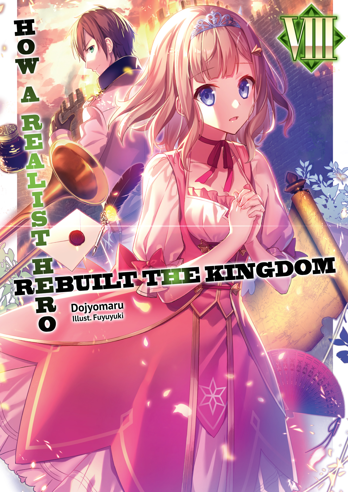
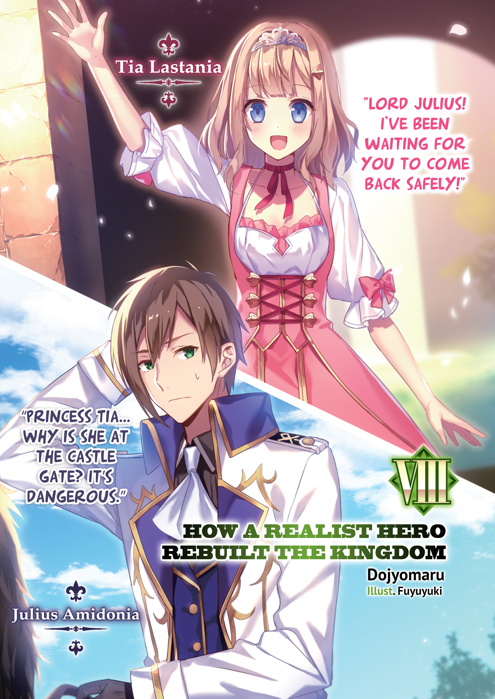
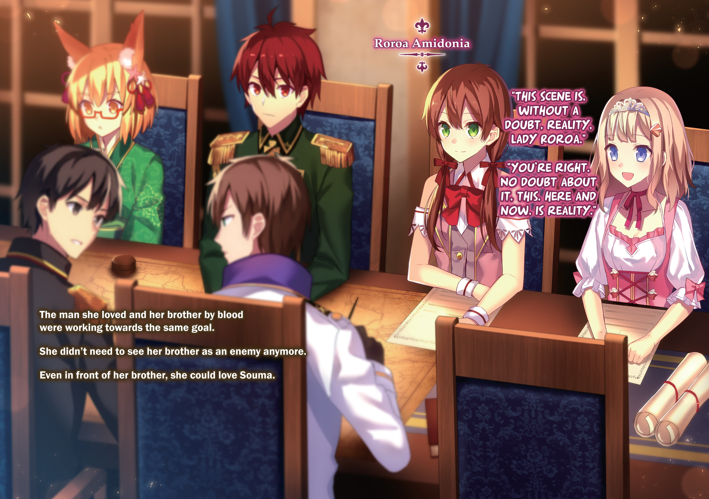

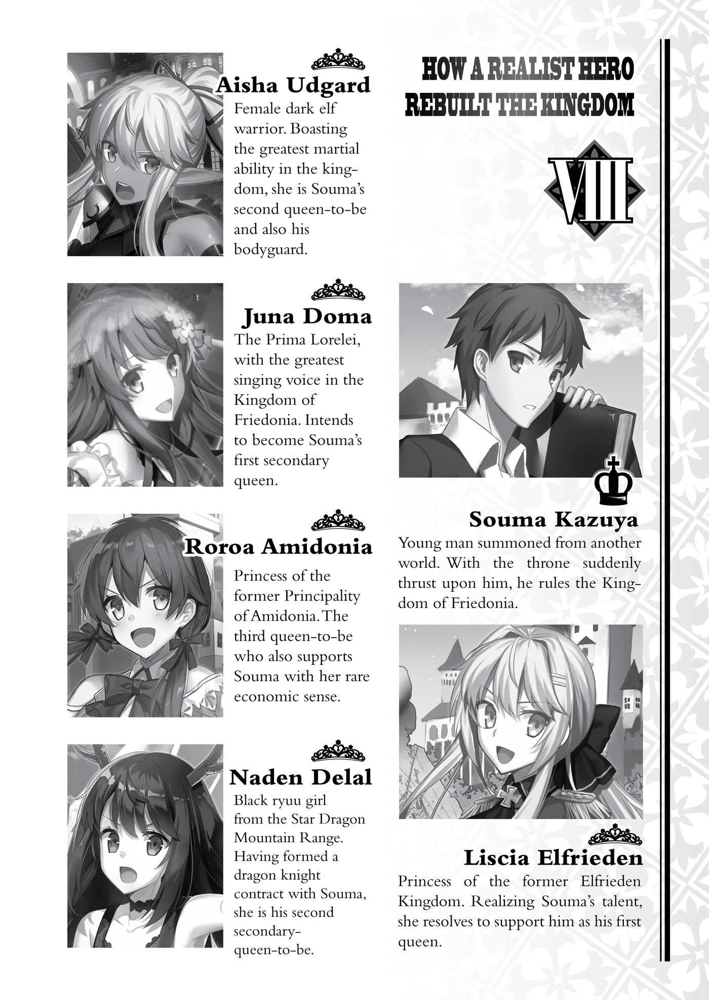
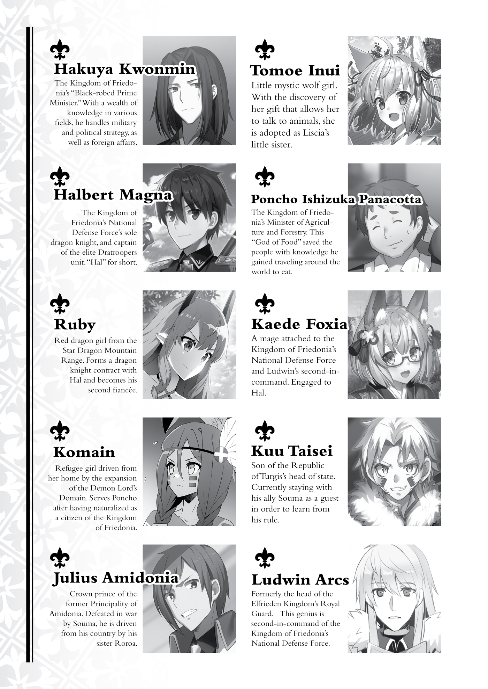
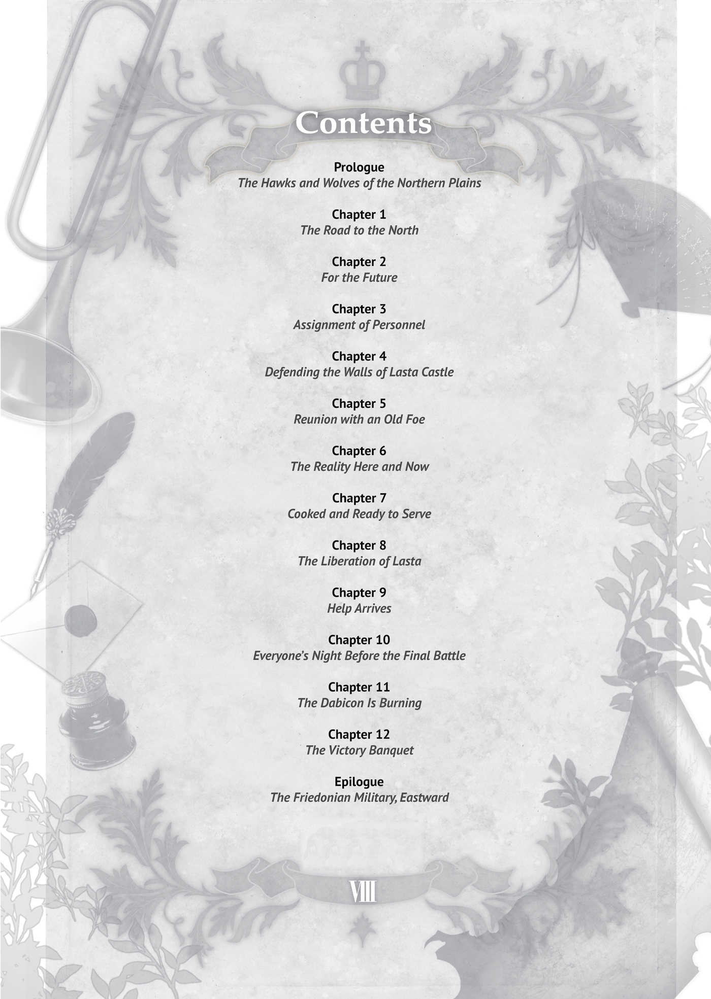
Prologue: The Hawks and Wolves of the Northern Plains
The Demon Lord’s Domain spread out across the north of the continent of Landia.
This was the land mankind had lost when one day, suddenly, a massive number of monsters appeared. Now the monsters ran wild across it, and it was rumored that demons and the Demon Lord lurked deep inside. However, such rumors were no more than guesses, and it would be fair to say that the actual situation inside at this time was a complete unknown.
Though it was called the Demon Lord’s Domain, there was no clearly defined border.
After the miserable defeat of the combined forces of mankind led by the Gran Chaos Empire, the entire area where people had abandoned their homes because they were unable to fend off the attacking monsters had come to be called the Demon Lord’s Domain.
At present, due to the initial, rapid expansion of the Demon Lord’s Domain, the concentration of monsters was now spread thinly enough that the various countries could handle them, and thus the expansion had stopped.
For the countries bordering the Demon Lord’s Domain, fighting monsters was a daily affair.
Though the expansion of the Demon Lord’s Domain was now suppressed, battles between mankind and monsters from the north unfolded nearly every day.
There were times when the monsters attacked alone, and there were times when packs of around ten would attack at the same time.
On exceptionally rare occasions, swarms of over a hundred monsters would attack, and in those cases, a single, small nation from the Union of Eastern Nations couldn’t handle them alone and would have to coordinate with neighboring countries to deal with the situation.
In one such country bordering the Demon Lord’s Domain, the small Kingdom of Lastania, which belonged to the Union of Eastern Nations, there was a battle currently going on near the border with the Demon Lord’s Domain.
This hadn’t happened often in recent years, but around twenty monsters had just appeared near the Kingdom of Lastania. They weren’t all the same type, having all come from different races. They varied from zombified, rotting ogres and goblins to bizarre beasts that defied explanation, like a winged snake and a two-headed black panther.
What the monsters did have in common was the glint in their hungry eyes with which they glared at their prey.
The Kingdom of Lastania, with its population of 20,000, only had about 500 pure soldiers, and only a hundred of those could be immediately mobilized, so it wasn’t an easy number to handle by any means. If it came to it, the people themselves would have to take up arms. For now, though, that wasn’t necessary.
“Defend! Defend!” a soldier shouted.
“Form up! If we leave any gaps between us, they’ll get in!”
On the battlefield, soldiers were stopping a fierce assault by zombie goblins.
The zombie goblins eschewed any sort of tactics in favor of just charging in, so by keeping them back with shields and thrusting out spears from the gaps in between them, the soldiers were taking them out one by one.
In among those shield-bearing soldiers was one who wore armor and carried an even larger shield, shouting at the rest.
“Archers, aim for anything that flies first! If we let even one through, our families will be eaten alive!”
The words were brave, but the pitch was high. The bearer of the large shield was a woman.
She was twenty-three years old. She was tall at 180 centimeters and was quite muscular, but her facial features still retained a touch of femininity.
This was Lauren, who, despite her young age, was the captain of the Kingdom of Lastania’s troops.
Though her rank was captain, with the low number of troops the Kingdom of Lastania had to begin with, she commanded all of them.
At Lauren’s order, a unit equipped with crossbows made bolts rain down on the flying snake that was trying to pass overhead, taking it down.
Then there was a scream from the shield-bearers.
“Captain! It’s an ogre!”
When she looked, a single ogre of over three meters in height, its flesh festering like a zombie’s, was dashing toward the shield-bearers like the zombie goblins. Rotten or not...it was still an ogre. It put tremendous pressure on the line, sending four of the soldiers flying at once.
“Urgh!” Lauren cried. “Cluster together and stop its charge! Don’t let that thing get into town!”
When Lauren gave the order, she raised her large shield and stood in front of the zombie ogre herself.
“Captain! Hey, we’re going to help!” a soldier called.
“Reservists, gather around the captain!”
With eight shield-bearing soldiers, Lauren included, blocking the ogre, they were finally able to halt its advance. Though its advance had pushed them back, the ogre was stopped just in time.
“Lancers, archers, finish it while we’re holding it here!” Lauren ordered.
“Yes, ma’am! Archers, fire!”
“Go down, you oversized monster!”
Arrows and lances bit into the zombie ogre’s putrefied flesh.
However, though countless arrows and many lances had pierced its body, the zombie ogre just wouldn’t die. With each swing of its log-like arms, one soldier, then another, were sent flying. Another soldier immediately came to fill the gap in their defenses and hold it back, but their formation had been thrown into chaos.
““Raaaaaaaaaaaar!”” the two-headed panther roared.
“Whoa! Gagh!”
Weaving through the gaps, the two-headed black panther broke past the shield-bearers and bit one archer’s head from both sides. His head being bitten and torn from two directions, the archer fell, covered in his own fresh blood.
Its prey felled, the two-headed black panther set its sights on the exposed backs of Lauren and the shield-bearers who were holding back the zombie ogre.
“Damn! It’s behind us...”
““Grrr!”” The two-headed black panther tried attacking Lauren from behind.
“I won’t let you!” Someone stepped in-between Lauren and the two-headed black panther.
It was a muscular man who wore clothing like a Native American’s and carried a kukri in each hand. He was protecting Lauren. The man blocked the monster’s fangs with the kukri in his right hand. Then, holding his left kukri with a backhanded grip, he stabbed it into the top of one of the creature’s two heads.
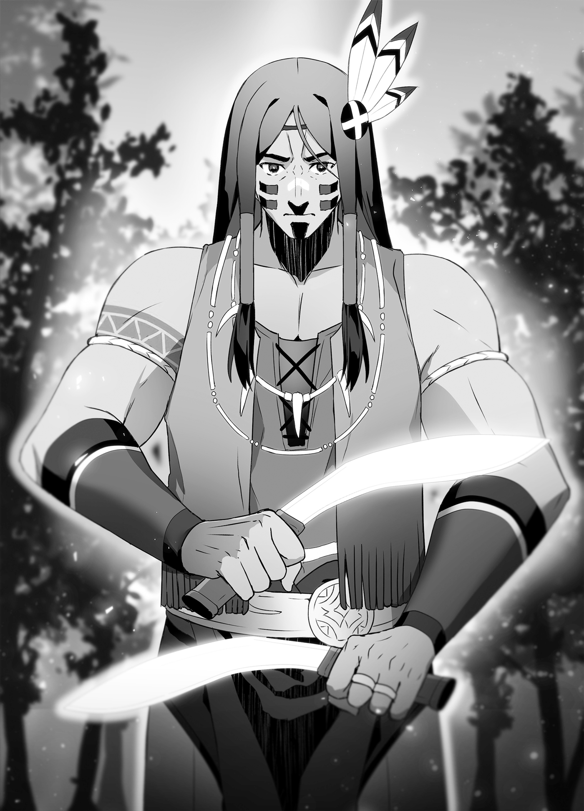
To finish it off, he stabbed its other head in the throat.
The two-headed black panther fell to the ground with a thud.
Once he’d confirmed that the enemy was completely neutralized, the man tore his kukris free and rushed over to Lauren.
“Are you all right, Madam Lauren?!”
“Sir Jirukoma! You came!” Lauren’s face burst with joy at the sight of reliable backup... but her seriousness quickly returned. She kept her guard up against the zombie ogre she was holding back as she asked, “If you’re here, is the volunteer army here too?”
“Yes. However, I’ve come ahead by myself. We need to hold out for a while longer...”
While Jirukoma was still talking, the monsters on the other side suddenly began roaring.
A group of around fifty armed people had joined the fray, catching the monsters from behind.
Within that group was a young man, taking command as he rode around on horseback. This man, who had an air of nobility about him, looked at the battlefield with keen eyes and gave orders to the group of men.
“These witless monsters see only what’s in front of them. Attack from the rear and flanks to make quick work of them!”
The young man’s name was Julius Amidonia. He’d once been the crown prince of Amidonia.
The force he now led was a volunteer army composed of refugees seeking to return to their homelands, which were now part of the Demon Lord’s Domain.
Normally, the volunteer army should have been commanded by their leader, Jirukoma, but Jirukoma preferred to fight as a single warrior. In most situations, Jirukoma left command to Julius, who was a visiting general in the Kingdom of Lastania.
“Indeed. Sir Julius’s commands are as apt as ever. I can feel at ease watching him,” Lauren said, feeling impressed.
“You’re right,” Jirukoma agreed. “When it comes to commanding troops, he’s far more capable than I am. He does complain, ‘Why is it that I must always clean up after your messes?’ all the time though.”
“Sir Julius is dependable after all. I can see why you’d end up relying on him.”
While the two of them were talking, Julius and the volunteer army’s charge threw the monsters’ ranks into disarray. Not missing their opportunity now that the pressure had lessened, the shield-bearers moved up, knocking down the zombie ogre and other monsters.
The lancers swarmed around the fallen zombie ogre, stabbing it again and again. The archers loosed their arrows from a distance, and when its body was finally turned into a pincushion of spears and arrows, the zombie ogre stopped moving at last.
Having confirmed their enemy was dead, the soldiers raised their voices.
“I-It’s dead! We killed it!”
“We brought down the big one!”
“““Yeahhhhhh!”””
Having killed a powerful enemy boosted the soldiers’ morale.
Now they moved on to mopping up the remaining monsters, and Jirukoma and Lauren both breathed a sigh of relief.
While they were wiping their brows, Julius rode over to them on his horse.
“Jirukoma! You pushed the troops off on me and charged in again! You’re supposed to be the leader of this volunteer army! And you, Madam Lauren! It should be unthinkable for the captain to be out on the front lines! If anything were to happen to you, who would keep this country’s soldiers together?!”
The moment he arrived, Julius started giving them both a piece of his mind.
Jirukoma and Lauren both listened with wry smiles.
Getting chewed out by Julius had become a regular part of what happened after a battle with monsters. The two of them kept charging in no matter how much they were lectured about it, and Julius continued lecturing them, even knowing it was hopeless.
None of the three had learned their lesson.
“Besides, the problem with you people is...” Julius insisted.
Cutting him off, Lauren said, “Now then, the monsters are wiped out. Let’s head back. All right, people, we’re pulling out!” She clapped her hands.
“Hey, I wasn’t done...”
“Now, now, Julius,” said Jirukoma. “We can listen to you tell us off on the way back, so let’s get going for now. There are people eagerly awaiting our return, you know?”
“...Hmph.”
Having been mollified by Jirukoma, Julius looked away, unamused.
He didn’t say any more, though, so he must have accepted it.
Seeing the way Julius was acting, Jirukoma and Lauren looked at each other, then burst out laughing.
“Jirukoma,” Julius said. “What do you make of the recent monster attacks?”
On the way back to the castle with the soldiers, Jirukoma was walking beside Julius as he rode on horseback. Jirukoma could ride a horse too, but he preferred to walk because his style was more suited to fighting on foot, and it served as training.
Hearing the question, Jirukoma cocked his head to the side.
“Has there been something about them that’s caught your attention?”
“There has been an increase in both the number of monsters and frequency of attacks of late. If the numbers increase any further, the soldiers will not be able to handle them alone.”
“If you’re right...” Lauren said seriously, “the people will have to take up arms.”
Though it was called a kingdom, Lastania was no bigger than a mid-range noble’s domain in Elfrieden or Amidonia. The population was around 20,000, and that naturally included non-combatants like women, children, and the elderly. Even if they enforced conscription, only 5,000 of them could fight, at best.
Julius held his chin with a pensive look on his face.
“Even if we could get the numbers, a haphazardly assembled force won’t be much use in battle. Even with the volunteer soldiers added to their numbers, this country has fewer than 600 soldiers. If the monsters come in greater numbers than that, it’s inevitable that we’ll struggle. If their number exceeds 1,000...it will be the end of this country.”
Julius had a serious look on his face. He probably wasn’t exaggerating.
To wipe away the oppressively serious atmosphere, Jirukoma deliberately chose to be optimistic.
“The Union of Eastern Nations was formed to prevent that, right? So that they can coordinate their response when a situation a small or medium-sized country can’t handle alone arises. Besides, if it comes to it, won’t the United Forces come to help?”
The United Forces that Jirukoma was speaking of was shorthand for the United Forces of the Eastern Nations, a battalion created with troops levied from each of the members of the Union of Eastern Nations. (In the case of small countries, this was ten percent of their army, and in the case of medium-sized countries, it was thirty percent.)
If a member of the union was threatened by the Demon Lord’s Domain or another country, the United Forces would be dispatched.
However, Julius shook his head.
“It’s true, if this country were the only one being invaded, we could count on the United Forces to come to our aid. However, based on the information I’ve gathered from the traveling merchants, this country is not the only one seeing a rise in monster attacks.”
“You’re a visiting general, aren’t you?” Jirukoma asked. “Do they even have you handling intelligence?”
“There’s no one else to do it, so what choice do I have? I’ve experienced firsthand the terror of what can happen when you are negligent about gathering intelligence,” Julius said, frowning.
His knowledge of the importance of intelligence gathering had come from his experience of misreading the political situation inside the Elfrieden Kingdom, dispatching troops too easily, then suffering a major defeat.
Julius shook his head and tried moving on. “From what the merchants tell me, monster attacks have risen in every country bordering the Demon Lord’s Domain. If there’s a major monster offensive across a wide area of the border, even the United Forces will be unable to handle it. Besides, the United Forces will head out to help the countries that contribute the greatest numbers of troops first, I’m sure.”
Because it was a force composed of troops contributed by each country, it was, in some ways, inevitable that the countries most of those troops belonged to would be a higher priority. If the countries with the greatest numbers of troops were in trouble, the United Forces may wholly collapse, and assisting other countries wouldn’t boost morale.
That was why a small country like the Kingdom of Lastania may be at the bottom of the list.
“Urgh...” Jirukoma groaned. “Then what about asking the Nothung Dragon Knight Kingdom to provide reinforcements? Lastania has an alliance with them, right?”
The Nothung Dragon Knight Kingdom, which had many powerful dragon knights in its service, was said to be theoretically capable of fighting the Gran Chaos Empire on even footing in a defensive war. The kingdom had been allied with the Kingdom of Lastania for a long time, since before the founding of the Union of Eastern Nations.
The alliance had remained in place even after the Kingdom of Lastania’s accession to the Union of Eastern Nations, and now their kingdom served as the Nothung Dragon Knight Kingdom’s point of contact with the union.
It was no exaggeration to say that this country, which seemed so small and insignificant that it might blow away in the wind, still existed at all thanks to that alliance.
But Julius shook his head.
“I told you the increase in monster attacks has affected every country that borders the Demon Lord’s Domain, didn’t I? The Nothung Dragon Knight Kingdom is a bordering country too. They must be seeing an increase in attacks themselves.”
“You mean they may be too busy looking after themselves to be able to spare anything for us?” Jirukoma asked, appalled.
If worse came to worst, they would have to fight with only this country’s forces. That reality put Jirukoma in a dark mood.
Julius sighed slightly. “In times like this, I can’t help but wish I had the 10,000 troops I once commanded.”
In the time between the death of his father, Gaius VIII, and his sister, Roroa, driving him from the country, Julius had been the sovereign prince of Amidonia. He’d only served as prince for a short while, but during that time, Julius had held 10,000 troops at his command.
“If I still had those troops, I wouldn’t have to worry like this...” he murmured.
“But during the time when you were leading those troops, you wouldn’t have given a second thought to a small country like this, would you?”
“You may be right.” Julius took on a sad face for a moment, then laughed bitterly. “Honestly... There are so many things you only understand the value of once you’ve lost them.”
“But there are also many times you think you’ve lost something, when you haven’t lost it at all,” Jirukoma said, as Julius laughed mockingly at himself. “We were driven from our homelands as refugees, but they are not lost to us. Though they are now part of the Demon Lord’s Domain, the mountains and rivers that raised us are still in those lands. So it is for our families too. Though I have parted ways with her, my sister Komain is still alive and well in the kingdom.”
Granted, Komain’s last letter had said, “I have found the one I am meant to serve!” in somewhat excited writing, so Jirukoma was more than a little worried about her.
“My homeland and family...huh,” Julius murmured.
For Julius, the Principality of Amidonia was his homeland, and his only family was his younger sister Roroa. His last memories of each were bitter ones, but they hadn’t faded away and disappeared entirely.
He’d heard the Principality of Amidonia was now incorporated into the Elfrieden Kingdom and Roroa was King Souma of Elfrieden’s fiancée, but...they did certainly both still exist.
“You’re right... If it comes to it, I suppose I’ll bow my head to my sister,” he said. “It will be humiliating, but if it gets us reinforcements, my self-respect is a small price to pay.”
To encourage Julius, who was smiling faintly, Jirukoma slapped him on the lower back.
“Ow! What was that for?!”
“I only know you as you’ve been in this country. No matter what type of person you may have been in the past.”
Julius was silent.
“But the way you are now, you’re not that disagreeable,” Jirukoma went on. “When we first met, you had the eyes of a lost man, searching for answers, but now you seem full of life to me.”
Hearing Jirukoma assess him that way, Julius let out a “Hmph,” and looked away from the man. “The House of Amidonia is a house of warriors. I must have regained my true self while fighting these monsters.”
“Hmm... Is that really all it is?”
“What are you trying to say?”
“Couldn’t it have been someone else’s influence? Look, it seems you have someone waiting for your return.”
Jirukoma directed the upset Julius’s attention to the castle gate.
In front was a charming young girl wearing a light-colored dress that resembled a knee-length Tyrolean dirndl, and she was waving at Julius. Her attire was common, but, on closer inspection, a pretty tiara was sitting atop her head.
The lovely girl had short, airy hair and a face that retained traces of youth.
“Lord Julius! I’ve been waiting for you to come back safely!” The girl waved her hands as if expressing her joy with her entire body as she called out to him.
In that moment, the soldiers smirked, and their jealous gazes all focused on Julius. This girl was Lastania’s princess, Tia Lastania.
When she called out to him in front of all the soldiers, Julius held his head in his hands.
“Princess Tia... Why is she at the castle gate? It’s dangerous.”
“That must simply be due to how much she’s missed you. Be on your way now, quickly.”
Jirukoma gave the horse Julius was riding a hard slap on the rear. The way the horse suddenly began running nearly made Julius fall, and he shot Jirukoma a vengeful look for a moment, but he quickly continued the race to Princess Tia.
“Those two make a cute couple, don’t they?”
When Jirukoma turned back to the voice behind him, Captain Lauren was standing there with a smile.
“Sir Julius is royalty too, so there can be no complaint about his pedigree,” she went on. “More than that, Princess Tia is very fond of him, so the king fully intends to take him in as her groom.”
“Julius says he’s ‘not ready for a family yet’ though.”
“Oh, the princess doesn’t stand a chance then?” Lauren asked.
“No, I think it’s a matter of determination. Julius seems to have been saved by the princess’s cheer, so if he just finds the resolve to live here until his dying days, the rest may go quickly.”
The two of them watched as Julius reached Princess Tia and immediately began scolding her about something. Princess Tia covered her ears as if to say, “I’m not listeniiing,” and looked away peevishly. They were like a close pair of siblings.
Frustrated, Julius picked up Princess Tia by the arms and sat her in front of him. From there, the two of them rode into the castle together.
Princess Tia was tucked snugly in front of Julius and leaned back against him with a soft smile.
Jirukoma and Lauren watched the two of them, grinning.
“They sure do get along well, don’t they?” Lauren asked.
“Haha! You may be right.”
“...U-Um... Sir Jirukoma,” Lauren ventured. “We’re both single, so would you join me for drinks tonight in celebration of our victory?”
“I couldn’t ask for more. Let’s drink together.”
“Okay!”
With that said, the two of them passed through the gate. And, having the well-liked Lauren to himself for the night, Jirukoma was subjected to jealous stares from all the single soldiers.
Chapter 1: The Road to the North
—Late in the 9th month, 1,547th year, Continental Calendar—
“It’s been a while, Sir Souma.”
On this day, I was in the Jewel Voice Room in the castle, speaking to a beautiful woman on the other side of a simple receiver whose distinctive wavy hair left me entranced despite myself.
It was Empress Maria Euphoria of the Gran Chaos Empire.
Behind me I had my prime minister, Hakuya, and behind Maria was her little sister and general, Jeanne, standing by.
That the heads of each country and their seconds-in-command were all present at this meeting signified how important it was.
Looking, perhaps, to start off with some friendly chat, Maria smiled. “I hear you will be having a child. Congratulations.”
I smiled back and returned the greeting. “Thank you. It hasn’t quite sunk in yet though...”
“Hehe! If it’s Liscia’s child, I’m sure it will be cute. I hear you’re a year younger than me, Sir Souma, but it seems you’ve beaten me to it, haven’t you?” Maria said teasingly.
If I recalled correctly, Juna, who was the same age as me according to this world’s calendar, was actually a year older by Earth’s calendar, so that would mean Maria, who was a year older than me, was actually two years older.
Well, I was too afraid to bring up the matter of age with a woman, so I decided to let it go.
“But, well, now Liscia and I will both be set free from Marx constantly begging us to ‘hurry and produce an heir!’ so that’s a relief.”
“I envy you,” Maria said. “I’m still being told to ‘hurry up and take a husband!’”
“You don’t have anyone in mind?”
“When you are an empress, it’s difficult. It needs to be someone who can carry the weight of an empire on their shoulders after all.”
“You’re...a little too far out of everyone’s league then, I guess.”
Very different from how my engagement to Liscia had been arranged by the former king, Sir Albert. It seemed it was quite hard for an empress of the Empire to get married.
Then Madam Maria gave me a teasing smile. “Hehe, maybe I should have you take me as your wife, Sir Souma? It would be a big help if you could handle all of the Empire’s troubles for me like you did for Princess Roroa, you know?”
“Wh-What are you saying, Sister?!” Jeanne raised her voice before I could get a word out. “You carry the weight of the Empire! You mustn’t say such things so carelessly...”
“Don’t be so angry, Jeanne,” Maria said. “It was just a little joke.”
“There are things you can joke about and things you can’t!”
Oh, Maria... You’re just playing around and teasing Jeanne, I thought.
Jeanne had a straightforward personality, like Liscia, so it must be amusing to have her react every time.
“I would be honored to have a wonderful woman like you as my bride, Madam Maria... But I must say, I don’t have the confidence to rule a vast territory like the Empire on top of my kingdom. Managing Elfrieden and Amidonia is the best I can manage, I’m afraid.”
“I don’t think that’s true, but...if you wouldn’t mind, I’d be happy to take that Black-robed Prime Minister of yours instead. I’ll relinquish the throne to Jeanne, so would you consider marrying Jeanne and becoming emperor?”
“Sister?!” Jeanne cried.
It looked like Maria had turned on Hakuya now.
Hakuya himself looked unperturbed, touching his chin thoughtfully before he responded. “I do think Madam Jeanne is an attractive woman. However, I will have to pass on being emperor. If you would send her to this country to be my bride, I will gladly have her though.”
“S-Sir Hakuya, you too?!”
“Boo,” Maria pouted. “If you’re not gonna let me retire, you can’t have her.”
“Sister, would you please shut up?!”
With the two of them jerking her around, Jeanne’s face was bright red.
Maria aside, Hakuya wasn’t the type to toy with people like this, so, surprisingly enough, he may have meant it seriously.
Well, whatever the case may be, we didn’t have time to waste talking about silly things.
“Now then, Madam Maria,” I said, “isn’t it about time we got to the topic at hand?”
“I suppose it is.” Her gentle smile vanishing, Maria put on a serious expression and said, “King Souma Kazuya of the Kingdom of Friedonia, in accordance with the pact forged between our two countries, I would like you to provide reinforcements to the Union of Eastern Nations.”
“Does this involve the Demon Lord’s Domain?” I asked.
Maria silently nodded.
The secret pact between the kingdom and the Empire stated: “In exchange for not joining the Mankind Declaration led by the Empire, in the event that the eastern side of the continent (the side with the Union of Eastern Nations) is menaced by the threat of the Demon Lord’s Domain, the kingdom will handle it in place of the Empire.”
“As I told you while you were in the republic, there has been an increase in attacks against the northern countries by monsters from the Demon Lord’s Domain,” Maria said. “Their numbers and frequency rise by the day.”
“Just monsters? What about demons?”
In the Demon Lord’s Domain, there were monsters that weren’t thought to be intelligent, as well as demons that were. That was Maria’s and my common understanding.
The ones indiscriminately attacking mankind were the monsters, and if we tried to deal with them and the demons in the same way, pest extermination would turn to war, and it might lead to a repeat of mankind’s terrible defeat over a decade ago.
Our hope was to maintain the status quo, and, if possible, make contact with the demons.
However, Maria shook her head in disappointment. “Only monsters are attacking. There have been several cases like this where a massive number of monsters have appeared and pushed south. We call these ‘manami’ or ‘demon waves.’”
“Manami...” I repeated.
That sounds like a woman’s name, I thought. I knew it wasn’t going to be anything so easy to deal with though.
“Looking at the records of past demon waves, it seems this surge of monsters and increase in attacks is a temporary phenomenon. If we can exterminate the attacking monsters, things should return to a state of relative calm for some time.”
“I see...” I mused. “It really is like a wave then.”
“Still, there are a great many of them, putting the threat at a level that a small to medium-sized country can’t handle alone.”
Maria had Jeanne unfurl a map they’d prepared and show it to me. Then Maria pointed to each country on the map as she spoke.
“We will protect the west of the continent and those countries that are subservient to the Empire. With the powerful dragon knights they possess, the Nothung Dragon Knight Kingdom can handle themselves, I’m sure.”
True enough, the Empire, which was the strongest of mankind’s nations, and those countries aligned with it, along with the Nothung Dragon Knight Kingdom, which had powerful dragons like Naden or Ruby, could easily defend themselves.
Then, with a strained look on her face, she pointed to the countries in the east.
“The issue is the Union of Eastern Nations, which is a large alliance, but made up of medium to small countries. While they have the United Forces, consisting of manpower provided by each country, by its very nature they are unevenly distributed. If the small-scale countries don’t receive enough support, there will be places that fail to hold the line.”
“I see your point,” I nodded. “You’d like us to send reinforcements to those smaller countries, right?”
Maria nodded. “Please do. I leave the location and methods to you, but please work with all due haste to save people’s lives. There have been many refugees since the coming of the Demon Lord’s Domain. I don’t want to see the pain of people being driven from their homelands spread any further.”
“That’s what our pact is for. Though, since we’ll be supporting you by dispatching troops, please don’t go asking for war subsidies for the time being, okay?”
“Of course not.”
War subsidies were paid by countries that were distant from the Demon Lord’s Domain to the countries that were bordering it. It was a considerable burden, but from a humanitarian perspective, and from the practical perspective that, if the north fell, we would be directly affected, it would be hard to refuse resuming payment if it were requested.
It was much easier if we could get by without payment being requested.
With that settled, Maria began using a pointing stick to point at a new map of the Union of Eastern Nations that Jeanne had prepared, explaining where reinforcements should be sent.
“There are two places in the Union of Eastern Nations that will be especially in need of reinforcements. The first is on the western edge of the Union of Eastern Nations’ border with the Demon Lord’s Domain, the Kingdom of Lastania, which also borders the Nothung Dragon Knight Kingdom. It is a small country, but has an alliance with the Dragon Knight Kingdom, and they can call for help in times of need. But the Dragon Knight Kingdom is also being attacked by monsters from the current demon wave, so it is expected that any assistance from them may be delayed.”
“The Kingdom of Lastania...” I murmured.
That’s the country where Jirukoma and the former refugees who decided to return north are staying, I thought. There are reports that that man is in that country too... No, that doesn’t matter now, I guess.
Next, Maria pointed to a spot near the center of the border with the Demon Lord’s Domain. “The other is the Duchy of Chima. It is a small country founded by Duke Chima, who was a noble in a medium-sized country until he gained independence. It’s a country that, in a region full of small- to medium-sized countries, has skillfully joined different camps depending on the situation and managed to maintain its independence.”
“They’re good at bargaining and strategy, I suppose.”
Just like the Sanada Clan under Masayuki, who had skillfully negotiated their way through a situation of being surrounded by the major powers of the Tokugawa, Houjou, and Uesugi and still maintained their independence. The Duchy of Chima was a small country, but its leader was no doubt highly capable.
Then Maria giggled. Had something amusing happened?
“Is something the matter?” I asked.
“Oh, no... It’s just that this Duchy of Chima apparently happens to be doing something interesting with this situation.”
“Something interesting?”
“It seems the current Duke of Chima has seven children, and they’re all beautiful, boys and girls alike. I’ve heard they’re each skilled in a variety of areas too. People from all over the Union of Eastern Nations have been requesting those seven as marriage partners or vassals.”
They were a distinguished family indeed. Since our country was looking far and wide for people of talent, I was interested in what exactly those seven’s gifts were, but...what was so interesting about the situation?
“When Duke Chima sent out a request for aid in response to the current demon wave, this is what he said: ‘For countries which send us reinforcements, in response to your performance, I will give each of you one of my six children, other than my eldest son, who is my heir, to serve as your retainer...’”
“He’s using his children as collateral to get reinforcements?!”
That was a rather bold thing to think of. What was more, since he was lending them out as retainers, not hostages, he was just that confident in the children’s abilities.
Also, since it was per country, corresponding to their performance...that meant he was sending his kids to serve only in influential and large countries.
Even in a crisis, he was craftily trying to increase his influence inside the Union of Eastern Nations. Duke Chima... He was apparently a shrewd one, and not to be taken lightly.
While I was thinking about it, Maria smiled in a way that implied something.
“Of the six, the eldest daughter, Mutsumi Chima, is a beautiful woman and an accomplished warrior. I hear many countries have sent reinforcements out of a desire for her. Though, in her case, it seems they want her as a bride, not a retainer.”
“I see... I suppose even the masters of nations can have a weakness for pretty women.”
“What’s this?” Maria teased. “You’re not interested, Sir Souma?”
I shrugged and joked, “If she’s just beautiful and strong, I already have plenty of brides-to-be who have that covered.”
Maria giggled. “Hehe. I see what you mean.”
Rather than Madam Mutsumi, I was more interested in what gifts the remaining five may possess. But if reinforcements were pouring in, there was no need to send troops to Duke Chima’s domain immediately. In which case, my policy had to be...
I thought for a little while, then told Maria, “I understand. Our country will send reinforcements to the Kingdom of Lastania. I have acquaintances there, so it’s not as though we have no ties to the country. If we still have strength to spare when the problem there is resolved, and if things still aren’t taken care of in the Duchy of Chima at that point, I will have my forces head there as well.”
Maria smiled softly and bowed her head on the other side of the screen. “Thank you. We will be counting on you.”
Thus, it was decided that my Kingdom of Friedonia would dispatch troops to the Kingdom of Lastania in the Union of Eastern Nations.
Once I was sure that the communication with Maria had been terminated, I took a breath and spoke to the person behind me.
“You can come out now, Roroa.”
Roroa poked her face out from the shadow of a piece of furniture. “What, darlin’, ya noticed?”
“I spotted someone sneaking in out of the corner of my eye.”
I hadn’t seen who exactly, but assuming it was someone that Aisha, who was guarding outside, would let through without a fuss, and someone who would sneak into a place like this, there really wasn’t anyone other than her.
“Nyahaha! Ya got me.” With an awkward smile on her face, Roroa came over to me.
Once Hakuya finished cleaning up after the broadcast conference, bowed, and left the room, Roroa and I were the only ones left.
Once we were alone, Roroa dropped the smile. “Are ya sendin’ troops to the Kingdom of Lastania?”
“Yeah. I just decided to now.”
“Is it my fault ya ended up havin’ to go north? It was me showin’ you this that made you want to go up there, wasn’t it, darlin’?”
Roroa pulled a single sealed letter from her pocket.
The wax seal I caught a glimpse of bore the crest of the princely family of Amidonia. I had already read the contents of that sealed letter.
Knowing what it said, I shook my head. “This was decided between the Empire and me beforehand. That I would support the Union of Eastern Nations if it looked like they might collapse, I mean. Even if that letter hadn’t come, I’m sure I’d have sent in the military. It’s nothing for you to worry about.”
I’d said it to cheer her up, but Roroa didn’t respond as she opened the envelope, removed the letter, and whispered while holding it so tight it crumpled.
“Big Brother...”
I was silent.
The sender was Julius Amidonia. He was the son of Gaius VIII, who had been the sovereign prince of Amidonia, as well as Roroa’s elder brother. He was also a person who, together with his father Gaius, had been stirring up revanchist sentiment against the Elfrieden Kingdom, and had worked behind the scenes to foment rebellion inside the kingdom.
In the period of confusion following my assuming the throne, Gaius had invaded the kingdom to take advantage of discord between me and the General of the Army at that time, Georg Carmine. However, this had been a trap set by Hakuya and me making use of Georg’s fake mutiny, and the principality had fallen right into it.
Later, Gaius would die in a battle near the principality’s capital Van, and Van would end up under control of the kingdom.
With Gaius fallen in battle, Julius had taken the reins and assumed his title as Prince of Amidonia, then brought in the lead signatory of the Mankind Declaration, the Gran Chaos Empire, to negotiate for the return of Van and its surrounding area. While that had resulted in the return of Van, Julius had also been forced to pay reparations and put a heavy burden on the people of the principality, thereby inviting resistance from the people and giving the Lunarian Orthodox Papal State an opening to take advantage of. Which they had, inciting the adherents of Lunarian Orthodoxy in the principality to revolt. In putting them down, Julius had lost even more of the support of his people.
Ultimately driven out by Roroa, the one bringing the country together through a network of merchants, he had gone into exile in the Empire. That was all we had known of Julius up until this point.
However, it seemed after that, he had left the Empire and wandered to various countries and was currently finding shelter in the Kingdom of Lastania.
The Kingdom of Lastania, which was now facing a heavy impact from the demon wave.
“Why’d ya go and do that?” Roroa gripped the letter she was holding tighter.
In the letter were words of concern for Roroa’s well-being, along with a description of his actions so far. Then, together with an apology for his misdeeds up to this point, he politely asked Roroa, who was slated to become my third primary queen, to encourage me, as the King of Friedonia, to send reinforcements to the Kingdom of Lastania. At the very end, it even said, “If King Souma wishes my head in exchange for this, I do not mind. So, please, can you find it in yourself to save the House of Lastania, who have done so much for me?”
To save the royal family of a petty kingdom, he was casting aside his shame and reputation to ask me, his father Gaius’s killer, and Roroa, the one who had exiled him, for aid. I couldn’t connect this behavior to the Julius he had been while acting as the Prince of Amidonia.
That was how I could tell Julius was serious. While wandering various countries, something must have changed inside him.
“Why...? Ain’t it a bit late for this...?” Tears fell from Roroa’s downcast eyes.
Roroa and Julius’s relationship was complicated. Though they were brother and sister by blood, there had been an unfillable rift between them. This was caused by Julius’s desire to inherit the quest for revenge against the Elfrieden Kingdom, and Roroa’s desire to stop expanding the military and instead rebuild the economy and make the country prosperous.
After the death of Gaius, Julius had inherited the Principality of Amidonia and tried to remove Roroa as a potential political rival. This had ended in failure when Roroa disappeared, and Julius had begun to oppress the people until Roroa brought the country together and drove him out instead.
Though they were brother and sister, they had seen one another as enemies.
Now she had suddenly received an apology and request for reinforcements from said brother, so Roroa must have still not sorted out her feelings on the matter.
“What do you think of the letter, Roroa?” I asked. “Is there something else behind it?”
“That’s not it...I don’t think,” Roroa said, looking up after wiping her eyes with her sleeve.
“Before...my proud brother’d never’ve thought to send a letter like this. He wasn’t the type to go showin’ his weaknesses to people. Somethin’ major musta happened to bring this on. I don’t think there’re any lies in what he wrote.”
“It’s in line with the information we gained from Madam Maria too.”
Whether or not his apology to Roroa was genuine, the fact of the matter was that the Kingdom of Lastania was expected to face a crisis from the demon wave. If Julius was there, it made sense he would seek reinforcements.
Roroa let out a cry of “unyaaaagh” and scratched at her head hard. “Augh, it’s all makin’ sense, and that’s what makes no sense about it! Why’s my cold, rational brother sendin’ me a letter that sounds so darn human?! He’s so different from before! I’ve gotta suspect he’s a fake!”
“In my old world, there was a saying: ‘Don’t meet a boy for three days, and watch what happens.’ While he was wandering from country to country, something must have changed Julius, don’t you think?”
“Ya sure? I don’t see that brother of mine changin’ all that easily though...”
When Roroa said that and tilted her head to the side, I hugged her close. Her body was so slender that she tucked neatly into my arms. With a body as delicate as this, Roroa had made a decision that decided the fate of the principality, and her own fate as well. I was reminded once again what an amazing girl she was.
“People change,” I said. “Meeting new people can change us dramatically. I was only a student, but I met Liscia, I met Aisha and Juna, I met you, and the next thing I knew I was a king ruling over two countries. I made a contract with Naden just the other day, and now I’m no dragon knight but a dragon king. The me of two years ago could never have imagined the me of today.”
“You’re a bit of a special case, don’tcha think, darlin’?”
Roroa sounded a bit exasperated when she said that, so I laughed.
“Fair enough. My situation may have been extreme, but we all influence one another to some degree, big or small. There are things that have changed about you since meeting us too, aren’t there, Roroa?”
“There sure are.” In my arms, Roroa finally smiled a little. “Ever since I met you, darlin’, I’ve been able to think about all the fun things we can do with money. Before that, all I had time for was how to use it efficiently, or how I could make the people of the principality’s lives easier with it. I feel like it’s been givin’ my love of festivals an extra boost.”
“Is that a good change?” I asked.
“I like me bein’ like this.”
“Well, good then.”
Then Roroa squeezed, tightening her arms around my waist. “Do ya think my brother met someone like this, and that’s what’s changed him?”
“Could be. Judging from what he wrote, it’d be someone from the Royal House of Lastania though.”
“What, did he go and find himself a woman in Lastania or somethin’?”
“That’s a bit rude.” I butted Roroa in the head lightly. “You didn’t have to put it that way...”
She let out a giggle.
Yeah, a smile definitely looked better on Roroa than tears. If possible, I wanted to keep her smiling cheerfully forever.
For that...I needed to make it so she could.
“Hey, Roroa,” I said. “If it concerns you, why don’t you come along? If you do, you can see for yourself how Julius is now.”
My sudden suggestion made Roroa’s eyes go wide.
“I can come along too? I’m not gonna be any good to ya out on the battlefield, you know?”
“If that’s the standard we’re going by, I’m basically useless too, but...we’ll likely be sending tens of thousands of troops this time. There are negotiations to be done with the Union of Eastern Nations too, so I plan to take along several bureaucrats. Also...I’m thinking I’ll bring Tomoe.”
“Whuh?! You’re takin’ Tomoe with you too?!” Roroa reacted with surprise.
I was taking Tomoe, who was only eleven years old, to a country bordering the Demon Lord’s Domain, so I could hardly blame her. Still, it was absolutely necessary.
“We’re dispatching troops to the countries bordering the Demon Lord’s Domain,” I explained. “We never know when we might encounter the demons, and, if we do, I don’t want to miss the chance to establish communication. To do that, Tomoe’s ability is essential. It may be a harsh journey for a little one like her, but I intend to have her along.”
I plopped my hand down on Roroa’s head.
“So bringing you along too is no big deal. I’m never putting you on the front line, of course, so I’m sure you’ll be sitting in the rear and staying put until we can ensure things are safe. Taking you will put more strain on Minister of Finance Colbert, but, the situation being as it is, I’m sure he’ll be fine with it. I hear he and Julius were friends after all.”
“You’re sure...I can come?” Roroa asked me with upturned eyes.
I gave her a big nod. “If that’s what you want, Roroa.”
“Nyahaha! Sure, if my brother’s really gone and changed, I wanna see him.” Roroa took my hand from on top of her head and pressed it against her cheek. “Thanks, darlin’. I love ya lots.”
“I love you too, Roroa. Now then, it looks like we’re going to be busy.” I pulled my hand away from Roroa’s cheek and let out a big yawn. “It’s our first big movement of troops in a while after all. We can’t take much time, but we need to prepare appropriately for it. Deciding who to take, where to position the ones we leave behind, and preparing the provisions and logistics too. I’m sure I’ll have to call in all the main members of the National Defense Force.”
“Well, sounds like things’ll be gettin’ lively around here then, huh,” Roroa said with a pleased smile.
It looked like she was back to being the usual Roroa.
I felt relieved, but there was one thing that still worried me.
“We’ll...have to tell Liscia about this, won’t we?”
“Oh... That’s right...”
Maybe because she sensed my reluctance, Roroa had an awkward look on her face too.
Chapter 2: For the Future
—Beginning of the 10th month, 1,547th year, Continental Calendar—
There was a little domain in the mountains of the kingdom. It was the former domain of Liscia’s father, the former king, Sir Albert. He had been the petty noble who ruled this domain, but, one day, he’d met Liscia’s mother, Lady Elisha.
At the time, the royals had been engaged in a succession crisis over who would take the throne after the death of the previous king. Even now, his personality was, in favorable terms, gentle and without a hunger for power; in less favorable terms, banal and unambitious. He avoided creating enemies where he didn’t need them. Thus, by supporting the then-young Lady Elisha with his good-natured personality, Sir Albert had unintentionally created a situation where it was hard for the other royals to turn their hatred toward Lady Elisha.
Thus, the succession crisis had ended with the elimination of all the royals but Lady Elisha, the throne going to her as the sole survivor. In recognition for his continuous support, Sir Albert had been allowed to marry Lady Elisha, thereby becoming king.
Now Sir Albert’s former lands had become part of the crown demesne, but since he had chosen to retire to them, he was essentially the lord there again.
I was now over Sir Albert’s domain, looking down from the back of Naden in her ryuu form.
The scenery was the embodiment of the countryside, in a way that made it feel like old folk songs would suit it well. There were mountains, streams, fields, and pastures, along with farmhouses dotted around.
For someone used to dealing with a murderous workload every day in the capital, it felt like time moved slower here. There was no place better for someone who wanted to live the quiet life.
“If I quit being king, living in a place like this wouldn’t be so bad,” I pondered.
“You’re way too young to be longing for the countryside.” Naden’s exasperated voice spoke straight into my mind. “I mean, you haven’t even had your coronation yet. Or our wedding. It’s a waste of time to think about what you’ll do when you quit. For one thing, with times being what they are, isn’t it going to be difficult to have an easy retirement? If there were a sudden change in the situation up north, you might not get to live to old age in the first place, you know?”
Reluctantly, I said, “I guess you have a point there.”
Naden was right. If the situation in the north—in other words, the Demon Lord’s Domain—were to change, there was no telling when this kingdom may get caught up in it. The kingdom was stable now, but if the Demon Lord’s Domain expanded any further, there would be more refugees, and the chaos from when I’d first taken the throne may well return.
The west side of the continent had Maria’s Gran Chaos Empire defending it, so I was sure they would be fine, but I couldn’t shake the feeling that the Union of Eastern Nations on the east side of the continent was just a loose gathering of small- to medium-sized nations. If they collapsed, it would affect our country too. That was why I had to dispatch reinforcements.
I sighed. “It’s not easy retiring, huh.”
“That’s how it goes. Besides...you have to create a good country for the children, don’t you? ‘Dad.’”
“Ahaha...”
Dad...huh. It hasn’t really hit home yet, but that’s what I’m going to be, aren’t I ?
“Oh, I want to hurry and see Liscia,” I said longingly.
“You’re going to say that while on my back?”
“If we have a child together, Naden, I’m confident I’ll feel the same way toward you.”
“Well, that’s fine then. I’ll carry you there, so just be patient.”
“Roger that.”
“That’s my line!”
Naden twisted her body and swam through the sky even faster. She swam through the wind toward Sir Albert’s mansion where Liscia was staying.
Today was the day I could finally see Liscia. Even after returning from the Republic of Turgis, my free time had been eaten up by all the accumulated work, preventing me from going.
That was why being able to see Liscia for the first time in a while made me so happy, but...at the same time, it weighed on me a little.
I have to tell her we’re going to the Union of Eastern Nations after all...
Just when I’d thought all my work was taken care of, the Empire had issued a request to send reinforcements to the Union of Eastern Nations. I wouldn’t be able to see her again for a while, and it was painful knowing I would worry her.
I’d really rather not worry Liscia while she’s pregnant.
Deliberately choosing not to tell her wasn’t an option. I was going to be organizing an army, and there was no way to hide that. That was why I wanted to give Liscia a proper explanation in advance, to minimize her anxiety. But it still weighed on me.
I wonder if this is how a husband who can’t tell his wife he’s being transferred to a position where he’ll have to live alone somewhere else feels...
That was what I thought as I stared vaguely up into the clear autumn sky.
The mansion with the blue roof up on the hill was the former king Sir Albert’s mansion.
When Naden and I touched down in front of the entrance, the first one to greet us was Carla in her maid dress. While we were away in Turgis, Carla had been serving as Liscia’s personal attendant and bodyguard. There were also people from the Black Cats and National Defense Force dispatched here, protecting Liscia and her family from the shadows as well as out in the sunlight.
Carla stood in front of us and bowed. “It’s been a while, master.”
“Long time no see,” I said easily. “Has anything changed with Liscia or her family?”
“Yes. Madam Hilde says both Liscia and the baby are healthy, but... Well, it would be better for you to hear it from her yourself.”
“That makes sense... Sorry. I’ve sort of ended up leaving Liscia entirely to you.”
“No, no. Liscia is my master’s partner, but she is also my irreplaceable friend. If I can help, nothing will make me happier. Besides...”
“Besides?”
When I pushed her to say more, Carla gave me a wonderful smile and said, “Unlike the head maid, Lady Elisha doesn’t make me wear embarrassing outfits!”
“Oh...”
While she was in the castle, the sadistic head maid, Serina, had been taking “good care” of Carla. Working under Lady Elisha, who always wore a gentle smile, surely was easier on her.
“You know, there’s a request from the production team on Overman Silvan saying they’d like you to make an appearance as Miss Dran again sometime soon...” I mused.
“Urgh... I-If you order it, I must obey,” Carla said with a truly displeased look on her face.
She seemed to have adapted to the short skirt on her maid dress (Serina’s idea), but apparently, she still couldn’t get used to Miss Dran’s sexy costume (also Serina’s idea).
“They’re apparently getting a lot of letters saying, ‘Bring back Miss Dran.’ The senders...are mostly full-grown men, I hear.”
“This entire country should fall to ruin...” she moaned.
“Don’t say that in front of the king!”
Her eyes looked quite pretty serious, but it would probably be best for Carla if I just laughed it off as a joke. It wasn’t a direct insult to me, so her slave collar hadn’t responded to it, but if anyone overheard, I would have to try her for lèse-majesté, so I hoped she’d cut it out.
The subject seemed dangerous, so I decided to drop it there.
“Let’s get straight to the point, Carla. Show me to where Liscia is.”
“Ah! That’s right. But first, why not go pay your respects to the former king? He’s been waiting in the parlor for you to arrive.”
“Yeah, that’d be the polite thing to do, huh. Okay then, take me to see Sir Albert first.”
“Understood. This way please.”
Carla led the way into the mansion, and Naden and I tailed after her. Then, once we were shown through to the parlor, we were greeted by Sir Albert and Lady Elisha.
“Why, son-in-law,” greeted Sir Albert. “How good it is of you to come see us.”
“You must be Naden,” Lady Elisha said, smiling. “You’re just as cute as Liscia’s been telling me.”
Sir Albert took my hand, and Lady Elisha took Naden’s.
“It’s been a while,” I said. “Father, Mother. I’m glad to see you seem to be as well as ever.”
“I-I’m Naden. Nice to meechu.” Naden was tense and slurred her words.
Seeing Naden like that, Lady Elisha giggled and hugged Naden’s head tight in her ample bosom.
“Whuhwhuh?!”
Suddenly finding herself in an embrace, Naden panicked and flailed her arms. She had to be feeling shy too.
Elisha gently patted Naden on the head. “My daughter will be marrying Sir Souma too. So, Naden, if anything should happen, please rely on me as a mother. I’m happy to have gotten another cute daughter like Tomoe.”
“Your scent reminds me of Lady Tiamat.” Naden wrapped her arms around Lady Elisha’s waist. She’d been tamed in an instant.
A scent like the holy mother dragon...? Was it the smell of motherhood, or something like that? As a ryuu, Naden had no relatives. Ruby was the only friend she had left from her homeland now too. If Lady Elisha could be her mother in this country, nothing would make me happier. It’s a happy thing to have someone who will indulge you like a child after all.
While I watched the two of them with a smile, Sir Albert began speaking.
“Son-in-law, we will take care of Madam Naden here, so please go be with Liscia. She is on the terrace in the courtyard, eagerly awaiting your arrival.”
“Thank you. I’ll do just that.”
I gave my regards to the them both, then left Naden behind and exited the parlor. Then, with guidance from Carla, I headed to the terrace facing out on the courtyard.
On the sunlit white terrace, there was a table with tea already prepared, and a lone woman was seated at it. The woman had her back to me, and she was watching the trees sway in the autumn wind.
When I gave Carla the sign indicating she’d taken me far enough, she bowed then turned on her heel and returned to the mansion.
I silently approached the table, taking a seat where I could get a glimpse of her face. The woman turned to me and smiled softly.
“It feels like it’s been such a long time, Souma.”
“Yeah, I feel like we haven’t met in forever. I wanted to see you, Liscia.”
“Hehe! Me too.” Liscia’s smile was like a flower blooming.
This was my fiancée, who I hadn’t seen in over a month since going to the Republic of Turgis. Seeing her for the first time in a long while, Liscia looked far more like an adult than she had before.
While my heart was racing at the sight of her, I opened my mouth, feeling like I had to say something. “Your hair... Has it grown?”
“Yeah. I haven’t cut it recently after all.”
Liscia’s hair, which she had cut short when issuing the ultimatum to Georg, was now about halfway back to the length it had been when I’d first met her.
“Will you grow it out to the length it was before?” I asked.
“I’m still deciding. I’m fond of the shorter hairstyle now. Which do you think looks better on me, Souma?”
“I like both.”
“Geez, you’re so indecisive.”
“So long as you don’t become a skinhead, or do anything else too extreme with your hair, I’m sure I’ll love it.”
“I won’t do that with my hair.”
Liscia and I looked at one another and smiled. We had a good laugh, then I scratched my head hard.
“Why’d I start off talking about your hair? There’re a ton of things I want to ask and tell you, but...I can’t find the right words.”
“Go through them in order,” she directed. “You have time to relax today, right?”
“Yeah. That’s right... Well, first...” I turned back to face her, bowing my head to Liscia with her swollen belly. “Thank you for making a new member of my family, Liscia.”
“Hehe! You mean our family, don’t you?” Liscia said, correcting me with a gentle smile. “With this, I’m a bona fide member of your family now.”
“I’ve thought of you as family all this time, but...I feel it even more strongly now.”
Blood ties. Soul ties. It seemed like putting it into words cheapened it, but I felt certain there was a firm bond between Liscia and I now.
Liscia giggled. “So now Aisha, Juna, and Roroa need to become part of the family too.”
“They’re all waiting for this child to be born,” I said, placing my hand on Liscia’s belly. “Before, we held a family meeting, and decided that when a child was born, no matter who it was to, we would have them call all the queens, primary or secondary, their mother. So, we’ll raise all the children together. I’m sure Aisha and Naden, being from long-lived races, will have theirs later than everyone else after all.”
Liscia laughed happily. “So our children will suddenly have five mothers!”
The children would grow up surrounded by mothers, including Liscia, who had a lot of personality. Who would influence them, and how would they grow...? I was a little worried, but also looking forward to it.
From there we updated each other on recent happenings and had a generally aimless conversation. Liscia spoke gleefully of her days of rest here.
“Lately, you know, I’ve been learning to cook from Mother.”
“You, Liscia? Why?”
“I want the baby to be able to eat my homemade cooking of course. Besides, you can cook, right? It wouldn’t do for me to be less able to cook than their father.”
To think Liscia, who spent every spare moment joining the guards for training, would take learning how to be a proper bride seriously... It was moving, somehow.
“So? How are the results so far?” I asked.
“I baked those snacks over there.” She gestured to a large plate on the table filled with scones and cookies.
Homemade by Liscia, huh? They didn’t look bad, so they probably tasted good.
I took a cookie and chucked it in my mouth. “Let’s see... Nom.”
There was a hard sensation as a sweet taste spread through my mouth. She’d put in too much sugar. That, and she’d probably kneaded the batter as hard as she could. Also, the butter had fully melted, making them hard when baked.
I looked at Liscia, sweating hard. “Errrrm... I’d love to say it was good, but...considering you want to feed them to our child...I can’t lie to you.”
“I know that. I can tell when I’ve messed up at least.” Liscia smiled wryly, but her fist was clenched tight. “This is what I can do now. But someday, I’m sure I’ll be able to make them more delicious.”
“Yeah,” I said, nodding. “I’ll be looking forward to it.”
“Yeah... But the thing is, Carla started learning at the same time, and she’s improving so much faster. I thought we were the same, so I’m having a hard time accepting it.”
“Well, I mean, Carla does have Excel’s blood in her.”
Carla’s mother, Accela, was Excel’s daughter. She was also related to Juna, who was like a walking mass of big sister power, so maybe she had a strong latent ability for domestic tasks.
Liscia sighed. “By that same token, Mother is good at cooking too...”
“Maybe you were influenced too much by Georg, your teacher in the Army?”
“Urkh... I can’t deny that.”
We kept having an aimless conversation like that. Talking about nothing... It was incredibly fun.
Then, suddenly, Liscia put on a serious expression. “Souma. You didn’t come here today just to see me, now did you?”
My heart skipped a beat as she hit the nail on the head.
“...You could tell?”
“Yes, I could tell. This is you. While we were talking, it felt like you were hiding something that was hard to say.”
“...”
“Did you find a new candidate to be queen?” Liscia stared at me, and I shook my head hard.
“No, no! It’s just, well... It looks like we’ll be sending troops north.”
“By ‘north,’ you mean to the Union of Eastern Nations?”
“Yeah. It seems like attacks from the Demon Lord’s Domain are on the rise. If the Union of Eastern Nations falls, this country will be affected too. In line with our pact with the Empire, we have to dispatch reinforcements.”
When I perfectly relayed the content of my earlier talk with the Empire, Liscia put on a worried face. “Will you be going with the troops?”
“Yeah,” I admitted. “So...it’ll be a while before we can see each other again.”
“Why? This is different from when you were fighting the forces of Amidonia.” Her tone didn’t blame me, but I could tell she didn’t want me to go. “Back then, you had just been given the throne, and the troops wouldn’t have trusted you if you hadn’t led them yourself. But now everyone sees you as king. Can’t you leave this to a commander like Sir Ludwin?”
“To prepare for unanticipated events, I want to bring powerful fighters like Aisha and Naden,” I said. “It’s better if I’m there to lead them. There’s also the fact that I want to see the situation in the north for myself too.”
The detail about Julius would only cause her to worry, so I could probably omit it.
I stood up, walked behind Liscia, and gently embraced her. “It pains me not being able to be by your side when you’re about to give birth, but today, when I saw you with the baby so large in your belly, it made me even more sure I had to go north. I want to leave my children the best country I can after all.”
“Souma...” Liscia closed her eyes as I kept hugging her tight.
There was a quiet moment between us, then eventually Liscia lightly laid her hand on my arm and smiled.
“I understand. But make sure you come back.”
“Yeah. If things get dangerous, I’ll come running back. I can’t die without seeing my child’s face after all.”
She chuckled. “Make sure you do. I’ll be waiting for you with these kids.”
“Yeah!” I nodded firmly, but then got caught on the wording of what Liscia had just said. “...Huh? These kids?”
When I parroted those words back, Liscia had a blank look on her face and said, “What? Didn’t Hilde tell you? I’m pregnant with twins.”
“Huh...? Whahhhhhhhhh?!”
What a shocking fact! I was suddenly going to be a father to twins!
Now that she mentioned it, Liscia was looking awfully big for where she was in the pregnancy. But still, twins, huh...
The feeling that I had to come back home safely grew even stronger.
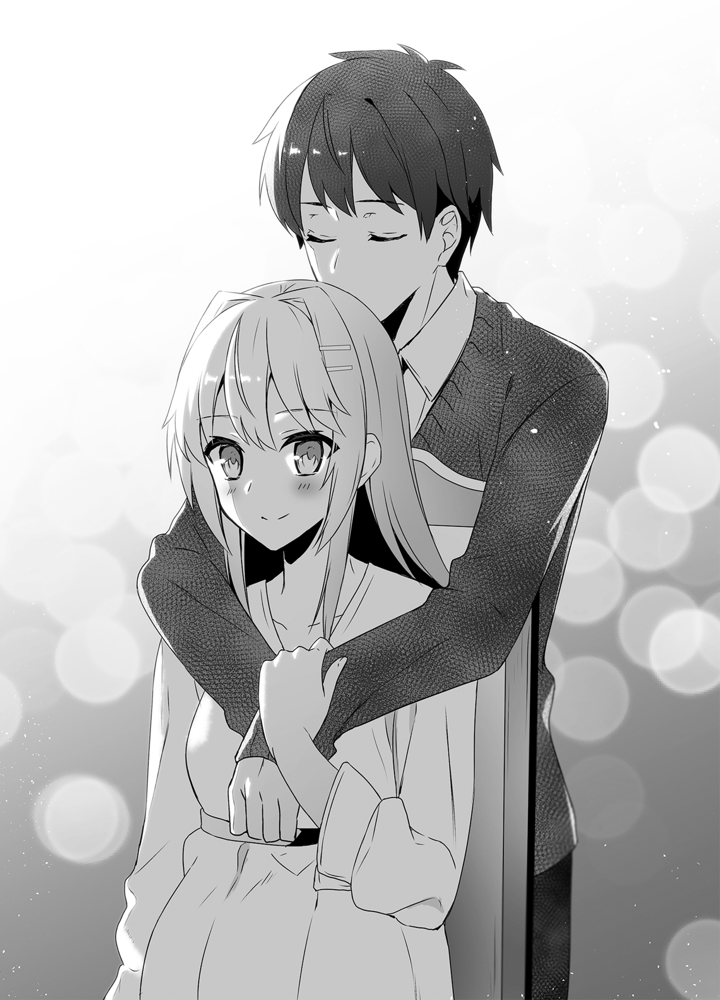
Chapter 3: Assignment of Personnel
—10th day, 10th month, 1,547th year, Continental Calendar—Parnam Castle—
On this day, the audience chamber in Parnam Castle was packed full of people.
Even without including the guards, there were more than thirty people gathered, and the supposedly large audience chamber felt cramped.
There was a lot of variety in the faces assembled too.
Most were members of the National Defense Force like Excel or Ludwin, but there were bureaucrats like Poncho and Colbert too. There were also those from abroad like the bishop from the Lunarian Orthodox Papal State, Souji, and Kuu, the son of the Republic of Turgis’s head of state. Even the former General of the Air Force, Castor, who was supposed to be in Excel’s custody, was in attendance, causing those present to buzz with excitement.
Here was a scene in which nearly all of Souma’s main vassals, irrespective of position, were present.
There were some people here who hadn’t seen each other in a while, and here and there people could be heard getting reacquainted.
“Master, it’s good to see you again.” The current head of the air division of the National Defense Force and former steward of House Vargas, Tolman, was bowing to his former master, Castor.
Castor hurriedly made him stop bowing. “Don’t call me ‘master.’ I’m no longer head of the House of Vargas. I left the headship to Carl and am in the custody of the House of Walter now. If you bow your head to me, it looks bad.”
“Ah... I see. Then what am I to call you from now on?”
“You can just call me Castor for all I care, but...if you must call me something else, make it ‘captain.’”
“Captain...you say?”
“That’s right!” Castor nodded, then put the captain’s hat that was in his hands back on his head with the brim low over his eyes. “I have a ship and her crew at my command now. It’s nowhere near as many men as I once had, but I like this job more than you might think.”
“Now that you mention it...you’ve developed a tan. Like a man of the sea.”
As Tolman had pointed out, Castor was a lot more tanned than before. He was thin, buff, and looked young, so he looked like a surfer on the beach in summer.
As Castor rolled up his sleeves to show it off, he gave a jolly laugh. “Compared to the high altitude of Red Dragon City, Lagoon City is hot and humid. I dress lightly all the time, and this is what happened.”
“You look so strong and dependable. Why, if the lady of the house could see you, I do believe she would fall in love all over again, wouldn’t you agree?”
“Is Accela...doing well?” Castor asked hesitantly.
“Yes. Both she and Carla are doing fine. However, unlike Carla who appears in Jewel Voice Broadcasts, I don’t hear much of you, mas...captain, so I’ve been somewhat worried. I have a message I was asked to convey if I had the opportunity to meet with you.”
“A message?” Castor asked.
“Lady Accela told me this: ‘I am a dragonewt myself, so I will live a long life. Therefore, I can wait for as long as I must.’”
Lady Accela was the child of Excel and a dragonewt man.
“I see... Accela will wait for me, will she...?” Hearing the message from his separated wife, Castor smiled a little sadly.
It was a somber atmosphere, but...Tolman’s message didn’t end there. “Um... There was one more thing. ‘However, if it takes too long, I will seek permission from His Majesty to come see you. If I find you living a slovenly life when I get there, Mother and I will lecture you together, so be prepared for that...’ That was the other message.”
“Urgh...”
The somber mood was wrecked in an instant, and Castor began sweating profusely. He must have had something to feel guilty about, because his eyes were darting about furtively.
“A-Accela shouldn’t be receiving any information about me, right?”
“She shouldn’t, but...does something come to mind?” Tolman asked.
“No, that wasn’t my fault! Yes, I went to a place of wine and women with my fellow sailors, but only as a means of socializing!”
“Captain...” Tolman pressed on his forehead and shook his head in exasperation.
It was a conversation between master and servant, no different from the ones they had once had in Red Dragon City.
While the former master and servant were having that exchange, the current master and servant team, Kuu and Leporina, were meeting again for the first time since in the Republic of Turgis.
“Ookyaya! It’s been a little while, Hal!” Kuu cried.
“Hey, Kuu! It has been a little while!”
Kuu and Halbert, who had fought together in the republic, exchanged a firm handshake. Beside them, Kaede and Leporina were shaking hands.
“It’s been a while since I’ve seen you too, Leporina.”
“Good to see you again, Kaede.”
“???” Ruby, who was standing beside Halbert with Kaede, was left with a blank look on her face, looking completely out of the loop. She tugged on Halbert’s sleeve for an explanation. “Who are these people, Hal?”
“Oh, right. This is your first time meeting them. This is the son of the current head of the Republic of Turgis, Kuu Taisei, and his follower Leporina. Kuu, this is Ruby, the dragon I formed a contract with in the Star Dragon Mountain Range. That makes her my second fiancée.”
Following that, they introduced themselves to each other. Kuu and Leporina were smiling, but Ruby was confused about what to do after hearing Kuu was the son of the head of the Republic of Turgis.
“The son of their head of state?!” she exclaimed. “He’s the son of the leader of a neighboring country! Is it okay to be so casual with him?!”
“Ookyaya! I don’t care, Young Miss Ruby. Hal helped me out in Turgis, and I’m just a guest of Big Bro Souma’s here. I’m happier having him treat me as a friend.” Kuu let out a cheerful laugh.
Kaede shrugged in exasperation. “Hal gets away with treating His Majesty Souma like a friend. I would be too afraid to do that, but...perhaps we just have to give up and accept that this is the kind of star Hal was born under?”
“I don’t think being liked by our lord is a bad thing,” Ruby opined.
“His Majesty has expectations for Hal, I’m sure,” Kaede said, nodding. “When those above him have high hopes for him, Hal does his best to meet them. I worry he’ll get carried away and make a huge mistake though, you know.”
“I...can see why you’d feel that way.”
“That’s why we need to keep a firm grip on his reins so that doesn’t happen.”
“A dragon who holds her knight’s reins, huh? Not bad.”
Halbert ignored the conversation going on between his future first and second wives, pretending he couldn’t hear it. Even if he didn’t like the content of it, it was clear that if he opened his mouth now, they were sure to turn on him in an instant. Fortunately, Halbert had begun acquiring the same techniques for getting along with the world (or at least with his wives) as Souma.
Without knowing how Halbert felt inside, Kuu nudged him in the ribs with his elbow. “Still, Hal, we can’t leave you alone for a second! You had a beautiful fiancée in Kaede, then you went and got yourself another dragon fiancée who’s just as beautiful.”
“I guess I did,” Hal admitted with a smile. “It gives me less room to move, but I feel like it’s more fun this way.”
Halbert felt like he could understand now why, even though Souma was at the mercy of his fiancées, he still seemed to enjoy himself. Having a family to protect, and a firm sense of having a home to return to, increased the number of responsibilities a man had, but it made his days more satisfying.
“You’ve got cuties like Taru and Leporina yourself, don’t you?” Hal asked.
“You id— Taru is one thing...but Leporina and I aren’t like that.”
Kuu, who had just the other day learned how complicated women were, hesitated.
Hal wondered why Kuu had suddenly gotten so awkward, but then there was a sudden loud voice from behind them.
“Hey, you two!”
Halbert and Kuu jumped into the air. ““Whuh?!””
They turned around, blinking rapidly, and Halbert’s father, Glaive, was standing there with a stern look on his face.
“O-Old man?! What was that for, out of nowhere?!” Halbert exclaimed.
While Halbert protested, clenching his chest over his pounding heart, Glaive crossed his burly arms and gave him what for.
“How long are you going to stay slack-jawed here, in this meeting where the most important people in this country are gathered! You especially, Halbert! You’re going to be a married man soon. You’ll be expected to do even more for His Majesty. If you’re like this, it’s a disgrace to Young Miss Kaede and Ruby, who are doing you the favor of marrying you! I can’t give you the headship of the House of Magna just yet, I see.”
“You say that, but we both know you don’t plan to retire anytime soon,” Halbert said, resentfully puffing up his cheeks.
Seeing that father-son exchange, Kuu started talking to Leporina in a whisper. “Looks like dads are the same wherever you go...”
“I know. It’s like I’m looking at you and His Excellency. I’m sure Sir Glaive is trying to act as a wall for Sir Halbert to overcome. It’s a reflection of his high expectations for his son. Like how His Excellency sent you out into the world to broaden your horizons.”
“...Hmph,” Kuu muttered. “Well, it’s good to see they’re full of energy.”
As Kuu and Leporina were having that conversation, Halbert and Glaive continued their father-son quarrel, and Kaede and Ruby intervened to calm Glaive down.
With both his future daughters-in-law mediating, Glaive had no choice but to simmer down.
While the master and servant from the Republic of Turgis looked on with wry smiles, unable to not feel invested in the father-son squabble they were watching, several others were having a conversation with the Minister of Agriculture and Forestry, Poncho.
Talking with Poncho were Colbert, the Minister of Finance, who was a former vassal of the Principality of Amidonia; Herman, who was Roroa’s grandfather as well as the lord of the city of Nelva in the south of the Amidonia Region; and Margarita Wonder, the former female commander from the principality who now worked as a singer.
Behind Poncho were Komain and the head maid, Serina. Komain had just recently become his personal attendant.
Poncho said nervously, “Y-You were also called in, Sir Colbert?”
Colbert nodded. “Yes. I hear that Julius...no, Sir Julius, Lady Roroa’s elder brother...is involved in this matter. Also, because a large force will be sent out of the country on this occasion, we will likely be called in to manage the Amidonia Region in His Majesty’s absence.”
“Y-You will? Then in that case, yes, Madam Margarita was called in as a commander, not a singer?”
Margarita was clad in armor, and she thumped a fist on her breastplate. Being a tall woman to begin with, just that action alone was enough to make her feel intimidating.
“I am glad to be able to act as a commander for the first time in a long while! I did not let my training as a warrior degrade in my time as a singer.”
“Hm, your fighting spirit is impressive,” Herman grinned. “This old soldier’s blood is starting to boil.”
Perhaps having been set off by Margarita, Herman was now in high spirits. The warrior aura emitted by these two militarists made the two bureaucratic types who kept far away from the battlefield feel a little weirded out.
Meanwhile, as for Serina and Komain who were watching over this exchange...
“Madam Margarita shows impressive vigor for a woman,” Komain said. “I can feel my blood as a member of a hunting tribe beginning to stir too.”
“You’re getting too heated,” Serina informed her. “Those who serve must keep a cool mind at all times.”
“You say that, Madam Serina, but you’re quite the fighter yourself, aren’t you? Does this not stimulate your combat instincts?”
“The more heated you get, the more it creates openings for your enemies. Calm your heart, feign calmness, and bury your foes without your master ever noticing. That is the way of a royal maid.”
“...Are the royal maids assassins or something?”
They were having a conversation more violent than would be expected from maids.
In contrast to the assassin-like maid, the commander of the Black Cats, who were more ninjas than assassins, was in the corner of the room leaning against a pillar. Because Kagetora wore a cloak made for scouting, enchanted with magic that made him harder to notice even if he were wearing a black tiger mask and totally intimidating black armor, nobody around him paid him any notice.
Except for one person. A single young girl approached Kagetora, who was supposed to be difficult to perceive.
“Long time no see. Have you been well?” The one casually addressing him was Excel, commander-in-chief of the National Defense Force.
It seemed that as a member of the sea serpent race, who were sensitive to magical power, she could sense Kagetora’s perception-diverting magic.
When Kagetora was addressed by this sea serpent beauty, who looked to be twenty-five years old, he moved his back from the pillar, stood up straight, and bowed with his arms crossed in front of him. “Why, Duchess Walter, it is a pleasure. I am most honored that you would speak to a man of the shadows such as myself. However, though you say, ‘long time no see,’ where have we ever seen one another? I was under the impression this was our first time meeting.”
“Oh... Come to think of it, that was the story, wasn’t it?” Excel pressed her fingers against her forehead and shook her head as if in exasperation. Though Excel found it bothersome to go along with this sort of story, she couldn’t have a conversation otherwise, so she decided to play along for now. “Well then...nice to meet you, Sir Kagetora. Did His Majesty call you here?”
When she was dealing with the commander of the Black Cats, the commander-in-chief of the National Defense Force was in a much higher position, so Excel didn’t bother with formalities and just spoke frankly.
“Yes,” he said. “I expect to be tasked with intelligence operations in the Union of Eastern Nations.”
“If he’s gathering this many of his vassals...it will be a dispatch of troops of a size we haven’t seen since Amidonia,” Excel said. “It was important enough to call you here after all.”
“To move a large force, we cannot neglect our preparations against the neighboring countries. I expect there will be a large movement in the positions of our troops, even among those who stay behind.”
“I have to feel bad for His Majesty, this coming up at an important time when his child is about to be born.” Excel suddenly looked at Kagetora’s face and giggled. “Oh, by the way...I hear Princess Liscia is having twins. Did you go to see her in Sir Albert’s domain?”
“It would be inappropriate for a mere spy such as myself to meet with the princess.”
“Oh? I would have thought you would be unable to help but worry?”
“...”
Excel had a teasing smile, while Kagetora’s mouth was drawn tight in a straight line. However, he eventually gave in to the grinning Excel and opened his mouth.
“I have not met her,” he said at last. “However, I made a request of my master, and was allowed to guard Sir Albert’s domain for a short period of time. That is how I know she is well.”
“Hehe!” Excel smiled with a face that said, I got you.
Though Kagetora’s face couldn’t be seen under the black tiger mask, he awkwardly turned to look away.
At that moment, the room suddenly went quiet.
Souma had appeared in the audience chamber with Aisha, Roroa, and Hakuya.
The people there hurried to their positions, which were determined by title. When Souma stood before the throne, they all sat at once.
Souma looked down at his vassals and made a declaration.
“I thank you for responding to my sudden summons. It has been decided that we will send reinforcements to the Union of Eastern Nations at the request of the Gran Chaos Empire. I will now announce who will be sent as part of that force, and who will remain in the kingdom.”
◇ ◇ ◇
Looking at the faces of the assembled officers and bureaucrats, I announced the names that Hakuya and I had agreed would be joining the expedition to the Union of Eastern Nations.
“First, we will be dispatching roughly 60,000 troops from the Army of the National Defense Force,” I said.
“““Ooooh...””” There was an exclamation of amazement from the people in the hall.
The National Defense Force of the Kingdom of Friedonia, organized from the former Forbidden Army, Army, Navy, and Air Force of Elfrieden, as well as the forces of the Principality of Amidonia, had a total land force of roughly 130,000.
This dispatch of troops would make use of close to half of that, so it was hard to blame the people assembled here for being impressed. In fact, this would be our first military operation since the war with the principality.
“I will be heading out with the troops myself,” I said. “Because of that, I will be the commander-in-chief of the reinforcements, but in practical terms command will be left to Deputy Commander-in-Chief Ludwin of the National Defense Force. In addition, the commander-in-chief of the National Defense Force, Excel, will remain in this country, and while I am away, she will be responsible for shoring up the country’s defenses. I assume that is fine. Correct, both of you?”
“Yes, sir! As you command!” Ludwin said.
“In your absence, I will defend this country with my life,” Excel added.
Ludwin and Excel were kneeling in the front row, both bowing their heads in unison.
I nodded, then called out to the General of the Air Force who was waiting beside them. “Tolman!”
“Yes, sir.”
“This deployment of reinforcements will be different from a military operation inside the country. Inside the country we can quickly move troops and provisions around with the road network and rhinosauruses, but that will not be possible inside the Union of Eastern Nations. Because of that, we will have half of the Air Force carry supplies. Poncho!”
“Y-Yes! I am here, yes!” Poncho hurried forward and prostrated himself when called.
“On this occasion, I task you with the management of supplies, the foremost of which will be provisions for our troops. Work with Tolman of the Air Force and ensure that supplies reach the reinforcements without interruption.”
“I-It will be done, yes!” Poncho said firmly, accepting his orders.
I had received a report saying that just having Poncho, who was revered as Ishizuka the God of Food by the common people, as the one in charge of managing the troops’ provisions would be enough to raise morale, so I had been having Poncho study supply line management while he was in Venetinova.
He was still new at it, but the actual commands would come from the bureaucrats assigned to work under him, so it would be fine. He just needed to nominally be the one in charge.
I nodded, then addressed the people assembled in the hall.
“I am sure I will consult Hakuya, Excel, Ludwin, and Tolman to make decisions about the army and air force units to be dispatched as reinforcements later. In a separate matter from that, I will announce the placement of commanders as a precautionary measure against the neighboring countries while I am on campaign now!”
I paused to take a breath, then called their names.
“Herman! Owen!”
““Yes, sir!””
In response to me calling their names, both raised their strong voices.
Roroa’s grandfather, Herman, was a military commander. And Owen, my martial arts teacher, also doubled as a sounding board for me.
“I will have you two defend against the Mercenary State Zem in the west,” I said. “They claim neutrality, so I don’t expect them to invade us as a nation. However, ever since the last war, I’m sure that country has had a poor opinion of us, so they may do something to harass us. Remain duly vigilant and defend the people of the Amidonia Region.”
“Yes, sir! Leave it to us!”
“We can’t let the young’uns outdo us just yet!”
Herman and Owen pounded their chests in unison.
These old men were more muscular than would be expected at their age, so they looked reliable.
“Next, in regard to preparations against the Lunarian Orthodox Papal State in the northwest... Glaive!”
“Yes, sir!” Hal’s old man Glaive responded.
“I want you to enter Van and prepare for the Lunarian Orthodox Papal State there.”
“Yes, sir. Leave it to me.”
“Indeed I will. But be careful. The Orthodox Papal State doesn’t just use military operations; we anticipate they could also incite their believers into an uprising or use any number of other underhanded tricks. As a countermeasure, I will send Margarita and Bishop Souji with you. Both of you, step forward.”
Both Margarita and Souji came forward and knelt. Unlike Margarita, who bowed her head deeply, Souji belonged to another country, so he only gave me a slight nod.
“Margarita has the respect of the people of the Amidonia Region for her former work as a military commander, and now as a singer,” I announced. “If she has a firm grip on the hearts of the people in the northwest, it will be harder for the higher-ups in the Orthodox Papal State to stir them up. Furthermore, I want to use Bishop Souji as the representative of Lunarian Orthodoxy in this country, to sever the bond between the believers in this country and the Orthodox Papal State. Bishop Souji, can I count on you to do that?”
Even though he was a bishop of Lunarian Orthodoxy, Souji had little loyalty to the Orthodox Papal State. But he was still technically one of their people, so, in his case, I issued it as a request, not an order.
If I gave him orders, it would be deemed I was treating Souji like a retainer, and the Orthodox Papal State might excommunicate him as a heretic who had left their control and try to send a different bishop. To prevent a headache like that, I needed Souji to publicly remain on the side of the Orthodox Papal State for now.
“Oh, dear. It looks like I have no choice...” Souji shrugged his shoulders with a wry smile. “Having been sent to this country as a bishop, I find it hard to accept a situation where our believers and the people of this country would turn against one another. Allow me to cooperate with you.”
“Thanks. Glaive, work with them to defend our border with the Orthodox Papal State.”
“Yes, sir. It will be done.”
When I had finished giving them their orders (and request), the three of them stood down, and I looked to Excel.
“I will be having you stay in Parnam, I’m sure. During that time, is there anyone who can run the National Naval Defense Force, and prepare against the Nine-Headed Dragon Archipelago Union?”
“In that case...I believe you could have Castor do it,” Excel said with a bow.
Castor’s name sent a murmur through the crowd. She was recommending a man who, even though it had been the result of the intertwining of various complicated intentions, had once raised the flag of rebellion against me, so it was inevitable there would be resistance to the idea. However, Excel seemed unconcerned about the mood of the room, and continued as if nothing had happened.
“In the time since he was left in my custody, I have thoroughly educated Castor in the ways of a naval force. Castor has also tried to mingle with the marines, deepening his relationship with them, and winning their trust. That said, there have been times when he has gotten a little too ‘rowdy.’”
As Excel said that, she cast a sideways glance at Castor.
In that moment, his shoulders shuddered, and he looked away.
It was like the reaction of a child who’d been caught doing something he shouldn’t. Did she have some dirt on him?
That concerned me a little, but it didn’t seem particularly important from the way Excel was talking, so I was probably fine to ignore it.
I asked Castor a question. “Castor. You heard what Excel said. Can I leave the navy under your command?”
“Y-Yes, sir! If that is your order, I will do my utmost to follow it.” Castor bowed his head.
I nodded, then gave the order. “Castor. Take control of the navy in place of Excel and prepare against the Nine-Headed Dragon Archipelago Union. However, limit operations to the seizure of vessels engaged in illegal fishing and do everything within your power to avoid a situation that may result in armed conflict. We can’t enter a serious state of war with another country when we have so many troops sent up north after all.”
“Yes, sir! As you command!”
“Also...” I walked down the stairs to whisper in Castor’s ear, “Don’t you dare use the Hiryuu. I don’t want other countries learning it exists yet.”
Construction on the island-type pseudo-carrier Hiryuu which could be loaded with wyvern cavalry was more or less complete. It had been decided that a second ship, Souryuu, and a third ship, Unryuu (both named by yours truly of course), were going to be built, but we wanted the first one done before that. Even though it could be put into operation, we couldn’t use our trump card on a fishing dispute and have other countries find out about it. Using wyverns to patrol the sea would make it a lot easier though.
Maybe Castor understood all of that, because he nodded.
“Understood,” he whispered back. “I will only use traditional ships to clamp down on them.”
“I’m counting on you,” I whispered. “Oh, and...”
From there we discussed some other things, then I went back to my position from before.
“Now then, Castor, I will be counting on you.”
When I declared that, Castor said, “Yes, sir,” and prostrated himself.
Now preparations were made for the west, north(west), and east of the country. That only left the south.
“Lastly, regarding our preparations against the Republic of Turgis...”
“Hold on, Bro!” Kuu stood up and cut me off.
“Y-Young Master! You mustn’t interrupt Sir Souma when he’s speaking!” Leporina, who was beside him, hurriedly pulled on his sleeve.
However, Kuu paid no heed to her, and looked me in the eye as he kept talking. “My old man...the head of the republic, Gouran Taisei...swore an oath of friendship with you, didn’t he? Do you think he’s going to betray you and invade?”
Another murmur ran through the crowd. That young man had suddenly shown disrespect to the king, and, at the same time, had revealed himself to be the son of the republic’s head of state. Many of those gathered here hadn’t known Kuu’s identity.
To quiet them, I answered in a way that showed no concern for Kuu’s disrespect. “I trust Sir Gouran. However, it’s the job of a king to prepare for unexpected outcomes. Besides, it’s not just Sir Gouran; there’s also a council of elders made up of chiefs from each race, right? I don’t think you can say that none of those races will attempt to invade us without Sir Gouran’s knowledge.”
I tried using logic with him, but Kuu wasn’t satisfied.
“My old man will take care of anyone like that on his side. Gouran Taisei isn’t a man who easily betrays his friends!”
“But still...”
“Ookyakya, are you that worried? How about taking me with the reinforcements as a visiting general?” Kuu pointed at himself with a jab of his thumb.
...Come again?
“How did this become about taking you with me?” I asked.
“As a hostage, you know, a hostage. Keep me somewhere I can be executed immediately, and I’m sure my old man’ll keep the hawks in line out of fear for losing his darling heir.” Kuu said that with a laugh, as if it was no big deal.
I wonder why... I was starting to get a bit of a headache.
“Do...you have any idea what you’re saying?” I asked carefully.
“You bet I do, Bro. I mean, I’m thinking it’s a good chance for me, you know? I came to this country to broaden my horizons. There aren’t many chances for a guy from the southernmost country on this continent to visit the border of the Demon Lord’s Domain up north after all!”
“It’s not that I don’t understand why you’d want to, but...”
It was because there were so few opportunities that I’d refused Liscia’s suggestion of, “Can’t you leave it to your retainers?” as a way to lead the reinforcements myself. However, was it all right for me to bring the boy I was entrusted with by another country to a place I knew would be dangerous?
I was hesitant and looked to Hakuya.
Hakuya shrugged his shoulders in exasperation and answered me briefly. “...Yes, I think that should be fine.”
He must have decided that what Kuu was saying made sense at least. Was there no helping it?
From the look in his eyes, Kuu was probably going to come with me even if I refused.
I sighed. “...Fine. I will allow you to accompany me as a visiting general. I will not make any special deployments against the Republic of Turgis at present. However, if there is any movement, I will leave it to Excel’s judgment.”
“Ookya! Thanks, Bro.”
“But make sure you report this to Sir Gouran, would you? Also, I’ll allow you to act as a visiting general, but by no means are you to act recklessly. I know how brave you are, but cordial relations between the kingdom and republic rest on your shoulders. You absolutely must respect my orders. Understood?”
“Yeah, I get it! I swear I won’t do anything reckless!” Kuu responded with spunk.
Was he serious though? I was probably going to have to ask Leporina to keep a tight rein on him later... Good grief.
Well, there was that dispute at the end there, but with this, most of the deployments were decided.
I ended by addressing the assembly. “Now then, I’ll be counting on all of you.”
“““Yes, sir!”””
In response to my words, the assembly all prostrated themselves in unison.
I went to leave the audience chamber with Aisha, Roroa, and Hakuya, the same as the way I had come. As I passed by Kagetora, who was hiding behind a pillar, I whispered an order to him.
“Probe the situation in the Union of Eastern Nations. Also, send Inugami to me later.”
“By your will.”
After that short exchange, Kagetora vanished from the audience chamber before we could leave ourselves.
I dunno... I think his ninja act has gotten even more polished than before.
Now then, all that was left was to decide who would be coming with me other than the military personnel.
We moved to the governmental affairs office, then had the people we needed to discuss things with gather once again.
Inside the office with me were Aisha, Juna, Roroa, and Naden, my fiancées, as well as Hakuya, Tomoe, Hal, Kaede, Ruby, Poncho, Serina, Komain, and Colbert, for a total of fourteen people.
I had the assembled people sit at a long table where the bureaucrats usually worked, and once I had confirmed everything was ready, I began speaking.
“Now then, shall we start by reviewing the current situation?”
I then explained all the details about the deployment of reinforcements to the Union of Eastern Nations from the beginning. There were members here who hadn’t been in the audience chamber before after all.
That and, though I had deliberately not touched on it earlier, I explained this time that while this deployment was in response to a request from the Empire, it was also because of a request for reinforcements from Roroa’s brother, Julius.
I had decided that this was less of an international issue and more of a family one, so only those people who were closest to us needed to know.
When he heard Julius had sent a request for reinforcements, Hal got a funny look on his face. “Julius?! That’s the guy we fought a war with, right?! Is it okay to trust something a guy like that—ow! What was that for, Kaede?!”
Hal looked at Kaede, who was sitting beside him, in surprise. It sounded like Kaede had either pinched him under the table or stepped on his foot.
Kaede pinched her temples, shaking her head in exasperation. “That’s Sir Julius, Hal. No matter what position he may have been in before, he is the elder brother of the third primary queen candidate Roroa, and that blood connection makes him His Majesty’s future brother-in-law. You have to show him the proper respect, you know.”
“Urkh... Sorry.” Faced with a reasonable argument, Hal bowed his head and apologized.
Roroa waved her hand. “Ohh, don’t you worry about it. It’s a matter of fact that my big brother was an enemy. If he’s tryin’ to say, ‘Save me!’ now, it feels like it’s a little late for that.”
“Princess...” Colbert sent a worried glance her way. He was the only one in this gathering who had known the Amidonia siblings from a young age, so he was aware of Roroa’s complicated feelings.
Then Roroa stood up and bowed her head to everyone else. “This time, I don’t think I can get away from accusations of givin’ preferable treatment to a family member. It’s just that, from what the stuff in my brother’s letter was sayin’, he seems to have changed from the brother I knew. I dunno what went and caused that change of heart, but...I’m thinkin’ we can engage with him more constructively than before. So, I was hopin’... I was hoping you could, please, lend him your strength.”
Roroa closed out not with her usual merchant slang, but with a politely worded request in ordinary language. That must have been her speaking as the princess of the former Principality of Amidonia.
I plopped a hand down on Roroa’s shoulder. “I understand. It’s because I agree with you that I decided to send reinforcements to the Kingdom of Lastania.”
“Darlin’...”
I had Roroa raise her head, then looked to Komain. “Besides, it seems Jirukoma is in the Kingdom of Lastania too.”
“Big Brother...” Komain whispered. Her brother was in an area facing intense fighting because of the manami, the demon wave, so she must have been worried.
“Komain,” I said. “You’re working for Poncho now, right?”
“Y-Yes! He has kindly allowed me to serve under him.”
“Poncho will oversee the transportation of provisions for the reinforcements that we’ll be sending. I want you to support him with Serina. You’ll likely be going to the Kingdom of Lastania too.”
“Ah! You would allow me to come with you?!”
I smiled at Komain’s wide-eyed reaction. “Roroa, who had an antagonistic relationship with her brother, is worried about him. You got along with your brother, so it must be even worse for you. Besides, with a martial background like yours, you won’t be a hindrance. So, there you have it, Poncho. We’ll be taking your retainers with us. Is that all right?”
Poncho nodded vigorously. “If that is what you want, then of course, yes.”
There was a hint of joy on Komain’s face as she bowed her head. “Th-Thank you so much! Your Majesty, Poncho.”
Poncho said, “I’m glad for you, yes,” putting a hand on her shoulder.
I looked to Serina, who was beside them with an impassive look on her face. “Serina, that’s how it is. Can I count on you too?”
“It would seem I have no other choice. Besides, the princess is away, and with Carla attending to her, I would be left with nothing to do. I will ask that you allow me to take care of Sir Poncho for the time being.”
“I-I’m sorry to trouble you, yes,” Poncho said apologetically.
The corners of Serina’s mouth turned up just a little. “Why, yes. I do think you should show your gratitude with action.”
Poncho nodded with sweat beading on his forehead. “I-I will make a dish you like, yes.”
“Hehe. That’s a promise.”
Serina wore a slight, satisfied smile. Poncho seemed relieved to have improved her mood. Komain was using a cloth to wipe the sweat that had beaded on Poncho’s brow.
It was hard to tell the balance of power between these three, but despite some bumps here and there, they seemed to be in tune with each another, so it was fine.
I returned to the task at hand and addressed everyone. “Well, on that note, we’ll also be having Roroa along. Colbert. I know I’m going to be causing you trouble by taking Roroa, but hold down the fort for us while we’re gone.”
“Yes, sir. This is for my princess after all. Please, leave the finances to me.”
“I’m counting on you.” I nodded. “Next, in light of the possibility that we’ll encounter demons, Tomoe will be coming with us. And considering their combat potential, Aisha and Naden will be coming along too. We’ll be acting together for the most part anyway, but I’ll be tasking Aisha and Naden to serve as bodyguards for Roroa and me. I intend to have Inugami be Tomoe’s bodyguard.”
“Big Sis Ai, Nadie, we’ll be countin’ on ya.” Roroa bobbed her head up and down.
Aisha thumped one hand on her chest. “Leave it to us! I will protect Madam Roroa! So, Madam Naden, you look after His Majesty!”
“Roger that. I’ll stake my pride as a dragon on it.” Naden imitated her and thumped a hand on her chest lightly too.
Seeing them both puff up their chests in front of one another, I couldn’t help but feel all warm inside.
I next spoke to Juna, who was watching the two of them with a gentle smile. “If I’m being honest, I want you to come, Juna, but I’d prefer to avoid a situation where the king and all his fiancées are away from the castle, so please stay behind.”
“It can’t be helped,” she said. “Lady Liscia is away too, so someone should watch over the castle.”
Though Juna seemed a tad disappointed, she placed her hands together at her chest and bowed a little.
“By your will, Your Majesty. Please, allow me to hold down the fort for you. But if there is anything I can be of help with, just say the word. I will fly to your side in no time.”
“Right. If it comes up, I’ll be counting on you.”
We looked into one another’s eyes for a short while. I felt like those eyes were telling me, Be sure you come home safely.
When I gave her a big nod, hoping to reassure her as much as possible, Juna smiled a little.
Then Hakuya said, “Sire... A word, if I may?”
He was asking permission to speak, so I granted it.
“It’s about this deployment of troops,” he said. “We should consider the possibility that this may become a long-term engagement. What will we do about the coronation and wedding ceremony scheduled for the end of this year?”
“Oh! I totally forgot about that.”
We had a coronation ceremony to formally make me the king of this country and a wedding with Liscia and the others planned for the end of the year, right? There was no way of knowing when the demon wave would subside, and even if I could return by the end of the year, things were going to be hectic. It was probably going to overlap with Liscia giving birth too.
Well, when I’d asked Liscia about it, she’d said, “I can still attend with my belly sticking out, you know?” It hadn’t seemed to bother her, but it’d worry me to no end if she did that, so I hoped she’d stop saying things like that.
“Let’s put it off until next spring for now,” I said. “Liscia has the birth to deal with, so it’d be better to do it once the children are born and things settle down. Arrange it that way.”
“Understood,” Hakuya said with a bow.
That was everything taken care of.
When I got up, everyone else practically jumped out of their seats. I brought my right arm down toward them and gave the order.
“Now then, people! So that Liscia’s childbirth, the coronation, the wedding, and all that other good stuff can happen in peace, let’s all work together to get through this crisis!”
“““Yes, sir!”””
Now, let’s go to the north, which is crawling with monsters.
Chapter 4: Defending the Walls of Lasta Castle
The manami, or demon wave. It was a phenomenon of monsters appearing en masse from the Demon Lord’s Domain and moving south.
The second year after Souma assumed the throne, the 1,547th year of the Continental Calendar, was the year that the third demon wave after the Demon Lord’s Domain’s appearance broke out.
In cases where monsters overflowed from a dungeon, even if those monsters formed groups, there were, at most, several dozens of them. But in the case of a demon wave, over 10,000 monsters would suddenly invade the nations of mankind.
Naturally, unlike when they emerged from a narrow dungeon, the monsters would be scattered across the border as they invaded, so there would be fewer monsters on any given battlefield, and the pressure put on defenses would vary from place to place, depending on the monsters’ weakness or strength.
However, if thousands of powerful monsters invaded at once, a small country would be mercilessly trampled underfoot, and a medium-sized country would likely face an existential crisis.
One of the locations seeing heavy fighting in this year’s demon wave was the Kingdom of Lastania on the northwest edge of the collection of small- to medium-sized countries known as the Union of Eastern Nations.
This country had a population of under 20,000 and a force of merely 500 career soldiers, but a swarm of over 5,000 monsters was now bearing down on it.
Most of them were lizardmen, which had lizard heads and scaly upper bodies that were humanoid, but their legs more in line with a small beast. (If one were to compare them to a dinosaur from Souma’s world, the closest would be a deinonychus.)
Their name may be lizardmen, but their actions were purely bestial in nature, and there was no sign of the high intelligence said to be possessed by the demons.
There were also countless chimeras lurking around near the lizardmen.
The number of these monsters was more than the Kingdom of Lastania could handle alone, but both the Union of Eastern Nations they belonged to and the Nothung Dragon Knight Kingdom they were allied with were being affected by the demon wave and were too busy attending to their own problems to be able to send help.
So, in response to this situation, the Kingdom of Lastania gathered the people who had been unable to escape southward in time to the country’s sole walled city, Lasta, and settled in for a siege.
Unfortunately, the Kingdom of Lastania only had a regular army of around 500 men, and even with another fifty volunteer soldiers, they still had fewer than 600 men in total. These weren’t numbers that could repel over 5,000 monsters.
To make up for that, they conscripted 3,000 combat-capable men from the 10,000 citizens they had taken in and assigned them to guard the castle walls. This brought the number of defenders up to 3,500, but most of them were ordinary people. A common person couldn’t take on even a weak monster alone, so it was fair to call their situation desperate.
But the Kingdom of Lastania was still doing a good job of holding out.
—Noon of the 15th day, 10th month, 1,547th year, Continental Calendar—On the walls of Lasta—
“Archers, take aim! There’s no need to target distant enemies on the ground! Focus fire on those climbing the walls and be sure to hit them!”
Julius was giving commands at the southern gate of the walls as they were attacked by lizardmen.
Julius was a visiting general in this country, but no one in this land was a more experienced commander than him, so he had temporarily been given total control over the forces of Lastania.
Before Julius’s eyes, he could see soldiers focused on the enemies that had approached the gate. They had arrows nocked and turned toward the gate that must not fall.
Julius hurriedly shouted at them. “You fools! Focus on the enemy in front of you!”
“No, but if the gate were to fall...” one of the soldiers began objecting. “Uwah?!”
His legs gave out as a lizardman poked its head through the arrow slit in front of him. It had climbed up the wall.
The lizardman stood before the soldier, who was too shocked to regain his footing. It flicked its lizard tongue and opened its mouth wide to feed on the soldier.
“Eek!” The soldier raised his arms to cover his face in abject terror.
In the next instant, the dull sound of something piercing flesh reached the soldier’s ears. However, the man didn’t feel any pain, so he hesitantly dropped his arms.
There was a single saber piercing the lizardman through the mouth.
“...I warned you,” Julius said.
It was his saber piercing the lizardman.
Julius pushed the lizardman against the edge of the wall along with his saber. Then, kicking it in the torso, he sent it over while tearing his saber free. The dead lizardman’s body fell straight down the outside of the wall.
Eventually, realizing he had been saved, the soldier looked up to Julius. “Th-Thank you so much!”
“...Hmph.” Julius swung his saber, flinging the lizardman’s blood from it, then raised his voice once more. “Listen! The enemy is not fighting a siege! The ones surrounding this castle don’t have the intellect to enter a house through the front door to begin with! They try to climb both the walls and the gate! That’s why you should all focus on the enemy in front of you!”
“““Yes, sir!”””
Impressed by their commander’s show of bravery, the soldiers’ morale went up just a little.
The soldiers fired on the lizardmen as they tried climbing the walls and knocked them down with thrusts of their spears. The sight gave Julius a moment of relief, but he continued shouting.
“That’s the way! Don’t let up on guarding the anti-air repeating bolt throwers on the corners of the walls! If they’re destroyed, fliers will be able to cross the walls and attack those behind us!”
He was referring to those warped chimera monsters that wandered around within the pack of lizardmen. These monsters were a mishmash of different animal features, and it was not possible to describe them uniformly. Some crawled on the ground, while others flew, making it more difficult to respond to them.
It wasn’t that the lizardmen and chimera monsters were working together. The chimeras were scavengers. When the lizardmen attacked the soldiers, the chimeras stalked the area, looking to claim the dead soldiers and lizardmen’s meat for themselves.
They were nothing but scavengers so long as those around them were dangerous to them, such as the soldiers and lizardmen. But if the chimeras encountered weaker prey, they would attack fiercely.
If the anti-air repeating bolt throwers were destroyed, the winged monsters would attack the non-combatants hiding behind the walls. That had to be prevented at all costs.
One of the experienced soldiers rushed over to Julius. “Sir Julius, do you think the other walls are safe?”
“Madam Lauren is defending the east gate, and Jirukoma is protecting the west gate. We have positioned many of the regular forces on the north side, where there is no gate. If I am being honest, the defenses are weakest here. So long as there is no breach here, I doubt they will get through anywhere else.”
“I see...” The experienced soldier nodded in satisfaction, then returned to his post.
Julius continued directing the troops as he watched him go. “Listen! Those behind us cannot fight! To defend them, we must not let the enemy get past us here! If we fight hard and buy time, I am sure reinforcements from another country will eventually arrive! We must be patient until then! Everyone, be brave, and fight!”
“““Yeahhhhhh!””” the soldiers cried out in response.
Maybe the soldiers on the east and west walls heard, because a cheer went up from both of their groups as well.
Even surrounded by the heated atmosphere of a battle to the death, Julius was maintaining his natural coolness, and he had a firm grasp of the current situation.
I know I said that to the soldiers, but...I have no idea when support will arrive, he reflected grimly. I cannot be sure that it will. We’re managing to hold them off for now, but if they continue to wear us down, then eventually...
Julius shook his head. If their commander was overcome by negative thinking, the men would panic. He had to stay cool and composed.
Julius glanced north toward the royal manor. Behind him there was someone he wanted to, had to, protect, no matter what happened.
I won’t let these things eat Tia!
Clinging to the innocent smile of the girl who had saved his heart, Julius continued giving orders.
Eventually the sun went down, and night fell on Lasta.
Maybe the lizardmen had poor night vision, because they didn’t attack at night. In their place, the chimera monsters grew more active, and while none tried crossing the walls, they feasted on the corpses of soldiers and lizardmen that were scattered outside the walls.
They couldn’t lower their guards, but for the soldiers who had fought through the day, night was an important time of rest.
Julius, who had been commanding from atop the wall for the entire time, went on break too, and he sat around a campfire with Jirukoma and Lauren. They had both fought hard at their own positions, and the signs of exhaustion were visible on each of their faces.
Julius asked Lauren a question. “This makes five days now, doesn’t it? How many have we lost?”
Lauren bit her lip. “Another hundred today... If we were to tally up all the dead and heavily wounded, it would be around 600.”
That meant almost a sixth of the roughly 3,500 defending soldiers had been rendered unfit for combat.
Jirukoma sighed as he maintained his kukri blades. “We’re at less than 3,000 defenders... Meanwhile, the enemy doesn’t seem to have dropped from 5,000. Even though I’m sure we killed a fair number of them today.”
Julius crossed his arms and spat out his next words. “It seems like more and more keep piling in from the north. Honestly, it troubles me.”
The terror of the demon wave was that monsters would be replenished, with one group following another like waves. It was exhausting to think that, no matter how many they defeated, the number of enemies would never go down.
Admittedly, these were unintelligent monsters, so if too many were in an area, not all of them could participate in battle. That meant they would go past this city and move further south. In other words, while their numbers wouldn’t decrease, they would never build up too much either.
“Do you think the lands to the south are all right?” Lauren pondered.
“We’re in no position to be worrying about others.” Julius completely rejected her concern. “For as long as we hold out here, the number of monsters going south will be kept lower. From the point of view of the countries in the south, even if our country is ultimately destroyed, I’m sure they want us to hold out as long as possible and slay as many monsters as we can.”
“While they have their own countries and families to think of, that does feel a little heartless,” Lauren admitted.
“That’s just how things are. If you haven’t first taken care of yourself, you can’t extend a helping hand to others.”
“I suppose you’re right... I’m sorry, Sir Julius, Sir Jirukoma.” Lauren bowed deeply to the two of them. “I’m sorry for getting foreigners like yourselves caught up in a battle like this. I even have Sir Julius taking full command of our forces... I feel pathetic.”
Though Lauren clenched her fists and bowed her head with a pained look on her face, Jirukoma laughed heartily and put his arm around Julius’s shoulder.
“Raise your head, please, Madam Lauren. We are fonder of this kingdom than you may think. Right, Sir Julius?”
“Get away from me. This is suffocating.” Julius brushed the other man’s arm away, then loudly cleared his throat. “Well...I had no time to escape south after all. As for commanding the troops, there was no one more capable than me, so this was the inevitable result. I’d rather not die under the command of some incompetent fool after all.”
“Hahaha! You say that, but you didn’t have the slightest intent of fleeing without Princess Tia.”
“...You talk too much.”
The awkward frown on Julius’s face made Jirukoma and Lauren burst out laughing.
Light footsteps approached near the three of them. When the three looked up, a petite figure was bringing something large toward them. When that person approached the campfire, Julius’s eyes went wide as he realized who it was.
“Princess, why have you left the royal manor?!”
It was the princess of this country, Tia Lastania. She was wearing her usual Tyrolean-style dirndl with an apron over the top, and she held an earthenware pot in her mittened hands.
When Tia saw Julius, her face burst into a smile.
“I was helping the ladies in town hand out food,” she explained as she offered the pot to the three of them. “Lord Julius, Lauren, Sir Jirukoma. It’s bread porridge with pumpkin and milk. I’m sorry this is all we have for you after you’ve fought so hard...”
“D-Don’t be ridiculous, princess! We gratefully accept it!” Lauren sputtered.
She saluted as she accepted the pot, and Jirukoma patted his belly with a laugh.
“We’re hungry from fighting after all. I’m sure anything will feel satisfying at this point.”
“That’s a rude way to put it...” Julius shook his head in exasperation, but his expression had softened slightly from before.
Then the three of them sat around Tia’s pot of bread porridge to eat.
Tia shrewdly sat herself down in a position where her shoulders would be touching Julius’s. That put a wry smile on Lauren’s face, but she suddenly returned to a more serious expression and asked Julius a question.
“Ultimately, is holing up here our only option?”
“Now that we’re surrounded, escape is impossible,” Julius answered in a calm tone between sips of porridge. “If the enemy were sentient, we could negotiate, but they have nothing in their minds beyond eating the prey in front of them. They just repeatedly attempt to rush the walls. That’s why we’re barely able to fend them off. But...if this is a battle of attrition, it’s going to be difficult.”
“Lord Julius...” Tia grasped his sleeve, her eyes wavering with uncertainty.
Julius put his own hand atop hers as he said, “Whatever the case, we must hold out for now, whatever it takes. We will hold the city while waiting for reinforcements to come from somewhere. That is all we can do now.”
“Will reinforcements...really come?” Tia asked hesitantly. “Father was saying he’s asked the Nothung Dragon Knight Kingdom and Union of Eastern Nations to send help.”
Julius shook his head. “They may come, but as the other countries of the union and the Dragon Knight Kingdom are also affected by the demon wave, their arrival will be delayed. They all have to prioritize their own countries after all.”
“Oh...” Tia’s shoulders slumped.
Feeling bad for her, Jirukoma asked Julius, “You sent out a request for reinforcements using your own connections, didn’t you? Do we have any hope of them showing up?”
“You did?!” Tia’s face shot up and she looked at Julius.
Unable to meet her pleading eyes, Julius turned away as he answered. “I give us fifty-fifty odds. In the end, it’s a matter of if that man will send troops or not.”
Julius’s connections. That meant relying on his little sister Roroa, who was now the candidate to become third primary queen to the provisional king, Souma Kazuya of the Kingdom of Friedonia. It meant having Roroa put in a word with Souma to have him dispatch troops.
For Julius, they were both people he had been antagonistic toward, but he could in no way afford to be fixated on that now. To protect the darling girl who was beside him, Julius was prepared to bow his head to those he was at odds with.
However, on hearing him say the odds were fifty-fifty, Jirukoma tilted his head to the side questioningly. “Is it really fifty-fifty? I understand there are two options for Souma, to send troops or not, but isn’t there the question of whether your sister passes the request along or not too?”
“No, Roroa will definitely pass it along.”
“You sound certain.”
“My sister is calculating, but once emotions get involved, she’s indecisive. If the brother she exiled comes to her for help, she won’t be able to decide what to do on her own. She will leave the decision up to Souma.”
“So that’s why it’s King Souma’s decision, huh...” Jirukoma shrugged, showing a hint of exasperation. If Julius had asked his sister for help knowing that personality of hers, he was one devious fellow.
Julius laughed derisively at himself before looking at Tia. “Princess. This is the kind of man I am. I’ll even take advantage of my own family if necessary. The blood of the venomous snake of the Princely House of Amidonia still runs in my veins. So...”
“But you’re doing it for us, right?” Tia interrupted Julius’s self-rejecting words. She enveloped his left hand with her own and gave him a warm smile. “It’s okay if you’re a venomous snake. When I see you doing whatever it takes to defend us, Lord Julius...you’re so reliable, and lovable. If the reinforcements come, and you feel bad for what you’ve put your sister through, I will bow my head down alongside you. Because I want your sister to understand that you did it for us.”
“Princess...”
When he was touched by Tia’s smile, Julius could feel the old obsessions inside him melting away.
Julius naturally put his right hand atop Tia’s hands, which were wrapped around his left hand.
They sat together in silence.
Sensing the atmosphere between the two of them, Jirukoma and Lauren quietly slipped away.
The next day, the lizardmen began attacking the walls of Lasta at daybreak.
Their numbers still didn’t appear to have dropped from 5,000 so it was clear another pack of lizardmen had joined up with them.
After days of continuous battle, the defenders’ exhaustion was building.
If this had been an ordinary siege, the attackers would have avoided pressing the attack in a way that only increased losses, seeking instead to find an opening in the defense. They would have desisted immediately when it became clear the defenders wouldn’t break, trying instead to limit the damage to their own forces.
The lizardmen, however, tried scaling the walls no matter how many of their fellows fell, charging in to eat the people inside. The death of their comrades and the exhaustion of their forces meant nothing to them.
Because of that, the defenders had almost no time to relax, and they had been pushed to the edge both mentally and physically.
Even so, the soldiers of Lastania up on the walls fought their hardest to prevent a break in their defenses.
When Jirukoma was giving commands near the west gate, one of the volunteer soldiers, who were made up of refugees, came to ask him a question.
“What do you think those things are thinking about when they attack?”
“What do you mean...‘what are they thinking about’?”
“It feels like, rather than trying to take the city, they’re only trying to eat us,” the soldier said. “If they’re that hungry, surely they could just eat the monsters that are lurking around. I mean, they don’t seem to be buddies, as far as I can tell.”
Jirukoma was silent, nodding. That was certainly something he had sensed too.
The first thing the lizardmen did after scaling the walls was try to bite the soldiers. He’d seen that action as a sign of intense hunger.
Looking at the way they continued to rush the walls in search of food, no matter how many of their kind fell, they seemed to have hardly any intelligence. However, if that were true, then why didn’t they try to sate their hunger on the chimera monsters that were nearby? The chimera monsters were feeding on their corpses after all.
Is there some deep reason for it...? Jirukoma wondered, then pushed the thought away. He couldn’t sense any intellect from the lizardmen out there. There was likely no deep reason, and the reason why was probably incredibly simple.
For instance...
“Perhaps we look tasty to them? Maybe that’s why they rush to us?” he suggested.
“Like they think we’re a delicacy?” the soldier asked.
“Who knows. Please, ask the lizardmen.”
While they were talking about that, there was a shout from a soldier near the west gate.
“Sir Jirukoma! They’re close to pushing through on the north side of the western wall!”
The moment he heard that voice, Jirukoma readied the twin kukris that were his favored weapons.
The man who had been asking Jirukoma questions steeled himself, placing a hand on the hilt of the sword slung over his back.
“Strike team, let’s go,” Jirukoma said simply to the volunteer soldiers around him, then took off running toward the northern side.
About five volunteer soldiers followed behind him.
When they eventually reached the point where the lizardmen were close to pushing through, Jirukoma simultaneously severed the heads of two that had just climbed up the wall. Those who had followed him each took down the lizardmen near them, securing the wall.
When Jirukoma saw that they were done, he gave an order to those who had followed him. “We’re lightening the load here. Follow me!”
No sooner had he said that than Jirukoma leapt down outside the wall where lizardmen were swarming.
Using wind magic to land safely, he spun himself around, cutting apart the lizardmen around him. Then he cut his way through the middle of the pack, taking down one target after another.
The members of what was called the strike team did likewise, cutting down any lizardmen they could get their hands on.
Being a fighter by nature, Jirukoma couldn’t command the whole force as well as Julius might. However, as a single warrior, he was better than anyone in this kingdom. Because of that, when there was a point in the western defense that looked like it may fail, he and his men would jump in and use their rare combat ability to push the enemy back.
In addition to the martial prowess of Jirukoma and his men, it raised morale whenever Jirukoma displayed his power, so the western wall’s defense was sturdier than any other.
“That’s enough,” he ordered. “We’re going back.”
Whenever the number of lizardmen near the wall dropped off to a degree, Jirukoma immediately ordered a retreat. Though the six of them could launch sneak attacks, they would eventually be surrounded and pulverized.
It was also true that, because they had to keep moving around to avoid being surrounded, they couldn’t keep it up for long. Regardless of the reasons why, it was unwise to stay long.
Jirukoma and his men found indentations in the wall that had to be over ten meters high, quickly bounding up it to return.
“Still...there’s just no end to them, is there?” one of the volunteer soldiers complained as Jirukoma wiped his own sweat from his brow.
Jirukoma slapped that volunteer soldier in the back to encourage him. “We’ve come to this land to return to our homelands. If you let something like this make you whimper, going home will never be anything more than a dream.”
“I-I know, but...”
That was when it happened.
There was the sound of a bugle from the middle of Lasta.
This was the sign to check for smoke signals, and the soldier on lookout shouted, “Sir Jirukoma! There are smoke signs from the east gate!”
“From Madam Lauren, huh?” he called. “What do they say?”
“It’s a sign for the commanders to gather!”
The smoke signal was calling for the commanders, which was to say Jirukoma and Julius, to gather. That must mean that Lauren had something to discuss with them.
“Understood.” Jirukoma nodded sharply. “I will be leaving this place briefly! Everyone, hold your positions! You must hold out until I return! Understood?!”
“““Yeahhhh!””” the soldiers roared.
Jirukoma nodded, then jumped onto a horse prepared and waiting on the inside of the wall.
When Jirukoma reached the center of the city, Julius and Lauren were already there.
“Madam Lauren, has something happened?” Jirukoma asked as he dismounted his horse.
Lauren took off her helmet and stuck it under her arm, then suddenly cried, “I’m sorry!” and bowed her head. “I just received the report, but from what the person managing the castle’s armory says, our supply of arrows is about to run out.”
“No arrows...” Julius murmured.
This was a serious issue. It was only because they had ranged weapons like bows and arrows that the conscripts were able to fight. Without enough arrows, their ability to defend the walls would take a big hit.
Julius squeezed his temples. “It’s only been six days since we settled in for the siege. Did we not have reserves?”
“It’s because the number of regular soldiers we had was low to begin with. We should have had enough to last for two weeks with our current numbers, but the enemy offensive has been intense. Not to mention that many of the men aren’t used to using a bow and arrow, so I think that made us burn through them faster. We currently have the blacksmiths in town making more, but at the rate we’re going through them, they can’t keep up.”
“It’s hopeless then...”
“I’m sorry.” Lauren bowed her head in despair.
Jirukoma put a hand on her shoulder. “Raise your head, Madam Lauren. Surely this isn’t your fault. I believe the people of this country are doing well to hold out while at a disadvantage. If it comes to it, we’ll drop bricks from the rampart, scatter oil, and fend them off with spears.”
“Sir Jirukoma...”
Lauren’s eyes were moist, and Jirukoma patted her on the shoulders to calm her down.
Once he could see Lauren had regained her composure, Jirukoma spoke to Julius. “Still, if it’s come to this, we really are going to be relying on reinforcements. I don’t suppose any of them might happen to be nearby already?”
However, Julius shook his head.
“With us surrounded like this, there’s no information coming in. There’s little hope of reinforcements from inside the Union of Eastern Nations, so...I guess it’s up to the Nothung Dragon Knight Kingdom.”
“What about reinforcements from the Kingdom of Friedonia? You said you sent a request there, didn’t you?”
“Even if Souma is sending reinforcements, this country is a long way from there. If we consider the pace their troops would move, I can’t see them arriving today or tomorrow.”
“I see...”
The two men frowned, then it happened.
One of the soldiers rushed over in a hurry, taking a knee as if he’d stumbled and fallen over. Looking closer, he had gashes on his arm like he’d been clawed.
“I-I have a report, Captain!”
“Where did you get those wounds?!” Lauren cried.
The soldier kept his head bowed and rapidly gave his report. “The lizardmen rushed the north wall, and they have broken through in places! More than ten of them have headed for the castle and are now fighting the guards!”
Before the soldier could finish his report, Julius had started moving.
“Julius!” cried Jirukoma.
He ignored his fellow soldier, mounted his horse, and raced headlong toward the castle. He couldn’t sit still once he heard the castle was under attack.
Princess Tia...
The royal couple and Princess Tia were in the castle. The princess, the girl who had set Julius’s hardened heart free.
Rushing down the cobblestone road, Julius reached the castle to see lizardmen crawling around the castle like geckos.
“Dammit! Haaaaaa!” he shouted.
Deciding to ignore the lizardmen outside the castle, he rushed into the building still on horseback. Not far inside, he found three lizardmen feasting on the bodies of what must have been the guards. He raced past them, making an angry swing and severing one of their heads from its body as he did.
With an effort, he calmed himself down and thought, If they’ve made it inside the castle, Princess Tia and her family will have fled deeper and deeper inside. There were refugees inside the castle too. In that case, they will have headed for...the great hall!
If one needed a place deep inside that could hold many people, the great hall was about the only one that would be apt.
Having come to that conclusion, Julius raced down the corridors with their high ceilings. He encountered one lizardman along the way, but he calmly dispatched it with his sword. Then he spotted three lizardmen clustered around the door to the great hall. They were clawing at the door, trying to get in.
“Move it!” Julius dismounted from his horse and put his hands on the ground.
In the next moment, spikes of earth erupted through the corridor floor, impaling the three lizardmen at once. It was the same earth-type magic his father Gaius had once used.
The lizardmen let out a muffled cry, then moved no more.
Julius didn’t so much as look at them as he rushed to the door of the great hall. He tried prying the door open, but...he couldn’t.
Julius pressed his body to the door, knocking on it and calling out to the other side. “Princess Tia, are you all right?! It’s me! Julius!”
“Lord Julius?!”
He heard a young girl’s voice from inside. The moment he realized it was Tia’s, Julius was so relieved that his legs nearly gave out beneath him.
There were, however, still quite many lizardmen left, so Julius turned his back to the door and stayed alert.
Most likely, a barricade had been set up inside. He heard movement inside for a while, then eventually the door opened, and Tia burst out to hug him.
“Lord Julius!” she cried.
“Princess Tia... Thank goodness you’re safe.” Julius hugged her back gently.
Beyond the door, he could see Tia’s parents and the refugees. Some were relieved to see Julius, while others were scared witless and unable to comprehend the situation. Their responses varied greatly.
Julius separated himself from Tia and addressed the rest through the door.
“Please, wait in this great hall for now. There are lizardmen wandering around the manor. Our allies will be here soon, I am sure.”
While Julius was calming the people in the great hall, Jirukoma caught up with him. “Julius, it was too reckless for you to come alone!”
“Hmph, you were simply too slow.”
Julius made a snide remark, but Jirukoma pulled on Julius’s arm as if he had no time to care about that.
“Just come. There’s something strange going on outside.”
“Strange?” Julius asked, alert.
He told Tia and the others to close the door tight once more, then cut his way through the lizardmen along with Jirukoma to get back outside.
When they looked up to the sky, they saw a formation of well over a hundred wyverns passing over Lasta. They must have been flying high, because they looked awfully small.
They were likely flying at a height where the anti-air repeating bolt throwers wouldn’t target them.
These clearly weren’t monsters. It was an air force on the side of mankind.
Jirukoma squinted. “Are those...Nothungian soldiers?”
“No, Nothung wouldn’t use wyverns... Besides, they’re coming from the south.”
When Julius said that, he saw something fall from a wyvern. As they squinted up into the skies, some uncountable number of the things suddenly popped open like flowers blooming.
White, round objects were scattered through the sky. They were almost like a swarm of jellyfish.
As they fluttered toward the castle walls, it became clear that there were armed soldiers hanging beneath those white, round things. Then, at that moment, threading between the floating white objects, a big, black shadow descended to the ground.
Swimming through the air like a fish in water, a creature like a massive black sea serpent landed in front of Julius.
It had long whiskers, and horns on its head. It held something resembling a gondola in its hands.
Seeing it was unlike a wyvern or dragon, Julius and Jirukoma both feared it was a new monster attacking and readied their weapons. When they did, the monster shrank before their eyes.
At last, before it shrank away completely, a figure jumped down from its back.
That person in a military uniform with a black cape turned to them and said, “It’s been a while, Jirukoma. You too...Sir Julius.”
Julius was more taken aback. “Sir...Souma, huh.”
This was the first reunion between the current King of Friedonia, Souma Kazuya, and the former Crown Prince of Amidonia, Julius Amidonia, after a whole year.
Chapter 5: Reunion with an Old Foe
—Minutes before Souma and Julius Were Reunited—
“Do not allow yourselves to falter!” Lauren, the captain of the Kingdom of Lastania’s soldiers, was shouting from on top of the northern side of the castle walls. “We mustn’t allow even one more monster past us!”
Using her shield to bash a lizardman as it came over the walls, she was calling out encouragement to her comrades who were close to breaking.
Having heard that several lizardmen had gotten through and were attacking the castle, Lauren wanted to go to their aid, but because Julius and Jirukoma were already on their way, she joined up with the defenders on the north wall and took command there.
She was worried for Princess Tia’s well-being, but to defend the princess, as well as all the other non-combatants behind the walls, she couldn’t allow any more invaders through.
“That’s good!” she shouted. “Everyone, push them baaack!”
Lauren’s display of military prowess raised morale on the north wall. She had somehow managed to force a stalemate with the pack of lizardmen that were climbing up.
Good. We managed to recover somehow. Now...
Lauren was beginning to feel relieved, but then it happened.
“Captain! Look at the sky!” One of the soldiers was pointing to the southern sky and shouting.
When Lauren looked up, there were countless things flying in from the south. For a moment, she worried they were new monsters, but if they were, they must have come from the north.
Eventually, as they approached, she realized they were wyverns with people riding on them. It was a unit of wyvern cavalry.
A military force?! From what country...?!
Then she saw the unit of wyvern cavalry drop something. The thing fell straight toward Lasta, and on the way down, something white opened. The moment the white thing popped open, its speed of descent rapidly declined.
Finally, as it fluttered ever closer to Lasta, Lauren realized there was a person hanging down beneath the white thing.
“Wait, people?!” she cried.
Why would wyvern cavalry drop a person? This was something she had never imagined. Lauren was confused, but then the anti-air repeating bolt thrower opened fire on the person who was coming down.
“Huh?! Oh, damn!”
The anti-air repeating bolt thrower targeted incoming objects. By the time Lauren realized it, there were already a large volume of bolts flying toward the descending person. She thought the person would be shot down, but...
“Tch?! Let’s do this!” The falling person shouted out in surprise, then knocked away the incoming lance-sized bolts one after another with twin spears.
Lauren’s jaw dropped. He knocked down all the anti-air repeating bolt thrower’s bolts?! Is he a monster or something?!
When that person got close enough, she could tell he was a young man with red hair. “Stop the anti-air repeating bolt throwers, please! We’re here as reinforcements!” he shouted.
Reinforcements... Reinforcements?! Lauren repeated the word in her head, and when it finally dawned on her, she hurriedly gave the order to her soldiers.
“Send the signal for the anti-air repeating bolt throwers on each of the walls to hold fire! Those are our reinforcements!”
“Yes, ma’am!”
The soldiers given the order rushed to send the smoke signal. Not long after that, the anti-air repeating bolt throwers on each of the four corners of the castle walls went silent.
As if they had been waiting for that, the wyverns in the air unloaded person after person, and, just as before, the white things snapped open in midair.
Most likely, those white things were devices meant to help with landing. But seeing over a hundred of those round, white landing devices open in the sky, they were like dandelion seeds dancing in the wind.
While Lauren was thinking they seemed out of place in this violent war zone, she spotted the red-haired young man who had begun descending first now touching down.
The red-haired young man cut himself free from the now-flat landing device, then rushed over to Lauren.
“Wheeewww. I know I trained for this, but I thought I was going to die there,” the red-haired young man said, spinning his shoulders in a circle.
Despite having shown off the incredible feat of knocking away the giant bolts that had flown at him, the young man seemed like he could still handle more.
“Just...who in the world are you?!” Lauren asked in astonishment, and the red-haired young man stood up straight, saluting her in response.
“I apologize for the late introduction. I am Strike Force Captain Halbert Magna of the Kingdom of Friedonia military’s special landing force, the Dratroopers. Are you the commanding officer here?”
“Huh...? Uh, yes! I am Lauren Fran, the Kingdom of Lastania’s soldier captain. Um, Sir Halbert, did you just say you belong to the Kingdom of Friedonia’s military...?”
She trailed off, starting to feel hopeful.
Halbert gave her a firm nod. “Yes. Souma... King Souma Kazuya of Friedonia received a request from Sir Julius, the former crown prince of Amidonia, and I have come here under his orders to provide support.”
“The reinforcements Sir Julius mentioned... Ah! Then is your main force getting closer too?”
The Kingdom of Friedonia was the major power in the east now. It was unlikely they would have sent a force of fewer than 10,000 troops. That force had to be getting close now.
Or at least, that was Lauren’s hope as she looked expectantly to Halbert, but Halbert awkwardly scratched his cheek.
“Uhh, nope. We’re an advance party. It’ll still be some time until the main force arrives, so we were sent ahead due to our high mobility. We’re here to probe the strength of the monsters, and to support the local defenders so that the city doesn’t fall before the main force can arrive.”
“I... I see...” So the main force was still a way off. Lauren’s shoulders slumped.
Halbert put a hand on her slumped shoulders and gave her a grin. “Oh, don’t you worry. The Dratroopers are the cream of the crop in the Kingdom of Friedonia’s National Defense Force. Now that we’re here... Whoa!”
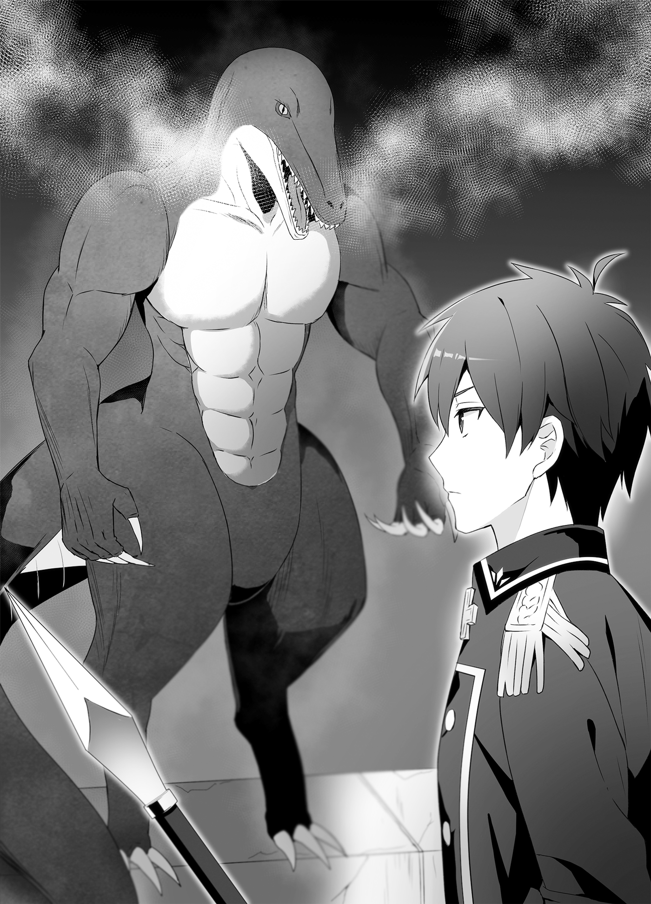
Halbert jumped up onto the edge of the wall, impaling one of the climbing lizardmen with his right-hand spear. Then, at the same time, he burned the impaled lizardman with flame magic before kicking it down into a group assembled in front of the wall. When it hit the ground...
Boom!
...the burning lizardman exploded. The nearby lizardmen were sent flying by the blast wave. Not only that, the flames kept spreading to the rest of the nearby lizardmen, and they all turned into writhing fireballs.
“““Gugyagyagyagyaggya...””” the lizardmen screamed.
“That’s that,” said Halbert. “I’m not letting them over this wall.”
With flames and smoke rising behind him, Halbert pulled the spear he’d thrown back to him with the thin chain that was connected to the base of both his spears’ shafts. He puffed his chest up in a way that made him look reliable.
Lauren had been struck dumb by the speed with which he acted, but a complaint came down from the sky.
“Don’t you say, ‘I’ve got this!’ Stupid Hal! What kind of knight jumps down alone and abandons his dragon, you dummy?!”
“Whuh?!” Lauren let out yet another cry of surprise.
Looking up in the direction the voice came from, there was a red dragon diving straight down from the sky at them. The dragon opened its mouth wide and spewed fire, cutting a straight line across the pack of lizardmen trying to scale the castle wall.
Bwoooooooooooosh!
A wall of flames rose up, scorching the lizardmen before their eyes. In the middle of that incredible scene, Halbert was bowing his head to the red dragon.
“Hey, Ruby, sorry! It looked bad down here, so I couldn’t help myself...”
“No, do help yourself! Don’t scare me like that, you dummy!”
The red dragon turned its head away, pouting like a young girl.
Lauren could no longer recognize the scene before her as reality. Her mouth hung open. “I-Is the Friedonian military this...ridiculous?”
“I wouldn’t want you thinking of our family as typical, you know,” a beastman girl with fox ears and a tail said as she jumped down from the deep red dragon’s back. The fox-eared girl walked over to Lauren and extended her right hand. “You must be the commander. It’s a pleasure to meet you, you know. I am Hal’s superior, as well as the operational commander of the Dratroopers, Kaede Foxia.”
“...Oh! I’m Captain Lauren!” Lauren hurriedly took Kaede’s hand. But even as they exchanged a firm handshake, Lauren eyed Kaede dubiously. “Um... Since you descended from a dragon, does that make you a dragon knight, Madam Kaede?”
“No. Ruby... That red dragon’s knight is Halbert, you see. Halbert and I are engaged, so she lets me ride her under the reasoning that the spouse of my spouse is kind of like my spouse too.”
“Huh...? You are Sir Halbert’s spouse and superior, and that red dragon is his spouse too?” Lauren was getting confused.
Kaede smiled wryly. “I can explain the details later, you know. There are more important things for now.” Kaede looked toward the castle as she spoke. “I’ve been ordered to have our 200 Dratroopers cooperate with the defenders from each of the walls to keep the monsters out, you see. The first order of business is to secure the walls.”
“I’m grateful for that, but...if you have 200 troops, then that’s fifty per wall, right?” Lauren asked. “No matter how elite all of you are, is that going to be enough to break through the current situation?”
Lauren was worried, but Kaede grinned at her. “It’s true, the number of troops we landed in the castle is 200 strong, but...you’re forgetting something important, you know.”
“Forgetting something important?”
Kaede raised her index finger and pointed straight up.
Lauren followed where she was pointing, and...finally, it dawned on her what Kaede was trying to say.
“That’s right... We still have a force that’s super strong against land-based troops up there, you know,” Kaede said with a grin.
◇ ◇ ◇
Meanwhile, around that time, there was an energetic voice on the southern wall.
“Ookyakya! The cavalry’s here! Time to let loose!”
“Young Master, why are you so eager?!”
It was Kuu and Leporina, the master and servant duo from the Republic of Turgis.
The two of them had descended along with the Dratroopers.
When Kuu, participating as a visiting general, had learned of the existence of the Dratroopers, he’d asked Souma to let him parachute in too.
Naturally, Souma had been hesitant at first. “I told you not to do anything dangerous, didn’t I?”
“Come on, Bro! If it makes a difference, I can make my own parachute!”
Kuu’s words had put Souma in a bind. The parachute was a matter of life and death during a drop, and even if an amateur could make one themselves, it wasn’t a thing they should try. However, if he refused, Kuu may make one himself and drop in anyway, so Souma had relented in the face of Kuu’s enthusiasm and begrudgingly given the okay...on the condition that, along with Leporina, experienced Dratroopers would also accompany them.
Like a skydiving instructor with a novice skydiver, the Dratroopers had fastened themselves to Kuu and Leporina as they dropped, and now they were joining up with the defenders on the southern wall.
In contrast to Kuu, hyped to experience his first drop, Leporina still seemed frightened, because her face was pale, and her bunny ears were down flat. “I think...this may be the most I’ve ever regretted being in your service.”
“Ookyaya! Then you’ve never been all that dissatisfied before, huh?”
“Yes, I have! I’m saying this is the worst!”
“Well too bad for you, huh? Now then.” Kuu jumped onto the edge of the wall, looking at the pack of lizardmen swarming toward it beneath him. The massive force pressing against the walls was an unusual sight for Kuu. “There sure are a lot of ’em. You’d never see this in Turgis.”
“H-Hey? Who’re you people?” one of the defenders hesitantly asked as Kuu was peering over the edge of the wall.
Kuu tapped his shoulder with his favorite cudgel, then smiled at the defender. “Didn’t I already say? Reinforcements. That’s what we are.”
“Reinforcements?! It was reinforcements that fell from the sky?! Wh-Where are you from?!”
Kuu grinned. “Where, you ask? The Republic of Turgis.”
“The Republic of Turgis? That country way to the south sent us reinforcements?”
“Yeah. Only two of us, though.”
“T-Two?!” The defender was blinking, no longer able to make heads or tails of the situation.
It was already hard to believe that the Republic of Turgis on the southern edge of the continent would send reinforcements to this little country in a corner of the Union of Eastern Nations, so when he was told they were just two people, the soldier must have felt like he was being tricked.
Satisfied by the soldier’s befuddled reaction, Kuu jumped down from the wall to slap him vigorously on the shoulder. “I’m kidding, man. We’re really here on behalf of the Kingdom of Friedonia. We just happen to be visiting generals from the Republic of Turgis.”
“S-Sure...”
“Well, now that we’re here, you’ve got nothing to worry about!” Kuu jumped onto the edge of the wall again, clubbing two lizardmen who had climbed up, knocking them back into the swarm below. “Hah... Hoh... Alley-oop!”
Bouncing along the bumps of the edge, whenever Kuu found a lizardman attacking someone, he whacked it with the cudgel Taru had specially made for him and sent the monster flying.
“Hey, guys! You ever hear this before?” Kuu shouted to the defenders from the edge of the wall. “They say a Turgish soldier’s worth a hundred men! That means me and Leporina are worth 200 reinforcements! Ookyakya!”
Seeing Kuu laugh heartily, all the soldiers felt a little more relaxed. This boy might be exaggerating, but from the rampage he’d just gone on, it might not be a total lie. When they looked at his baseless smile, it made them think, We can’t let him beat us. We can keep going.
The soldiers, who had been hanging their heads before, now raised their faces, their morale restored.
Then an especially big lizardman appeared behind Kuu. Unlike the others, the surface of its body was red too. The red lizardman swung the claws from both its hands at Kuu.
“Whoa!” Kuu caught the claw strike by holding his cudgel up horizontally. However...
“Kishaaa!” the lizardman hissed.
“Urgh...”
In the back of the lizardman’s open maw, Kuu could now see red flames.
Oh, crap. Some of them can breathe fire too?!
Kuu already doing his best to fend off its claws. If it breathed fire at him now, he wouldn’t be able to dodge. Kuu broke into a cold sweat. Then...it happened.
Whoosh!
“Gugyaah?!”
The arrow flew in and struck true, stabbing into the lizardman’s right eye.
The lizardman’s face aimed up and away, and the ball of fire it spit flew off in a completely different direction.
Kuu turned his neck to look, and Leporina was on the opposite edge of the wall with bow at the ready. She immediately nocked another arrow.
“I won’t let you kill Master Kuu!”
Leporina’s second arrow flew, this time piercing the left eye.
The red lizardman held its eyes and flailed around.
“Here’s a little something extra. Eat this too!”
While his enemy was faltering, Kuu spun his cudgel around and bashed its jaw from below. There was a snapping sound, and the red lizardman fell limply over the side of the wall.
“Whew...” Having escaped from a close shave, Kuu wiped the sweat from his brow. “Ook... You saved me there, Leporina.”
“Really, now. Worth a hundred reinforcements? I’ve never heard anything like that, you know?”
“Well, duh? I’m going to make sure everyone knows it from now on!” Kuu made a big show of spinning his cudgel around before tucking it at his side. “It may be an exaggerated boast, but we can make it real. If I crush a hundred of these things, it’ll start sounding believable!”
“Don’t say that like it’s easy!”
“We’re doing this, Leporina! Let’s show the northern lands just how strong Turgish warriors can be!”
No sooner had he said that than Kuu raced off in search of his next target. His promise to Souma that he wouldn’t do anything dangerous was long since forgotten.
“Ookyakya! Hey, soldiers of Lastania! It’s time to hold your ground! If you think you can’t win a fight, call for me! I’ve got this!” Kuu boasted as he beat down the lizardmen close to him.
It was as unclear as ever what basis he had to say any of this, but his energetic voice felt invigorating somehow.
“Yeah! Let’s do this thing!” the soldiers called.
“Heh! We can’t let our Turgish guest hog all the glory!”
“This is our country! We’ve gotta defend it ourselves!”
The soldiers’ morale rose even higher, and everyone on the walls got fired up.
Leporina, who could sense the heated atmosphere as she followed Kuu, smiled. This is it. This is the young master’s charisma.
He was a bit of an idiot and had a way of flying off the handle occasionally, but Kuu always led the way, taking risks himself, and roused those following behind him.
There were kings like Souma who were skilled at using people. There were empresses like Maria who drew the respect of their people. Even so, the one Leporina wanted to serve was Kuu, and Kuu alone.
Though...if he could refrain from being quite so reckless, he’d be even better...
While Leporina was thinking that, Kuu pushed her to hurry up. “Come on, Leporina! We’ve still got another ninety or so to take down!”
“When you said you’d defeat a hundred, you were serious about that?!” Leporina cried out incredulously, and then it happened.
From far in the sky above Kuu and Leporina, there was the sound of trumpets. Bwoon! Bwoon! They blared several times, as if warning them to be careful.
Hearing that sound, Kuu and Leporina’s faces grew tense.
“Oh, crap! It’s starting! Hey, you people! Get away from the walls for a bit!”
“Everyone!” Leporina called. “The wyvern knights will soon commence bombing! Things are expected to go flying, so move away from the outside of the walls, and get down!”
Indeed. The trumpets were a signal from the wyvern cavalry that they were going to start bombing.
“B-Bombing?!” a soldier yelled.
“Hey, hurry and get away from the walls!”
The defenders hurried away from the outside of the wall, getting down on the cobblestones.
Then the 200-wyvern cavalry that had been standing by in the air since dropping the Dratroopers suddenly swooped down and dropped their barrels on the packs of lizardmen around the castle walls. The barrels were packed full of explosives. The explosive barrels, which had their explosion time adjusted with fuses, exploded just before falling into the packs of lizardmen.
B-B-B-B-B-B-B-B-B-B-Boom!
The explosions went off continuously, occurring in all directions horizontally. The blast waves and vibrations even hit the soldiers who were ducking and covering on the wall.
When they finally raised their faces to look around, pillars of flame were rising outside the walls to the north, south, east, and west. The spreading fireballs cooked the lizardmen packs, and a strangely savory smell wafted through the air.
The wyvern cavalry who had dropped the explosive barrels dove again, scorching the remaining lizardman packs with their fire breath. Those flames set off the explosives that had been scattered around by barrels reaching the ground without going off, and they turned the outside of the walls into a sea of fire.
The lizardmen simply burned away, unable to do anything.
“Ook. Wyverns are sure amazing, huh...” Kuu said in admiration, peering out through a crack in the wall.
The currents in the air were violent, and the Republic of Turgis was too cold to begin with, so his country had no air force of its own, and no country had ever used one against them.
The first air raid he had witnessed was beyond anything he’d ever imagined.
There must have been 5,000 lizardmen, and in an instant, seventy to eighty percent of them had been incinerated.
The lizardmen who were fortunate enough to escape the flames were crawling, and he could see them scurry away into the nearby forest.
If similar scenes were unfolding at each of the other walls, there were maybe only 1,000 lizardmen left. They wouldn’t attack until their numbers were replenished, at the very least.
Kuu stood up and dusted himself off. “Ookyakya! At the end of the day, I only managed to get about ten of them, huh?”
“Then why don’t you give chase? Alone.” Leporina asked, exhausted.
Kuu just shrugged. “I’d love to, but I can’t see a thing through all the smoke. I’ll let ’em off for today.”
“...You will, will you?”
“Well, I’ve got more important stuff to do, anyway.” Kuu slammed his cudgel down on the cobblestones, then shouted to all the Lastanian soldiers who were dumbstruck from the aerial bombardment. “Okay, the attacks been knocked back! Let’s hear you shout! Victoryyyyy!”
“Victory.” Hearing that word, the soldiers of Lastania finally got the sense that they had won.
Thrusting their shaking hands toward the heavens, they shouted from the bottom of their lungs.
“““Yeahhhhhhhhhhhhhhhhhhhhhhhhhhhhhh!”””
The soldiers’ cheers echoed through the evening skies of Lastania.
◇ ◇ ◇
They heard explosions from the north, south, east, and west walls, and then black smoke rose in all four directions.
That was most likely the result of aerial bombardment by the same wyvern cavalry that had dropped the Dratroopers.
The lizardmen had no means of launching an anti-air attack and defending against aerial bombardment, so they were being unilaterally bombed to death. Even if it wasn’t enough to exterminate them completely, it could be expected to lower the pressure from Lizardmen pressing in on each wall.
Meanwhile, around the same time, the battle near the castle was reaching its conclusion.
Hearing the situation from Julius, I ordered Aisha and the few royal guards in the gondola Naden was carrying to work with Julius and Jirukoma to exterminate the lizardmen attacking the castle.
While it went without saying that Aisha was strong, the royal guards were confident in their skills too, and together they could make short work of the ten or so Lizardmen in the area around the building.
“Naden, there’s another one over there!” I called.
“Roger that! Unaaaa!”
Crackle!
Naden, still in her young girl form, let loose an electric shock, piercing a lizardman on the roof of the castle.
The lizardman who she struck went rigid, unable to utter a sound, and then collapsed to the ground, twitching. It was apparently still breathing.
“Why, you!” Aisha raised her greatsword to deal the finishing blow.
“Hold on, Aisha!” I held out my hand and stopped her. “Take that one alive.”
“Huh? We’re taking prisoners?”
“It may teach us something about the ecology of the monsters. I want to catch one, at least.”
“Understood. Phew... Take this!”
Aisha thrust her greatsword into the ground, then landed a hand chop on the back of the twitching lizardman’s neck. The lizardman’s back arched for a moment, and then it went limp and stopped moving. Its eyes were rolled back, and it was foaming at the mouth.
...I dunno, even if it was a monster, I felt bad seeing that happen to it.
I hesitantly asked Aisha a question as she dragged it over by the tail. “There was a nasty noise there. Are you sure you didn’t kill it?”
“I held back a little, so it should be fine...probably.”
“O-Okay then...”
Looking closer, the monster was out cold and didn’t seem to be dead, so I had a royal guard bind its mouth and body, then lock it inside a tower near the castle.
That was it for enemies outside the royal mansion.
Jirukoma came rushing over. “The royal family and refugees have been left behind inside the royal mansion. I want to rescue them, but there may still be lizardmen inside the building. I would like to request help from the royal guard.”
“Okay.” I nodded and gave the order. “Work with Jirukoma, search every nook and cranny to eliminate any lizardmen, and save the royal family and refugees! They may be hiding in the shadows, so exercise due caution!”
“““Yes, sir!”””
The royal guards saluted me, then went inside the castle with Jirukoma.
Only Aisha, Naden, Julius, and I were left behind. Time drifted by as everyone remained awkwardly silent. Julius was looking toward the castle, and Aisha was cautiously watching him. I guessed it was time for me to say something.
“I hear there were people left behind, but are they okay?”
“I decided that rather than try to move them out, it was safer to have them stay in one place until things settled down,” Julius said. “They were in a place deep inside, and the entrance was tightly sealed, so they should be all right.”
“I see.”
“Yeah...”
...Yeah, this was awkward.
Julius and I had met leading opposing armies on the field of war.
Julius had invaded the Elfrieden Kingdom together with his father Gaius VIII, who had lost his life during that war. He should be trying to take revenge against me, as his father’s killer, but I was also engaged to his younger sister Roroa, so things were complicated.
On top of that, he was the one asking for reinforcements, and I was the one providing them.
While we were both unable to find the words to say, Aisha eyed him warily. Her hands had not left the hilt of her greatsword, as if she were saying, “If you make even one wrong move, I’ll kill you.”
We were enveloped by an air of tension.
As the only one unacquainted with Julius, Naden sensed the uneasiness in the air, and her eyes darted busily back and forth between our faces. “Wh-What? Why’s everyone so tense?”
“Bro... Big Brother...” Roroa said hesitantly.
Turning toward her hesitant voice, I saw that Roroa and Tomoe, who had been told to stay in the gondola where it was safe until things were settled, were getting out. Behind Tomoe was her bodyguard Inugami.
Seeing his sister, Julius’s eyes narrowed. “Oh, it’s Roroa...”
She walked slowly over and stood beside me. She opened her mouth as if to say something, but she couldn’t quite find the words, and her mouth just bobbed open and shut. I couldn’t blame her.
My relationship with Julius was complicated, but hers was too.
They were brother and sister by blood, but they had also been political enemies. She had driven him out for the sake of the people of Amidonia, and then protected them by marrying me and bringing her country with her.
No doubt she felt guilty over driving her brother out.
Meanwhile, Julius had used his connection to Roroa to save the Kingdom of Lastania. In a life-or-death crisis, Julius had relied on the little sister who had been his enemy.
“Roroa,” he said at last.
“Ah!”
Julius walked forward to stand in front of Roroa. That naturally meant the petite Roroa would have to look up at him. Before the uncertain Roroa could look up, Julius quietly lowered his head.
“You did well to bring King Souma here. Thank you.”
Roroa’s eyes went wide. “Brother...I...”
“I no longer have my position as the crown prince of Amidonia. Now I’m just a guest seeking refuge in this country. You needn’t be polite with me. You speak in merchant slang with Colbert and the others, don’t you?”
Julius raised his head.
“...Oh, fine! I get it.” Roroa scratched her head, then crossed her arms as if she’d come to terms with it. Then, she faced Julius straight on. “So, uh...it’s been a while, huh? How’ve ya been?”
“Well, I’m healthy enough, as you can see. The people of this country have been treating me well, and thanks to your reinforcements, we were able to deflect today’s offensive. Let me thank you again for passing my request for aid on to King Souma.”
“H-Hmmph. You’d better be grateful.” Roroa looked away and pursed her lips. “I wasn’t expectin’ it to be like this when we met again.”
“Heh, I could say the same.”
“I’m not gonna apologize for havin’ ya run out of the country,” Roroa added aggressively. “That time... it was all I could do to protect the people of the principality.”
“I failed as a ruler, so I’m not in any place to complain,” Julius said. “If you acted in the interest of the people, be prouder of it. You needn’t feel guilty about it.”
“I-I’m not really feelin’ guilty about it!” Roroa said, flashing her teeth at Julius. “Nyahh!”
I dunno... Watching from the side, they looked like any brother and sister talking.
According to Roroa, they had only spoken the bare minimum that was necessary in Amidonia. She’d been playing innocent out of concern for how her father and brother would see her. Now that that was over and she was being open about her feelings, I was surprised just how much they looked like a normal brother and sister.
Julius shook his head in exasperation. “You’re childish as ever, I see. It’s been a year since you went to be with King Souma, hasn’t it? Shouldn’t you have conceived a child by now?”
“Wha?!” Roroa panicked. “What’re you sayin’?! Me and Darlin’, we haven’t...uh...”
“Don’t tell me you haven’t even laid a hand on her yet?” Julius said in exasperation, having apparently picked up on what Roroa meant.
Roroa turned so red that I thought her face might start shooting flames. It seemed she wasn’t good at having the matter addressed directly. It wasn’t a reaction I saw from her often, so I thought it was a little cute.
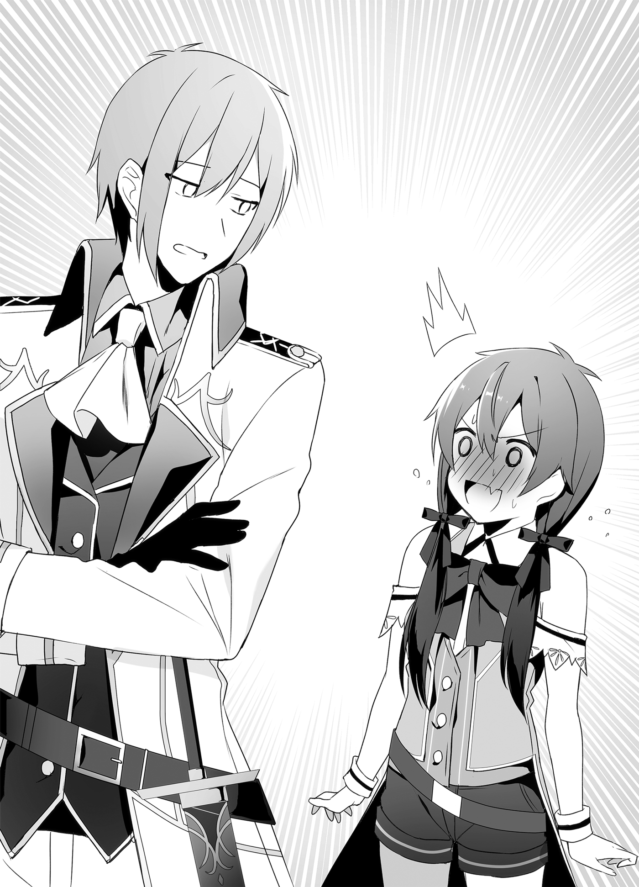
While she was in that state, Julius kept talking. “Roroa. You are the head of the Princely House of Amidonia now. If you birth a child, the bloodline of the Princely House of Amidonia will be protected. You have a duty to produce heirs who will tell the stories of the Royal House of Amidonia’s military accomplishments. I implore you to make King Souma fall in love with you as soon as possible.”
“Oh, geez! Lay off! Now I know how Big Sis Cia felt!” Roroa quickly hid behind me. Then she stuck out her face to hiss and give Julius a menacing look.
Since when did she come from a cat beastman race...?
Now that Roroa had hidden, I faced Julius again. “I’ve come in response to your request for aid. It will still be some time before the main force arrives, but I’ve brought 200 Dratroopers as an advance party.”
“I am deeply grateful for your assistance.” Julius knelt and bowed his head.
The man I’d once competed with during the negotiations with Madam Jeanne was now bowing down to me... It was a strange feeling.
“This feels weird. Please, just stand up and talk normally. Or else...”
“Or else?”
“I’ll call you ‘Big Brother.’”
“...I’ll ask you to spare me that, if nothing else.” Julius stood up and looked me straight in the face.
There wasn’t the grimness that had once been there, and he looked relaxed, as if something that had been possessing him had moved on.
Then Julius moved the discussion along. “I know it’s odd for me to say this as the one making the request, but why did you respond to my call for aid? We fought each other before. You could have ignored me, couldn’t you?”
“I didn’t want to put Roroa through any more pain than she’s already been through.”
“How soft...is what the old me would have said, but now...I think I can understand. Is Roroa that big of a deal to you?”
“Roroa’s family now,” I said. “I’ll protect my family, come whatever may.”
“Family...huh.”
Julius and I eyed one another. Like we were each probing the other’s intentions.
I could hear Aisha and Naden talking behind me.
“Madam Naden, you and I are His Majesty’s family too, right?”
“You bet we are. And when we include everyone’s little sister Tomoe, we’re a family of seven.”
“Then, do you suppose that makes Sir Julius my brother-in-law?”
“No, I don’t think it works that way.”
I wanted to say, Um... Could you two take the relaxed conversation elsewhere...? But, no, it was reassuring to have the two powerful ones close by. That way, I didn’t have to be afraid of Julius.
Julius pulled his sheathed saber from his belt and offered it to me.
I narrowed my eyes and asked him, “What’s this supposed to mean?”
“When I sent the request, I said I was willing to offer you my head. If you want it, let me do as I promised.”
“...You were serious?”
“Of course. If you strike me down, that will be one less worry regarding your rule over Amidonia. In exchange, I’d like you to look after this kingdom to the end.”
There was no indecision in Julius’s eyes. He’d already made up his mind, it seemed.
I slowly took the saber, and Julius bent down and extended his neck so it would be easier to cut.
“Darli—”
Roroa was about to say something, but then forced herself to stay silent. Thinking she shouldn’t say anything, she swallowed the words.
Now, what to do...
“Lord Julius!”
A young girl coming out of the castle with Jirukoma raced over, putting herself between Julius and me. She hugged Julius, who was still hanging his head.
The young girl looked up at me, her eyes filled with a strength of emotion that belied her charming appearance.
“I see you are King Souma Kazuya of the Kingdom of Friedonia. I am the princess of this country, Tia Lastania.”
“Oh, right... I’m Souma Kazuya.” I was thrown by the girl’s intensity and responded in the way I normally would. So, this was this country’s princess, huh?
Princess Tia made a desperate appeal to me. “We are very happy, and grateful, to receive reinforcements from the Kingdom of Friedonia. However, though I hesitate to say this as the one receiving assistance... I must ask you, please, be magnanimous and forgive Lord Julius!”
“Princess Tia! This is dangerous! Please stand down!” Julius barked.
“I will not let go! I don’t want to see you killed!”
Though Julius tried to tear her off him, Princess Tia held on tight and wouldn’t let go. She was putting her life on the line to save Julius.
“I’ve heard the situation from Lord Julius! I know that Lord Julius risked his head to make this request for aid! But he did that for us, the Kingdom of Lastania! I do not know what kind of man Lord Julius was during his time in the Principality of Amidonia. However, in his time here, Julius has led a force of volunteer soldiers, striking down the monsters that attack, and serving this country. He is irreplaceable to this country! And also to me!”
Seeing Tia speak quickly and try to persuade us...
Oh, that makes sense...
Roroa and I got it. The reason Julius seemed to have grown as a person was likely thanks to this princess here. I could read between the lines and see her love for Julius. Her feelings for him, and his for her, had made Julius who he was now.
Though, hold on, I never meant to cut Julius down in the first place.
It wasn’t like taking his head at this point would change anything, and, more than anything, I didn’t want to make Roroa sad. Besides, it felt like Julius had offered me the sword knowing I’d think that way. It was probably a symbolic formality, like we were cutting off our past relationship.
But Princess Tia, who didn’t know that, was desperately trying to protect Julius.
Now, how am I going to get this situation under control? I wondered. Then, suddenly, it came to me.
“...Very well. If you will accept a certain condition, I will refrain from bringing retribution on Julius.”
“If it is something I can do, then anything!”
“Princess Tia!” Julius hastily tried to make her take it back, but Princess Tia stubbornly refused to listen.
“Now then, what might your condition be?” she asked.
“I wish for you to take the name of Amidonia from Julius by your own hands.”
“Take his name away? Um, do you suppose that is something which I can do?”
“Yes, and if it’s you, it can be done quite easily, I think.”
“It can?” Tia was nonplussed.
Meanwhile, Julius, who understood what I was saying, immediately took on an angry look and glared at me. Oh! There was still some semblance of his old face there.
Then, having apparently figured it out, Tia clapped her hands. “Oh, I see. I just need to have Sir Julius marry into my family. If he does that, he’ll be Julius Lastania, not Julius Amidonia.”
“Princess Tia, this is the sort of thing you need to think through carefully...” Julius said hurriedly.
But Tia agreed with a smile and a nod. “I will accept your condition. I know my mother and father will accept Sir Julius.”
“...Urkh.”
“Wahahah!” Jirukoma laughed. “Looks like it’s time for you to pay the piper, huh, Julius. Congratulations. Well, from the looks of you two, it was just a matter of time anyway.”
Chapter 6: The Reality Here and Now
“It’s like a vision of hell...” I muttered, looking out over the scene beneath us.
It was the witching hour, and Julius and I were standing together atop the walls of Lasta.
In case anything happened, Aisha was standing a little behind us. That wasn’t a precaution against Julius, but against the creatures below.
The chimera-like creatures were swarming beneath us now, feasting on the roasted remains of the lizardmen killed by our aerial bombardment. These abominations would happily feed on man and lizard alike.
There were scattered cries as the monsters fought over food.
Watching, or even just listening to all of this couldn’t be good for my mental well-being.
“With all these lizardmen surrounding them, I’m impressed this tiny country has held out so long,” I said uneasily. “It wouldn’t have been unexpected for them to swallow you up in no time.”
“Perhaps so, but we couldn’t give up on living,” Julius said. “We’re here because everyone’s fought hard to survive.”
It was surprising to hear Julius say that. It seemed he really had changed. The Julius I’d known before wouldn’t have cared this much for the soldiers doing the fighting. His days of wandering and his time with Princess Tia really had left him a changed man.
“By the way...” Julius began, “what happened to the wyvern cavalry?”
“I sent them back to the main force,” I said. “Since they’d used up the explosive barrels they brought. Besides, you don’t have the reserves to garrison them here indefinitely.”
“...Indeed.”
Wyverns would eat the equivalent of one cow per meal. However, once they fed, they didn’t need to feed again for close to a week, so their overall cost wasn’t too bad. Even so, it would be a heavy burden on a country which was under siege, so I couldn’t garrison them here.
Incidentally, if Naden or Ruby used their fire breath or electric shocks in dragon form, that used a considerable amount of energy, and they would eat ravenously for a while after to replenish it. Because of that, I hadn’t been able to let them go wild in dragon forms yet, either.
“I have, at least, asked the wyvern cavalry to bring in supplies you’re running short of here, but...it’s about half a day’s trip, so the earliest they will arrive is tomorrow night,” I said. “We’ll have to fight with just this country’s soldiers and the Dratroopers for a little while longer.”
“In that case...it will be important to decide how command of the two countries’ troops is handled.” Julius looked at me. “Are you sure about this? Letting me command Friedonia’s forces?”
“Well, in this situation, there isn’t much alternative.”
After speaking to my staff officer, Kaede, we’d decided that, for the limited time it took the main force to meet up with us, Julius would be entrusted with command of the Dratroopers.
This was a measure we were taking to avert any conflicts in the command structures of the Friedonian and Lastanian armed forces.
“You’re the most experienced commander here after all,” I said. “I may be high-ranked, but I’m more of a bureaucratic type, and the Dratroopers are fierce fighters, but they’re all a bunch of muscle heads. Kaede is the best commander we have on hand, but though she’s talented at planning operations, she’s not suited to taking command in the middle of a battlefield. In short, you’re the only real general here, Julius.”
“I understand that, but...I’m asking if you or your men can trust me. If they ignore my orders because they can’t, that’s a problem. I could use the Dratroopers like they’re expendable. Aren’t you concerned about that?”
I smiled wryly at his almost paranoid question, and said, “You have nothing to gain from doing that in the current situation. Besides, if you pull anything funny, you’ll make enemies of the nearly 60,000 soldiers coming this way.”
“I suppose you have a point.”
I leaned on the edge of the wall and looked up to the evening autumn sky. “I never thought a day would come when we’d be fighting together.”
“I could say the same. I never expected to see the day I was saved by my bitter enemy.” Julius crossed his arms and leaned against the wall too.
We had once been enemies, but now were allies. The world was an unpredictable place. There was a quiet moment as I mulled over that thought.
After some time, Julius hesitantly opened his mouth. “I want you to tell me. My father, Gaius VIII...what was his end like?”
I paused. “What do you mean, what was it like?”
“From what the soldiers told me, after we parted ways, he said he would ‘show the spirit of Amidonia.’ Was Father able to achieve his goal?”
I was silent.
His tone wasn’t accusatory. Julius purely wanted to know what the end of Gaius VIII, sovereign prince of Amidonia, had been like.
“It was frightening,” I admitted. “When Gaius came for my head, he was truly terrifying. To be honest, the man’s blade was only a step or two from reaching me.”
Even now, I sometimes saw that day’s events in my dreams. In my dreams, the result was different, and the sword he threw with the last of his strength pierced straight through my chest.
That showed just how traumatizing that day had been for me. I would never forget Gaius’s face, twisted like a demon’s and full of murderous intent, not for the rest of my life.
Julius chuckled. “True, that father of mine’s glare was enough to make anyone fear for their life.”
“I can’t laugh about it. I seriously accepted my death and was considering what words I’d leave to my fiancée.”
“I see... It seems Father was able to show his spirit then.” Julius smiled a little sadly, and then slapped his cheeks as if to help himself shift gears. “My father was able to live out the rest of his life as a warrior. It’s not my place to say anything about that now. Like my father, I will endeavor to live in the way I truly desire to.”
“What way of life would that be?” I asked.
“I will live protecting the ones I love with every fiber of my being. So, Souma, to protect Princess Tia and this country, let me lend you my strength.” With that, Julius bowed his head to me.
He’d...really changed, huh.
I slapped Julius on the shoulder, then started walking. “Let’s go, Julius. I’ll be needing you to run the war council.”
“Okay. You’ve got it.”
And so, we headed to the castle where everyone was waiting.
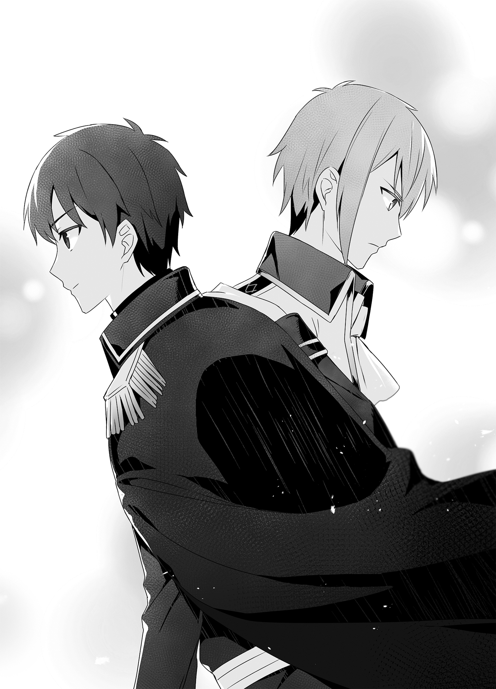
◇ ◇ ◇
Meanwhile, around that same time...
In front of one of the lookout towers near the castle there were two figures, one big and one small. They were Souma’s little sister Tomoe and her bodyguard Inugami.
In the darkening scene, only the watch fire that was lit near the entrance to the tower burned brightly.
In that unusual atmosphere, Inugami looked at Tomoe with concern.
“Will you really go?” Inugami asked.
Tomoe nodded. “Big Brother said, ‘I want you to test if it’s possible to converse with the monster inside here.’ He wanted me to learn as much as I can too.”
Tomoe was going to use her ability on the monster inside...which was to say she would be interrogating the lizardman caught in the earlier battle. If they could learn the lizardmen’s ecology, it would be possible to use that in planning future operations. However, this was a creature that had tried to feast on people’s flesh. Being able to understand what it said might lead to psychological trauma for Tomoe.
Souma was extremely worried about that too, but giving in to Tomoe’s enthusiasm to help, he’d reluctantly asked her to gather information.
A concerned Inugami urged Tomoe to be as cautious as the situation warranted. “His Majesty also ordered, ‘Make sure you don’t do more than you can handle.’ If I judge this is having a bad effect on your feelings, Little Sister, I will drag you away from here by force if necessary.”
“Okay. Please do, Mr. Inugami.”
Tomoe held Inugami’s hand tight. Because she was a mystic wolf and Inugami was a gray wolf, they looked like nothing if not father and daughter when they held hands.
They opened the door to the tower, hands still held, and went inside. Then, descending the spiral staircase, they stood in front of a cell.
There, inside, a single lizardman was bound hand and foot.
“Kshaaa!” It opened its toothy maw wide and rattled its chains.
“Eep...” Tomoe gulped.
“Little Sister?! Curse you!” Inugami moved up to put himself between Tomoe, who had tripped and fallen on her side, and the lizardman.
Tomoe shook her head as if to chase the bad feelings away. “I-I’m fine.”
Tomoe wiped her cold sweat away, clinging to Inugami’s arm as she stood up, and then holding it tightly as she faced the lizardman once more.
“This lizardman has nothing but hunger,” she said at last. “It only sees us as food. ‘I want to eat.’ That’s all it says. We can’t talk with them.”
“So, the basis of their actions is exactly as it appears?”
“Yes. But... Hmm?”
Tomoe tilted her head to the side. Was there something bothering her, maybe?
“Is something the matter?” Inugami asked.
“I wonder why...” Tomoe said finally. “Mr. Lizardman here, he seems weird.”
“Weird?” Inugami asked.
Tomoe nodded. “I don’t know what to think, but...I feel like it’s missing something any living creature should have. Something very important...”
“???”
What Tomoe was saying didn’t make any sense to Inugami.
Tomoe couldn’t put it into words very well herself, so that was only natural. Though it frustrated Tomoe, she eventually gave up, shaking her head.
“It’s no good. I don’t know how to say it. Anyway, I’ll tell Big Brother and everyone what I found out here.”
Tomoe and Inugami left the tower, leaving the lizardman behind.
The feeling of wrongness that Tomoe had gotten from the lizardman...it would still be some time before they learned the true nature of what that was.
It was now late in the evening. In a candlelit room in Lasta’s castle, the important figures of the Kingdom of Friedonia and the Kingdom of Lastania had gathered.
In attendance on the Friedonian side were Aisha, Roroa, Naden, Halbert, Kaede, Ruby, and me. On the Lastanian side were Julius, who had been entrusted with full command of their forces by the king of Lastania, the soldier captain Lauren, and Jirukoma, who was the leader of the volunteer soldier force. Princess Tia was also present, wanting to watch over the proceedings as a member of the royal family.
Aisha, who wasn’t that great at using her head to begin with, was there solely as my bodyguard, and Roroa and Princess Tia, who were not specialists in military matters, were just sitting there at the very end of the table.
Also, since he’d been noisy, saying, “We wanna be at the war council too!” Kuu and Leporina, the master-servant pair from the Republic of Turgis, were being allowed to take part as long as they promised to stay at the end of the table and behave.
“Now then, I would like to begin the war council,” Julius said.
Having been entrusted with the command of both armies, he was also being trusted with running the war council.
Julius looked around at the officers present. “First, to begin with...on this occasion, I have been entrusted with command of the Lastanian military by the King of Lastania. Command of the Dratroopers, who have come to reinforce us, has also been given to me by Sir Souma. Is there anyone who objects to this? I want to direct this question especially to those of you from the Kingdom of Friedonia.”
“I guess now’s the time. I don’t like lying, so I’ll be blunt.” Hal scratched his head and spoke up. “I feel uneasy with it. I don’t know I can fight under the command of a former enemy.”
“Hal,” Ruby objected, “you don’t have to say it like that...”
Hal held up a hand to stop her. Kaede put a hand on Ruby’s shoulder too, silently shaking her head.
When Ruby was quiet, Hal continued.
“There may still only be 200 of us, but I’m the captain of the Dratroopers. I don’t have what it takes to lead thousands of troops yet. I know you’re the most capable leader of troops here, and I’m sure that’s why Souma left command of the Dratroopers to you.”
Julius was silent.
“But even if it’s only 200 men, their lives are my responsibility,” Hal went on. “I can’t leave their lives in the hands of some guy who isn’t fully committed.”
Julius listened to his words in silence.
“We were enemies to you too,” Hal went on. “Can you command us properly?”
Julius closed his eyes for a moment, then began to speak slowly.
“I think it’s inevitable that we both have our misgivings. I can’t claim there is no resentment in my heart. However, this country is everything to me now. If it is to protect this country, I would work with any kind of partner, and bow my head to anyone. If it will allow me to gain your trust, Sir Halbert, that includes you as well.”
Hal was silent.
“Ookyakya, you’re more passionate about this than you loo—Ow, that hurt!” Kuu’s teasing was interrupted by an elbow from Leporina, leaving him in pain.
He’s being noisy, I thought. Maybe I should throw him out after all.
While I was thinking that, the grim look on Hal’s face softened.
“Is that right? If you’re that committed, I have nothing more to say. Our boss decided to leave it to you, so we’ll just follow his decision. Right?”
Hal looked to me, so I nodded.
“I’ve assigned Kaede to Julius as a staff officer,” I said. “If they’ve put together a plan, it may be crazy, but it won’t be reckless. I think we can trust in that.”
“Thank you,” Julius said. “Now, let’s commence the war council.”
He unfurled the map of the Kingdom of Lastania and surrounding areas that was on the table. Then he began by pointing to Lasta, where we were.
“First, let us review the situation. To address the forces of Lastania first, there were deaths and injuries in the fighting again today. I would say that, including conscripts from the general populace, we have about 2,800 people who can fight. With the 200 Dratroopers from Friedonia bringing the total to roughly 3,000, that is our total troop count.”
3,000, huh... Considering they were largely conscripts, it wasn’t a very reassuring number.
Next, Julius indicated the forests near Lasta. The lizardmen that had escaped from our bombing were lurking there now.
“Next, the lizardmen. They must have taken a major blow from today’s bombing. Their numbers must have fallen to eight, maybe 900. However, considering the situation up until this point, those numbers will be replenished each day. It happens at a pace of roughly several hundred per day.”
“Hm? Are the enemy are deploying their forces in small groups?” I asked.
I thought it was a poor strategy, but... oh, right, Lizardmen weren’t intelligent enough to think strategically. There was a “man” in their name, yes, but only because they had some human-like parts.
“Does that mean there’s a reason they only come a little at a time?” I asked.
Julius nodded, pointing to a large river north of Lasta.
“The border between the Union of Eastern Nations and the Demon Lord’s Domain is this large river known as the Dabicon. This river, which is wide enough that the far shore is blurry, and at its deepest point it is deep enough for a rhinosaurus to float, has protected us from monsters coming out of the Demon Lord’s Domain. However, being a natural river, the depth varies, and it can be crossed easily at some points. North of Lasta there is a narrow section that is shallow, and the lizardmen must be crossing there.”
“I see,” I mused. “The shallow section is narrow, so they can only cross a little at a time, huh... Wait, hold on! Then if the Dabicon is dammed upstream, that means there’s a ridiculous number of lizardmen on the other side?”
When I asked that, Julius nodded gravely. “Most likely...in the tens of thousands.”
“Tens of thousands, huh...”
The Empire had told me this was one of the places where the demon wave was especially intense, so that might have been a given. If not for the Dabicon River, this country would have been trampled in no time. Well, I supposed that would be why the Dabicon was the border.
“That’ll have to wait until Ludwin gets here with the main force, I guess,” I said.
“Yeah.” Julius nodded. “I think we have no choice but to ask the reinforcements from the Kingdom of Friedonia to handle it. However, before the main body of the reinforcements arrives, there is something I would like to do using the troops here.”
With that said, Julius brought his fist down on a certain spot on the map. It was the forest where the lizardmen who’d escaped from the bombing were hiding.
“I discussed this with young Miss Kaede as well, but I am thinking I want to exterminate the lizardmen lurking in the forest using the 3,000 troops we have here. Now, while their numbers are decreased, is our best opportunity to do so.”
“Whoa, wait, what?” Hal exclaimed. “We have limited manpower, and you want to head out? Their numbers are down, and that’s taken the pressure off, so can’t we just hole up in the city walls until reinforcements arrive?”
“Hal, that will give the enemy time to recover their numbers, you know,” Kaede said. “Like Sir Julius said, the number of lizardmen grows by the day. Their numbers are massively lower now, so the lizardmen are waiting to see what happens, but if their numbers recover, they’ll attack again. In a conflict, what is important is how you increase the number of troops you can deploy into a single battle, while in turn decreasing the number of enemy troops. For example, if you compare fighting 3,000 enemy troops with 5,000 soldiers to fighting 1,000 enemy troops with 5,000 soldiers three times, the latter will cause less damage to your own forces.”
Oh! I’d heard that before. That was why it was better not to deploy your forces in small groups, but to deploy them in as large a group as possible. Or so the established knowledge went.
“Compared to a siege battle fought against a reassembled group of lizardmen, exterminating them in a field battle while their numbers are lower will lower the number of casualties on our side,” Kaede said.
“In addition, if we can eliminate the lizardman presence here, we can restore the supply lines to Lasta,” Julius continued for her, pointing at a spot close to the Dabicon. “There is a fortress near here. There was no way to defend it with the regular forces alone, so it was abandoned early in this demon wave, but if we can exterminate the lizardmen here, advance north while crushing their reinforcements, and get soldiers into this fortress, we should be able to hold off the lizardmen that cross the river here. If we can do that, Lasta will be freed from being besieged by monsters. That will restore supply lines, so more reinforcements...likely won’t be coming, but material aid should flow in.”
If this country fell, the next country to the south would be in danger after all. Perhaps they would think to send material aid, in order to help us hold out a bit longer?
There might be merchants who would think now was a good time to make money too. Medicine to treat the wounded soldiers might arrive.
That all sounded good, but... there was just one thing about it that concerned me.
“If you only intend to deal with lizardmen, that’s fine, but there are countless warped monsters camped outside the city walls now, aren’t there?”
While looking out from the city walls with Julius, we had seen the chimera-like monsters with bodies assembled from various parts. There were still thousands of those things that were greedily feasting on the corpses of soldiers and lizardmen that fell outside the wall.
“If you head outside the walls, won’t they attack you?” I asked.
“That is a concern.” Julius pressed a hand against his forehead in displeasure. “Those monsters are nothing special, taken alone. They can be slain easily at a distance with bows or magic. However, when they form such a large swarm, they become a problem. If we fight the lizardmen and the monsters attack when we’re injured, we can’t handle that.”
“I see. So we’ll have to fight those monsters at the end,” Aisha said, crossing her arms.
“If you’d let me go wild in my ryuu form, I could scatter those things easily,” Naden fumed.
I knew that, but in a situation where we had a limited number of calories available, I couldn’t let Naden and Ruby fight at full power.
Julius let out a small sigh. “It’s a minor blessing that the lizardmen and monsters don’t work together. For the monsters, they see both us and the lizardmen as no more than potential food if we die.”
“They’re scavengers, like jackals or vultures then...” I muttered. “It’d be a lot easier if they’d just attack and eat the lizardmen for us too.”
“The monsters are weaker than the lizardmen. That must be why they only scavenge corpses,” Julius explained in exasperation.
No, I was just saying that, so you didn’t need to respond so seriously... Wait. Huh? I paused. The monsters don’t attack the lizardmen because they’re weaker than them, but then... Huh? Why don’t the lizardmen attack the monsters?
Before this war council, I’d received a report on the captured lizardman from Tomoe. According to Tomoe, she had felt nothing but hunger from the lizardman. It had only seen Tomoe as prey.
So if they were starving that badly, why didn’t the lizardmen try to eat the monsters?
I discussed that question with everyone.
“The reason that the lizardmen don’t eat monsters?” Julius pondered. “I’ve never considered it.”
“It certainly is strange, yes,” Kaede agreed. “Those lizardmen have decided we’re edible. However, it feels strange that they’ve excluded the monsters that they aren’t cooperating with from the list of potential food sources.”
Julius and Kaede both seemed to think deeply about it.
“Maybe they can’t eat ’em? Like they’re poisonous or something?” Hal suggested, but I said shook my head.
“Nah. I’ve heard this from Madam Jeanne, but some monsters are apparently edible. If I recall, she ate a winged snake...or something like that?”
“For her pretty face, she does some awfully wild things...” Julius said in exasperation. He was also acquainted with Jeanne.
Yeah, I kind of agreed.
“Still...in that case, it makes even less sense,” Julius said. “Why, when the lizardmen are starving so badly, do they not attack and eat the monsters that are weaker than them?”
While everyone was wracking their brains over this, hesitantly, one person raised their hand.
“Um, a word if I may?”
It was Aisha.
Aisha was the greatest warrior in our country, but she wasn’t especially good at using her head. Though she was participating in this war council, it was mainly as my bodyguard, so she had been keeping quiet and refraining from commenting as we deliberated. Now, it looked like there was something she wanted to say.
“What is it, Aisha?” I asked.
Aisha hesitantly said, “Um... I thought this while listening to you talk, but could the reason the lizardmen don’t eat monsters be...um...that they just don’t taste very good? I mean, a lot of meats smell too strongly to eat them raw.”
W-Was she joining this topic because it was about food? This was more about the monsters than the food aspect, though...
“No, but Madam Jeanne has actually eaten them... Wait, huh?” I got that far, then I caught on to something Aisha had said.
“I mean, a lot of meats smell too strongly to eat them raw.”
...Raw meat? That was it. Even if Jeanne had eaten monster meat, she couldn’t have been eating it raw. The more unknown the meat, the more thoroughly she’d want to cook it.
Mankind cooked, while lizardmen likely ate their food raw.
The key was...the presence of a way to prepare food using heat.
I came to a conclusion.
“The lizardmen don’t know how to eat monsters,” I said so that everyone could hear.
Julius furrowed his brow. “How to eat monsters?”
“There are parasites and bacteria in meat...but if I say it that way, you won’t get what I’m talking about, I guess. Those are like little bugs inside your body, and if you eat meat with them on it, you’ll get sick, and might even die. But thoroughly cooking meat will kill them, and it really brings down the likelihood of food poisoning. It’s a way of preparing food by sterilizing it with heat.”
“I’m sorry, but I have no idea what you’re talking about,” Julius said, looking dubious.
Everyone else nodded too.
Though I had been pushing a medical revolution with doctors like Hilde and Brad at the forefront, knowledge of medicine and biology wasn’t widespread, so this was to be expected. Even if it wasn’t possible yet, if the academic learning became more widespread, and I could plant the knowledge with broadcast programs... Wait, now wasn’t the time to think about the future! I needed to get the people with me now to understand first.
“Even if you don’t understand the words I’m using, you should all know this from experience,” I said. “If meat is getting old, you cook it thoroughly, right? Why is that?”
“Ookyakya!” Kuu interjected. “That’s ’cause if you eat meat raw, you’ll get sick sometimes.”
I nodded. “Right. Even without explaining the details of how it happens, mankind knows through experience that eating meat raw can get us sick, and if we cook it thoroughly, we can greatly reduce the risk of that. Even if we haven’t experienced it ourselves, the experience is passed from parent to child, and it’s just like we’d experienced it ourselves.”
“That experience is passed down, and it becomes knowledge, or common sense... Is that it?” Julius nodded, seeming satisfied.
He really was fast on the uptake. Every bit as clever as he appeared, Julius really was a sharp one.
I nodded and continued to talk. “I doubt the lizardmen have that knowledge. I mean, from everything I’ve heard, the lizardmen are eating raw meat, aren’t they? If they ate those weird monsters raw, it wouldn’t be weird for them to get sick, now would it?”
“I certainly wouldn’t want to eat them raw,” Aisha said, making a disgusted face.
It looked like even Aisha, the dark god of gluttony, felt that way.
“When Madam Jeanne and her people ate monster meat, I’m sure they must have cooked it carefully,” I said. “In other words, perhaps a lizardman ate the meat of a monster and got sick, and that’s why the lizardmen no longer eat monster meat?”
“I see. So that’s the difference between Madam Jeanne and a lizardman,” said Kaede, listening with a pensive look on her face. “In that case, if we teach the lizardmen to prepare food using heat, the hungry lizardmen may hunt the monsters, you know.”
“I get what you want to say, sure, but how, precisely, do you want to teach them?” Hal asked. “It’s not just that we can’t talk to them; we can’t communicate at all, can we?”
He rested his face on the palms of his hands.
That was the problem, yeah...
“It’s going depend on how much intelligence they have...” I muttered.
From what Tomoe had told me, they thought only of devouring others, and communication was impossible. But then again, when Tomoe used her ability with low intelligence animals like rhinosauruses...
Tomoe: “Cargo, carry, okay?”
Rhinosaurus: “Tasty grass, cute female, okay.”
That was the sort of simple communication it ended up as.
If these creatures refused even that level of communication, it was going to be impossible to teach them anything. For them to be taught, they needed the capacity to learn.
I was starting to think this plan to have the lizardmen hunt the monsters for us had run aground.
“No, I don’t think they’re unthinking,” Julius said at last. “That’s the feeling I’ve gotten from fighting them. It’s true that they ignore gates and can’t use proper siege tactics, but they have enough intelligence that they do choose places our defenses are weak, and if they sense they’re at a disadvantage, they retreat.”
“That’s right...” Jirukoma pondered. “They avoid contact with strong enemies and prioritize attacking the weak.”
“There’s a certain cunning to the way they act,” Lauren agreed. “That’s the feeling I’ve gotten.”
Jirukoma and Lauren had both fought alongside Julius, so they knew what they were talking about.
“How intelligent are they?” I asked. “Do you think they could manage to steal things in the night?”
“I wouldn’t compare them to the races of mankind, but at the same time, they’re better able to assess risk then a common beast,” Julius said. “The closest would be the shoujou, perhaps, but they could be smarter.”
“The shoujou... Monkeys, huh.”
They were smarter than monkeys. In that case, we might be able to teach them something simple.
But considering I had a report from Tomoe saying dialogue was impossible, we wouldn’t be able to teach them directly.
Hold on! What if we taught them indirectly?
Even if we didn’t teach them properly, if we relied on some “monkey see, monkey do,” maybe we could get them to act in the same way, as if we’d taught them.
Come to think of it, I’d heard of a precedent in the world I came from. If I was recalling correctly...
“Monkeys washing potatoes...”
“What’s that?” Julius asked.
“It’s a story about monkeys from my old world. When one monkey started washing sweet-potatoes in sea water, the rest of the young males in its troop started to do the same.”
Witnessing this phenomenon had led to a discussion of whether culture existed in the animal kingdom.
Well, there had also been talk of how, “When the hundredth monkey on the island learned to wash sweet-potatoes, monkeys on a distant mountain began to show the same behavior (indicating the possibility of telepathy),” but that was occult mumbo-jumbo. The thing I wanted to focus on here wasn’t the occult, it was the learning ability of monkeys. If lizardmen also had the ability to learn...
“If we have one lizardman learn the taste of cooked monster, show it the cooking process, return it to the pack, and then it starts cooking and eating monsters...” I said slowly.
“You mean to say that the lizardmen in the pack that see it may begin imitating that behavior?” Julius said slowly. “I seem to recall you’ve caught just what you would need for that, haven’t you?”
“Yeah. We took one alive and locked it in the tower.”
Julius looked me in the eye and asked, “Do you think it can be done?”
“I don’t know, but it’s probably worth a try. Even in the worst-case scenario, we’ll only increase the number of enemy lizardmen by one. If we work at it, it shouldn’t take more than half a day.”
“Hm... Even if it fails, we’ll still only be facing the lizardmen and monsters with our current forces. If they force an attack, that will cause more casualties, and I would prefer to avoid that, so...in order to prevent that, I’d very much like for you to make this idea a success.”
“I know,” I said. “Let’s decide how we’ll do it. First we have to procure the monster we’ll be feeding to the lizardman...”
From there, Julius, Kaede and I put together a plan.
While going back and forth on what to do, gradually the plan that had started as a random thought began to be fleshed out and sound more realistic.
I didn’t think I had felt this way since working out plans against the Principality of Amidonia with Hakuya. Funny that the guy I was working with now was one of the enemies I’d been plotting against back then.
That’s part of what makes him so reliable.
Looking at Julius’s serious face, that was what I thought.
◇ ◇ ◇
“It’s kind of a strange feelin’,” Roroa said quietly to herself, watching Souma and Julius work on the plan.
“What is?” Princess Tia asked, tilting her head to the side. She was also sitting there watching the war council unfold.
Perhaps because she was embarrassed to be asked about something she’d been saying to herself, Roroa awkwardly scratched her cheek and smiled wryly. “Mmm, the sight of Darlin’ and my big brother together, workin’ on a plan, I suppose. It just feels so unreal that I’m kinda confused. They’re bitter enemies, and’ve fought to kill each other before, but now they’re workin’ together toward a common goal, ya know?”
Tia was silent.
“It’s like I’m dreamin’... Hey, that hurts!”
Tia was lightly pinching Roroa’s cheek.
“Wh-What’re you doin’?!” Roroa exclaimed, rubbing her cheek and protesting.
Tia smiled at her softly. “It’s no dream,” she said, taking Roroa’s hand and wrapping her own around it. “This scene is, without a doubt, reality, Lady Roroa.”
“Reality...” Roroa murmured.
Turning that thought over in her mind, she finally started to accept the scene in front of her was real. The man she loved and her brother by blood were working toward the same goal. She didn’t need to see her brother as an enemy anymore. Even in front of her brother, she could love Souma.
“You’re right. No doubt about it, this, here and now, is reality.” Now able to accept that, Roroa smiled too. “Thanks, Big Sis.”
“Oh, it’s too early to be calling me Big Sis,” Tia said, fidgeting in embarrassment. “Besides, I’m younger than you anyway.”
“Aw, geez. You’re just the cutest, Big Sis!”
“Eek?!”
Tia was acting so cute that Roroa hugged her.
Looking at the two of them out of the corner of their eyes, Souma and Julius both cocked their heads to the side questioningly.
What have those two been doing over there?
Chapter 7: Cooked and Ready to Serve
Late at night, as the date was about to change...
The moon was hidden by the clouds, making it feel very dark.
Amid that darkness, there were eight people, Aisha, Roroa, Naden, Halbert, Kaede, Ruby, Julius, and I, standing near a watch fire lit on one of the city walls.
Illuminated by the swaying red flames, I handed a letter I had written to Aisha. “Send this to Hakuya in Parnam Castle.”
“Understood.”
Aisha accepted the letter, tied it to the messenger kui she had brought with her, and sent it off. The messenger kui flew south through the dark sky,
“A letter?” Julius asked, to which I nodded.
“A letter to the prime minister we left back at the castle, informing him of our situation and the lay of the land here. If there are tens of thousands of lizardmen beyond the Dabicon, we’re still going to want to take some measures against them even once the reinforcements arrive. I’m sure Hakuya will come up with a plan that’s appropriate to our situation and pass it to Ludwin, the commander-in-chief of the reinforcements.”
“I see...” Julius nodded his head. “We’ll be leaving all the planning to the Black-robed Prime Minister then.”
“Do I detect spite? Because I’m leaving everything up to someone else?”
“You’re overthinking it. I’m still impressed.” Julius smiled wryly, and then let out a little sigh. “In the former principality, the opinion of the ruling prince was absolute. The prince led without hesitation, and his retainers followed without comment, whether his decisions were right or not. That may...be what created the gap between us and you. I feel, as late as this may be, that I understand why my father lost now.”
“Big Brother...” Roroa gave him a look of concern.
Julius broke out laughing. “Roroa, you and your fiancée were troublesome opponents for me. However, I now have those troublesome opponents on my side. Nothing could be more reassuring. Am I wrong?”
“For me...I never found myself thinkin’ the old you was all that troublesome an opponent.”
“Bold words...”
“But I wouldn’t wanna end up fightin’ the new you. Ya seem way tougher than before.” And Roroa grinned. It felt like the ice was melting between them.
Considering their past strife, it was hard to tell whether they could fully accept one another, but it seemed they wouldn’t hate each other without cause from now on.
Looking at the two of them, I could feel my guilt for taking Roroa’s family away from her lighten just a little.
That’s why...no matter what happens, I must defend this country.
I put a hand on Naden’s shoulder. “Well, shall we get going, Naden?”
“Okay.” Naden nodded and then, with a single breath, turned into her massive ryuu form.
As I mounted Naden, Aisha rushed over with a worried look on her face. “I’m worried about letting you two go out alone after all, sire! I should go with you...”
“Like I explained before, mobility and enemy detection are the important factors for what we’re about to do. It’s more efficient to have just me and Naden. If we take a bodyguard, we’ll stand out too much. We’ll get in and out quickly, so don’t worry.”
“You say that, but...I can’t help it.”
Aisha still had a worried look on her face, so I gave her a grin. “We all have to do what we can to get through this situation. I’m pushing my retainers hard, so I must do what I can myself too. It’s okay. If something goes wrong, I’m sure Hal and the rest will come for us.”
Hal thumped his chest proudly. “Yeah. If you get in a jam, we’ll go pull you out of it. Right, Ruby?”
“Right. Naden, you make sure you protect your husband properly too.”
“I’ll do it without you telling me to.” Naden nodded in her ryuu form.
I patted her on the back and said, “Okay, let’s go, Naden!”
“Roger that!”
Naden and I lifted off from the castle wall and danced into the night sky.
Naden rose to a height no winged monster could reach and hovered there. The way the wingless Naden swam through the sky was very quiet, and her black color worked together with that fact to let her blend into the darkness of night.
I didn’t feel cold because I was protected by Naden’s magical power, but the sound of the wind rushing by my ears was loud, making it readily apparent to me I was in a very high place.
Naden turned her long neck to look at me. “Souma.”
“I know. I’m searching now.”
I covered my ears so as not to be distracted by the sound of the wind, and then focused.
I was using my ability, Living Poltergeists, to control six wooden mice, and had them searching the ground. Down at ground level, the chimera-like monsters were eating the corpses of the lizardmen that had been fried to a crisp after being bombed by the wyvern cavalry.
In a scene that made them look like hungry ghosts, I could hear the groaning of monsters and the biting sounds of them feasting greedily on corpses. The sickening images flowed into my head, triggering an instinctive gag reflex, but I somehow managed to force it down and continue the search.
I searched the ground carefully from a height where we couldn’t be caught by surprise monster attacks.
Of everyone who had come on this expedition, Naden and I were the only pair that could pull this off. I was always delegating the tasks I couldn’t handle to the people who could. So, whenever there was something I could do, I had to be proactive about doing it, or I wouldn’t be setting a proper example for my retainers.
This isn’t the time to be creeped out. I must hurry and find it.
While I struggled with my task, Naden looked at me with concern. “You okay? You shouldn’t push yourself too hard...”
“I’m fine... Found it!” I immediately gave the order to Naden. “Go about 200 meters in the direction of three o’clock.”
“You got it.” Naden swam through the air as directed until she reached that point. Then, after careful confirmation, I gave Naden the signal to go.
“Okay, do it just like we discussed before.”
“Roger that! Hold on tight!”
With that, Naden dove headlong toward the surface.
“Urgh...”
It felt like plunging down the highest drop on a roller coaster. Naden’s magic was supposed to be cutting the force of the wind considerably, but I still felt like it was going to throw me backward. I should have been used to flying through the sky on Naden’s back by now, but this sudden dive was really scary.
The ground was rushing up toward us. I could clearly see the eyes of the mass of monsters on the ground twinkling as they caught the light of the moon shining through gaps in the clouds.
Before those eyes could turn toward me, I gave the order. “Now, do it! Naden!”
“Unahhhhh!”
The white mane Naden had in her ryuu form stood on end and purple static crackled from her two whip-like whiskers. Then...
Roarrrrrrrrr!
Naden bellowed and unleashed a massive bolt of lightning toward the ground.
The sudden flash of light was blinding, and the massive boom that followed echoed in my stomach. Naden’s unrestrained strike fried the monsters in the spot she hit to a crisp, which paralyzed or made the monsters twitch uncontrollably over a wider radius.
Naden set down near the area she’d hit. “Okay, Souma. Be quick.”
“I know.”
I readied the crossbow I had brought, firing toward my target. The bolt fired flew straight, stabbing into the little monster that was my target.
“Well done,” Naden said, sounding impressed. “That’s not bad, hitting it on the first try.”
“My personal martial arts trainer has whipped the basics into me, and the crossbow was what he said I excelled most at,” I admitted. “Though he was angry that I’m no better than a rank and file soldier at basically everything else.”
“If it’s just a matter of shooting, even a child can do it after all,” she said.
Yeah... Pathetic as it felt to admit it, she was right. I wasn’t much better than an amateur with a sword, and even though it was shooting all the same, I couldn’t hit a target with a regular bow and arrow.
If there was anything else I got compliments on...it’d have to be swimming. I was even better at swimming than Owen was, but winning against a man who was over sixty wasn’t much to brag about. Even if Owen was super frustrated by it.
With things starting to feel kind of awkward, I grabbed the string tied around my waist. This string was silk, which was being used as a stand-in for rubber. It was strong, flexible, and not prone to tearing, and on the other side of the string was tied to the bolt I had just fired.
As I pulled on the string, the little monster it had stabbed into was dragged along the ground. I couldn’t feel the monster moving, or the bolt pulling free... Good.
With that confirmed, I placed my hands down on Naden’s back and said, “Okay. Let’s go home, Naden. No need to overstay our welcome.”
“Roger that!”
Before the monsters could gather around, Naden danced up into the sky.
With the dead body of a monster dangling beneath us, we headed straight back to where our companions were waiting.
When Naden returned to human form and set down on the wall with me, Roroa and Aisha rushed over.
“Welcome back, Darlin’. How’d it go?”
“Thank goodness you’re both all right,” Aisha said with relief. “You’re not hurt anywhere, are you?”
“We’re fine. Neither of us are hurt anywhere, and things went well.” I patted them both lightly on the head.
Naden, watching jealously, extended her own head in my direction, so I gave her hair a good mussing too.
“Nice work out there, Naden. That was quite the thunderclap.”
“Heheh, of course it was.” Naden puffed up her chest with pride.
While we were bonding, Julius and Hal and all the rest looked on in exasperation.
Julius tapped Roroa on the shoulder to ask her to back away, then stood in front of me to say, “I’m sorry to interrupt, but I’d like to confirm what you caught.”
“...Right.” I threw the monster hanging from the string tied around my waist underneath the watch fire.
It was only a little larger than a dog, with a wide, scale-covered body that looked like the drawings of a tsuchinoko I had seen back in my old world. There were pigeon-like wings on its back, and its head was flat, but there was no questioning it was a snake. If I were to describe it, I’d have called it a winged tsuchinoko.
I looked around to everyone, then spoke.
“This is likely the monster Madam Jeanne said she ate.”
Before dawn, inside the tower near the castle...
This place was dimly lit by the sun in the middle of the day, and was almost entirely dark by night, but now there was a roaring bonfire lit on the stone floor, lighting the cell where the lizardman was held in sunset colors.
There were five people around the fire: Aisha, Roroa, Julius, Tomoe, and me. That was because if there were too many, the lizardman might get agitated.
“Okay... Let’s do this,” I said.
I pulled out the plump, winged snake monster (henceforth called a flying tsuchinoko for the sake of brevity). There was a metal spit running from the already dead flying tsuchinoko’s mouth to a hole near the point where its tail was attached (was that hole for defecating, maybe?), and the metal spit had a handle on the end of it. This was a tool for spinning the meat over the top of the fire as it cooked.
The spitted flying tsuchinoko was rested on two Y-shaped metal racks on either side of the fire. When I started turning the handle, the flying tsuchinoko spun over the fire that was cooking it.
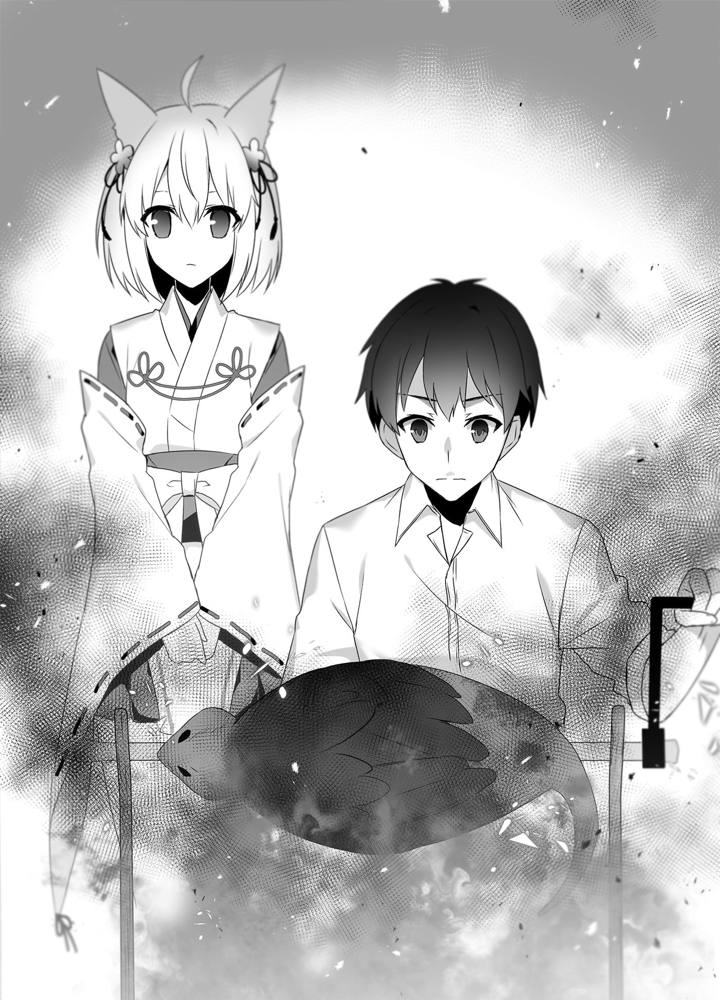
Nothing special had been done to the flying tsuchinoko. It wasn’t plucked or descaled, and no spices were added; it was just put over the flame and cooked. This wasn’t for us to eat, it was purely to teach the lizardman to cook monster meat and eat it, so this was good enough.
The continued exposure to flame made the feathers burn off, and fat dripped off its plump torso. The dripping fat made the fire burn stronger, so we cautiously added water to control it.
The savory smell of cooking meat gradually filled the room.
“You’re good at that...” Julius remarked as he watched me cook the monster. “Maybe you would make a better cook than a king.”
“Hahaha... I can’t deny that.”
“No, no, Darlin’. Aren’t ya supposed to be denyin’ that?” Roroa said in exasperation.
No matter what job he suggested, I’d probably be better suited to it than being a king, but...well, I’d just have to focus on cooking this monster for now.
I called Tomoe over and whispered to her. “Well? Is the lizardman watching us?”
“Y-Yes, Big Brother. Mr. Lizardman can’t look away,” Tomoe responded, also in a whisper.
It was top secret that Tomoe could converse with monsters and demons, so I didn’t want Julius finding out.
Then, somewhat timidly, Tomoe looked at the lizardman. “Until just a little while ago, it only saw us as food. But ever since the smell of fried meat filled the air, it’s been only looking at the cooked monster. I’m hearing, ‘I want to eat that meat.’”
Clang!
As if to support Tomoe’s earlier opinion, the lizardmen grabbed onto the bars, thrusting its pointed mouth through the gap between them.
“Eeek!” Startled by the sound of the lizardman throwing itself against the metal bars, Tomoe ran and hid behind Aisha.
Looks like we’ve got it nice and interested...
The meat was gradually cooking. The fat dripping into the fire made a hissing noise, and despite the appearance of the creature (one fat snake), it was starting to look pretty tasty.
“Big Sis Ai, you’re droolin’,” Roroa said.
“Oops... Excuse me.” Aisha wiped her mouth with the back of her hand.
This had to be torture for the ever-hungry dark elf to watch. If we had more food, I’d fix her a midnight snack...
“Well...I’d say that about does it,” I said.
I looked at the monster meat from below to judge if it was cooked enough. This was my first time cooking flying tsuchinoko after all, so I didn’t know how it tasted best, but I figured it was well done enough. I removed the flying tsuchinoko from the fire and held it up.
“Cooked and ready to serve!”
“Why are you so weirdly energetic?” Julius asked with exasperation.
“Nah, it just felt like a good formulaic thing to say...”
“Huh?” Julius looked at me as if he didn’t get it. It was a natural reaction.
I got back on track, put the still-sizzling flying tsuchinoko on a big plate, and removed the spit. That was the fried flying tsuchinoko, ready to eat.
“Now, let’s do a taste test!” I laid the plate with the meat on it on the floor, then used a piece of wood with another horizontal piece of wood on the end to push it in.
When it realized the meat was coming closer, the lizardman stuck its arms out through the bars and waved them wildly. Eventually, when the big plate got close enough, the lizardman snatched up the roasted flying tsuchinoko and crunched right into it.
...Yes, not just bit, crunched. It didn’t care one bit about the bones as it ripped the meat and tore it apart.
“It’s so wild that it’s creepy...”
It did not look like a pleasant way to eat. I could feel my appetite, which had been stirred up by the smell of cooking meat, rapidly decline. Looking around, everyone else was wincing too. Only Aisha looked jealous.
I called Tomoe over and asked her in a whisper again, “Tomoe, how is the lizardman?”
“It’s overjoyed. Its hunger has been at least slightly sated...”
“I see... I guess this lizardman has learned the taste of monster meat now.”
Even in my old world, once an animal learned the taste of human flesh, it would begin to attack us. This lizardman now knew the taste of monster meat, so it ought to try attacking monsters.
I told Julius, “This is the first stage of the plan complete. Let’s move on to the second stage.”
“Next is the main event, I suppose?” Julius asked.
I nodded.
Chapter 8: The Liberation of Lasta
Dawn broke.
The sun rose in the east, and the area quickly brightened. Even in this land which was in the northern half of the continent, and therefore warmer than the kingdom, it felt cold at this time of year.
In the morning air, there were seven people standing near the western gate: Halbert, Kaede, Ruby, Jirukoma, Lauren, Kuu, and Leporina. Behind them were the soldiers of the Kingdom of Lastania, waiting for the time of battle to come.
“Well then, shall we get started, Ruby?” Halbert asked.
“Yes. Let’s get started, Hal.”
Ruby turned into a red dragon, and Halbert jumped on her back.
“Sir Halbert. Madam Ruby. We’ll be counting on you,” Lauren, the captain of the soldiers, said to them, bowing her head.
“We know,” Hal nodded. “You take care of yourself too.”
“You’ll be working outside the walls, so you’ll be in danger just like us,” Ruby added.
Jirukoma pounded his burly chest. “Leave this place to us. We will put our lives on the line to defend the work crews.”
“Ookyakya! We’ll be helping here too, so don’t worry,” Kuu laughed. “Don’t get carried away and screw this up, Hal.”
“You’re the one who’s going to say that, Young Master...?” Leporina muttered.
Yep, Kuu had the same baseless confidence as ever, and Leporina was holding her head in exasperation.
Kaede walked over to where Halbert was, placing her hand on Ruby’s foreleg.
“Ruby, take care of Hal for me.”
“To borrow a line from Naden, ‘Roger that.’ You can leave him to me.”
“Hal, you too,” said Kaede. “Don’t go too wild, you know? Ruby is with you, so make sure you don’t act recklessly.”
“I know, okay?”
Kaede took a step back from the two of them, then turned to the soldiers and spoke. “His Majesty and Sir Julius are preparing our next move, so I will take command here. Everyone, let’s do our best.”
““Yeah!””
The moment after everyone responded to Kaede’s order, Halbert and Ruby took off into the sky. As they left the ground, Ruby grabbed the blocky object that had been prepared for her with her hind legs. That object which had iron walls on five sides and a metal bar door on the sixth side was a cage for the lizardman that had been fed the monster meat.
Carrying that cage with her as she flew, Ruby asked Halbert, “First, we let this lizardman loose near the forest to the west of here, right?”
“Yeah. We’ll have to touch down, so be careful.”
“I know.”
When they were flying alone, the chimera-like monsters that could fly started to gather around. They probably considered Halbert and Ruby as easy pickings because it was just the two of them. The monsters had no understanding of how powerful those two were.
“Halbert Magna, coming through!” Halbert swung his two favorite spears around, slicing apart the monsters that attacked from above. Then he wreathed one spear in flames and threw it. The moment it planted itself in a monster...
Boom!
There was a burst of fire, and even the other monsters close to it were caught in the blast.
“Here, have another!”
Halbert pulled on the chain attached to his other spear, retrieving the first spear from flames, then wreathed the other spear in fire and threw it. Repeating that cycle, he made bursts of flame blossom like flowers all around them.
Halbert smiled as he swung his spears around. “It’s convenient not having to throw them away after one use. I’ve gotta remember to thank Taru for making these.”
“Kaede warned you not to get carried away, remember...? I’m setting down now.”
“Sure.”
Halbert crouched low on Ruby’s back, and then Ruby came down to earth at a forty-five-degree angle. As she touched down, she opened the door to the cage, then immediately took off again.
Halbert spotted the lizardman crawling out of the cage down below. It immediately ran off into the western forest where its kind were hiding.
“Nice! The lizardman is successfully freed. Next, we fly over the forest.”
“Yeah.”
Ruby spread her wings and flew slowly, heading over the forest with flying monsters in tow. They needed to pull in as many flying monsters as possible, so they couldn’t go too fast, which meant the faster monsters caught up to them.
Bzzz! There was a huge, one-eyed, bee-like monster coming at them with its wings buzzing.
“Do something!” Ruby shouted. “I don’t want to be swarmed by bugs!”
“On it!”
Halbert quadrisected the bee monster with his two spears. The bee monster’s fluids splattered everywhere as it fell to the ground, with just its translucent wings dancing around and refusing to come down.
“Hang in there, Ruby! This is where it gets serious!”
“I know!” she shouted back. Roarrrrrrrrr!
Blowing fire and shooting thorns, the monsters attacked from a distance. A number of those attacks grazed Ruby, but she kept flying at the same steady pace.
Halbert and Ruby finally succeeded in bringing the monsters they were pulling with them over the top of the western forest where the lizardmen were lying low.
Ruby roared, “We’ll settle this in one try! Hold on tight!”
“Got it!”
As Halbert clung to Ruby’s back, Ruby rapidly accelerated, lifting her body, climbing higher into the sky, then somersaulting into a rapid dive to behind the monsters.
In an instant, the hunters became the hunted.
“I’ll pay you back a hundred times over!”
Bwoooooooooosh!
Ruby opened her mouth wide, unleashing a great gout of flame toward the flying monsters.
Dragon breath was the attack most emblematic of dragons, said to be able to lay waste to an entire kingdom. The monsters hit by Ruby’s dragon breath were fried to a crisp and dropped to the forest one after another.
Seeing that, Halbert scratched at his cheek. “Wasn’t that a bit much? The monsters were charred black, you know?”
“M-Meat tastes better well done.”
“I prefer it rare, myself.”
The two of them continued to squabble over things that didn’t matter. They could banter like this because the job was done, so they were now set free from the tension they’d been feeling before.
Halbert looked down to the forest the burned monsters had fallen into. Even from here, he could tell the lizardmen were making a fuss.
If the lizardman they’d freed started eating the fried monsters, the other starving lizardmen would no doubt follow suit. Then, with them having learned the taste of monster...the project would move on to its third stage.
“Let’s head back, Ruby. Kaede and the rest will get worried.”
“You’re right.”
They turned and flew back the way they came.
While Halbert and Ruby were luring in the monsters, there had been movement on the ground too.
The gates of the city walls opened, and armed soldiers piled out. They numbered roughly 600.
Once the soldiers came outside the walls, they attacked the monsters on the ground that were eating the burned lizardmen corpses. The monsters were so absorbed in eating that the soldiers were able to catch them by surprise, cutting them down with swords, shooting them with bows, and striking them with magic until they died.
These 600 soldiers were all battle-hardened. That was to be expected.
These soldiers were a mixed unit made up of the Kingdom of Lastania’s regular forces, the refugee volunteer soldiers, and the Kingdom of Friedonia’s Dratroopers. For this group of combat specialists, slaying monsters that didn’t fly and weren’t particularly more powerful than lizardmen was no different from going hunting.
Inside that group, Captain Lauren shouted to encourage her troops as she knocked away a small monster with the large shield she was holding.
“While Sir Halbert is keeping the flying monsters at bay, we will carve a path! There is no need to chase monsters that flee! Protecting the rear unit is our top priority!”
Lauren’s heavy equipment was ill-suited to moving quickly, but well-suited to settling in and holding a single position. Lauren bashed the monsters that came at her with her shield, cut them down with her sword, and was defending the place where she now stood.
Once the weak monsters realized she was not an enemy who would be easily defeated, they immediately started to move away.
As Jirukoma raced over, kukris in hand, he let out a gasp of admiration despite himself.
“Splendidly done, Madam Lauren. I raced over because you seemed surrounded, but it seems my concern was unwarranted.”
“I am a professional soldier after all. This is nothing to me.” Lauren smiled proudly...and then wryly. “Well, even though I feel that way as the captain of the soldiers, I’m a little embarrassed as a woman that I’m able to fight monsters so easily. I wish I could be a gentle, graceful woman like the princess too, but it’s beyond me...” She laughed weakly.
Jirukoma was a little confused. “What could be wrong with being a strong woman? In my tribe, strength and toughness are seen as virtues in a woman. They can give birth to stronger children that way after all.”
“Ch-Children?!” Lauren’s cheeks went red. “Um... Do you like strong women, Sir Jirukoma?”
“Hm? I suppose I do. My sister was a tomboy after all. I think I do like them.”
“Y-You do?!” Lauren wore a brilliant smile for just a moment, then gripped her shield tightly as if getting her mind back on task. Then she used the sword in her right hand to point forward. “Now then, Sir Jirukoma. I want to ensure safety over the widest area possible, so I would like to ask you remove the monsters from this area. Leave defending this place to me.”
“No, but...”
“I’ll be fine! I am a strong woman!” Lauren pounded her puffed up-chest.
With an expression that looked dumbfounded by her sudden declaration, Jirukoma nodded. “R-Right... I understand. But make sure you don’t do anything reckless.”
“Right. You be careful too, Sir Jirukoma!”
Lauren him go as Jirukoma took off at a run.
While he raced around cutting down emaciated, goblin-like monsters with his two kukris, he ran into Kuu, who had an awkward look on his face.
Kuu swung around his cudgel, crushing lizard-like monsters that raced around, then stood back-to-back with Jirukoma and asked him, “Buddy...you wouldn’t happen to be dense, would you?”
“Dense? What are you talking about?”
Catching the blank look on Jirukoma’s face, Kuu shook his head in exasperation. “I’m talking about you taking responsibility.”
“Responsibility? Um, what do you mean?”
“I wonder. Try thinking for yourself!”
As Kuu said that, he was confronted with a monster coming in at high speed. It was larger than the other monsters, shaped like an ostrich with a goat’s head, and it had its head down and was charging him in as if it was trying to gore him with its two horns.
Kuu put his cudgel behind him, then rushed toward the monster.
“Sir Kuu?!” Jirukoma cried out despite himself, but Kuu performed a slide right in front of the monster, then used his momentum to kick out the monster’s left leg, which was bearing its weight.
“Down you go.”
There was a snapping sound. With the combination of the creature’s own momentum going forward, Kuu’s power coming at it, and the creature’s weight acting together, the monster’s left leg snapped. With only one leg left that it could still use, it rammed into the ground with all its inertia.
Kuu let out a laugh as he watched it. “Ookyakya! Like I thought, your leg was wide open!”
Whoosh... Thock!
An arrow flew in, planting itself into the goat-headed monster’s throat as it writhed on the ground. That finished it off, and it ceased to move.
The person with a bow rushed over to Kuu. “Young Masteeer, don’t scare me like that!” Leporina begged with a tired look on her face. “Our mission is to remove monsters from the mission area. There’s no need to charge in, so show some restraint!”
“Ookyakya! I’m fine, so there’s no problem!” Kuu tapped his cudgel on his shoulder, smiling unabashedly.
While Leporina frowned over Kuu’s lack of repentance, she saw the second group begin heading out from the city gate out of the corner of her eye. The second group, unlike the first, numbered over 2,000, and in place of weapons they were carrying large logs, pieces of firewood, basically any lumber they could lay hands on.
Leporina tugged on the Kuu’s outfit. “Look, Young Master. The second group has come out, so we need to go and guard them.”
“Whoops, you’re right. If I play around too much, Bro will get mad.”
“I would like to give you a proper scolding myself, but...perhaps it would be better if I arranged some lecture time together with Taru.”
“Y-You don’t have to bring Taru into this, okay?!” There was panic in Kuu’s voice.
He thought nothing of being scolded by Souma or his father Gouran, but an extended lecture from the girl he liked was something he wanted to avoid.
Kuu clapped his hands as if trying to dodge the subject, then urged Leporina to go on. “Look, we’re supposed to be defending them, right? Let’s get a move on.”
“Honestly...”
Leporina shrugged and took off after Kuu as he ran.
The one leading the second unit, which Kuu and Leporina were headed to, was Kaede.
“Hurry,” she ordered. “We have to finish before the monsters come back, you know.”
This second unit was the soldiers conscripted by the Kingdom of Lastania. They had minimal equipment, using carts and their own arms to carry logs, firewood, and straw bales. In short, they were a supply unit. Kuu, Jirukoma, and the others had swept the monsters out of this area to secure their safety.
As the supply unit reached the point Lauren was defending, at the midpoint between the walls of Lasta and the forest where the lizardmen lurked, they unloaded the lumber they were carrying. Then the soldiers made a pyramid with the logs they brought, filled the inside with firewood, and stuffed in straw.
What they were building was a giant bonfire, with a height of maybe five meters. This same construction process was repeated in several places simultaneously.
Kaede was using her earth elemental magic (gravity manipulation) to make the logs ignore gravity, allowing the assembly to proceed more efficiently.
In the middle of all that, Lauren ran over to her. “Madam Kaede. We were able to drive off most of the monsters, so let us help too.”
Kaede shook her head. “No, Madam Lauren, please remain on watch in the nearby area. We can’t be sure the monsters that followed Hal and Ruby won’t come back. Please stay extra cautious so we can keep the workers safe from monster attacks.”
“Y-Yes, ma’am! Understood!” Lauren gave her a salute and then returned to her position.
The second unit under command of Kaede continued their work under the protection of the first unit led by Lauren, and in a little over an hour, there were about ten bonfires set up.
Right around that time, a massive shadow appeared in the western sky. That shadow with its big wings spread out was Halbert and Ruby, returning after their duties were complete.
Even though seeing they were well made her feel a sense of relief, Kaede’s face remained stern as she gave orders. “We can’t overstay our welcome. If you’ve finished building, set the fires, and return inside the walls!”
“Yes, ma’am! Setting the fires!”
The newly built bonfires were all set alight at once.
The straw burned quickly, and the smoke turned orange as the light of the fire began to rise.
With the bonfires burning behind them, the second unit hurried inside the walls, followed by the soldiers of the first unit slowly withdrawing while fending off monster attacks.
“I hope the plan goes well...” Lauren, who was in the rear guard, said, sounding concerned.
Kaede chuckled. “We’ve done all we can. Now, we just have to pray it works out.”
◇ ◇ ◇
Gwah! Grrr!
Having lost many of their kind in the battle yesterday, the lizardmen were now lurking in the dark forest. They were all looking up at the sky.
A red line raced across their vision.
For a while now, several red lights had been flying through the sky.
What are those things? they wondered as they watched.
Things fell to the ground in pieces. When they approached, it was charred monsters.
The lizardmen turned their snouts toward the sizzling remains of the monsters.
The cooked meat gave off a savory smell.
The starving lizardmen wanted that smell. However, they stopped short. Before, when they had eaten similar monsters, many of their kind had experienced stomach cramps, and more than ten of them had died.
Whether that was due to the monsters’ meat being poisonous, because of diseases they carried, or the result of parasites...they didn’t know. The lizardmen had no way to know, and they lacked the intelligence to attempt to find out.
The information that “eating the mixed-up monsters can result in death” was all that had been entered into the lizardmen’s not particularly large brains. That was why, even though they were starving, they made no attempt to eat the mixed-up monsters.
But then...
Kshaaaa! ...Chomp!
One of the lizardmen started eating the charred monsters.
It acted as though they tasted good, eating several of them.
The pack of lizardmen watched that individual cautiously.
It was eating the mixed-up monsters, but not only was it not dying, it didn’t even seem to be getting stomach pain.
Why?
Looking at it, the individual was eating well-cooked meat, and avoiding undercooked portions.
Seeing that, the data in the lizardmen’s brains that said, “Eating the mixed-up monsters can result in death” was overwritten to say, “Eating the mixed-up monsters raw can result in death, but if they are well-cooked, they can be eaten.”
In the next instant, the lizardmen swarmed around the roasted monster meat. Due in part to their hunger, they tore into the meat with reckless abandon.
Even the lizardmen who hadn’t witnessed the original individual witnessed those who had seen it, learned the same information, and a battle over the cooked meat began.
Eventually, that information spread through the whole pack.
However, there was far too little meat for 800 lizardmen. The well-cooked meat vanished in no time flat, leaving only the undercooked meat.
While they were wondering what to do, a light appeared near the outside of the forest.
Looking at it, there was a place with fire burning brightly.
If I use those flames, I can cook this undercooked meat! The lizardmen who thought that took the undercooked meat and approached the fire, then threw it in. They ate it when it was cooked.
In the pack, there were some who could breathe fire themselves, and those individuals cooked and ate by themselves.
However, there was a limit to the undercooked meat too.
I want more.
Looking around, they noticed that...there was plenty of “raw meat” feeding on their kind’s corpses.
The lizardmen began to hunt.
◇ ◇ ◇
“It’s incredible to see, isn’t it?” I asked.
“Yeah...” Julius murmured.
It was around ten in the morning, with the sun was fully risen, and shining brilliantly.
I was with Julius, standing on the wall, watching the scene unfold beneath us in awe.
We watched the lizardmen surround the bonfires, cooking the meat of monsters they had hunted. It was like a banquet for primitives.
The lizardmen were a threat to us, but this was like watching a scene from ancient times, and it put me into a strange, indescribable frame of mind.
Aisha, who could see well at a long distance, pointed and explained. “Over in that corner, a group centered around a fire-breathing lizardman is starting to form, sire.”
Because we had taught them to cook before eating, there was now a major shift in the balance of power happening within the lizardman pack.
Naden and Ruby were dropping in kindling and straw from the air to make sure the fires didn’t go out, but not that many could gather around the bonfires, and the inevitable result was that the strongest individuals monopolized them. With that happening, those that could breathe fire for themselves were at an advantage.
The lizardmen who couldn’t get near the bonfires were apparently hunting an extra share of monster meat for the ones that could breathe fire in order to have those cook meat for them. It was a very simple contract based on a mutually beneficial relationship. There was a clear hierarchy forming between the lizardmen.
“It’s like watching a microcosm of society, you know,” I said, and Julius nodded.
“I couldn’t agree more. I never would have dreamed the day would come when I’d see society reflected in the actions of monsters.”
“If we gave them another thousand years, don’t you think they could achieve something resembling civilization?” I asked.
“Possibly, but...we can’t afford to wait a thousand years.”
“True enough.”
The relationship between mankind and monsters was one of kill-or-be-killed.
Because it was impossible to converse with them, if we didn’t defeat them, they would bring harm to those we cared about. It might be cruel, but there were people and things we needed to protect.
Julius stood on the edge of the city walls, then gave the order to the eagerly waiting soldiers.
“The number of monsters is down! Now, wipe out the lizardmen!”
At Julius’s command, the north and south gates swung open.
◇ ◇ ◇
“North and south forces, begin the attack!” he ordered.
To deal with the lizardman gathered in the west, Julius sent 1,000 troops out of the north and south gates, which then circled around to northwest and southwest of the pack.
“We will go on foot to circle around behind the enemy!” Jirukoma called.
“We will attack from the south side! Men, don’t be late!” Lauren shouted.
The one leading the northern force was Jirukoma, and the commander of the southern force was Lauren.
Partially because the lizardmen were distracted by eating, they let these two forces approach them easily.
Kaede, who was watching from the walls, raised her right hand. “Now, light the signal!”
At Kaede’s command, a smoke signal went up from the west gate.
When Jirukoma and Lauren saw it, their forces attacked the lizardman pack from the northwest and southwest. With a force of 2,000 attacking them in a V formation, the surprised lizardmen were pushed toward Lasta in the east.
When she saw that, Kaede poked her head out over the inside edge of the city wall, and said to the person down below, “The time is ripe! We’re counting on you, Sir Julius!”
“Understood!”
Moving away from the wall, Julius, who was riding on a white horse, drew his sword and held it aloft.
The 1,000 soldiers around him were mostly elites, including Lastanian regulars and the Dratroopers. The troops were waiting for the order to set out to come at any moment, and Julius announced to them, “The fate of this country hangs on this battle! Eliminate the lizardmen, for the sake of the families huddling in fear behind these walls!”
“““Yeahhhhhhh!”””
While listening to his men shout, Julius gave the order to the gates.
“Open the gates!”
The west gate opened, and 1,000 troops led by Julius leapt out.
The soldiers kept going with that momentum to plow straight into the confused pack of lizardmen.
“My life for Lastania!”
“Die already, you damn lizard!”
As if venting their grudges over the battle on the walls, they made a bloody mess of every lizardman they came across. Julius rode around swinging his sword too, lopping the heads off one lizardman after another. There was a trail of lizardman blood left behind where he had passed.
At the end of that line, Julius pointed his sword to the west and gave the order, “Keep going, and push until we’ve finished them!”
◇ ◇ ◇
“He’s doing a brilliant job commanding them, huh?” I commented.
The west gate opened, and the 1,000 troops coming out of it were attacking the lizardmen who had been pushed east. Under attack from three sides, the lizardmen were in a state of terror.
Hal and I were watching the scene unfold from up in the air on Ruby and Naden’s backs.
The forces led by Julius had just surrounded the lizardmen in a triangle formation. He didn’t close the encirclement, however, leaving a slight escape route to the west, between Jirukoma’s and Lauren’s units. If he closed all avenues of escape, the enemy would focus on his forces, but if there was even a narrow way out, the lizardmen would be distracted by it.
As the lizardmen turned their attention to the west, Julius’s forces moved to crush the pack from the east.
Somehow, it reminded me of a pastry bag.
“In my world’s military tactics, this would be an example of, ‘In order to capture, one must let loose,’ but you wouldn’t get that reference. Let’s call it the Pastry Bag Strategy instead.”
“No, no, a name that makes you want to use it is no good,” Naden said, poking fun at me with her telepathy.
Hmm...
“Then, since it looks like a ryuu’s mouth, how do you like ‘Naden’s Mouth’ instead?”
“Don’t go putting my name on it without permission!”
“Here’s how it’d sound on the battle field: ‘Let’s use Naden’s Mouth here!’ ‘This is the essence of Naden’s Mouth.’ ‘Is there no one here who can break out of Naden’s Mouth?!’”
“Stoooop iiiit!”
“You two...I know I’m not one to talk, but this is a battle, so be a little tenser, would you?” Hal, who was had brought Ruby’s body closer, said in exasperation.
Ruby nodded. “You too, Naden. Take your job more seriously.”
“I didn’t do anything wrong this time, did I?! Souma’s the one acting silly!”
“...You have a point,” Ruby admitted.
“Don’t worry, I’m looking around like I’m supposed to!” I called back.
My job in this battle was to monitor the area and ensure no unexpected crises arose. We couldn’t be sure there would be no sudden influx of reinforcements. That was why I was using Living Poltergeists to scatter my wooden mice and monitor a wide area around the battlefield.
As we were talking, I had a response.
“Hal, there’s a group of lizardmen coming in from the north. New ones that’ve crossed the river. There’s fifty.”
“Got it! We’ll wipe them out real quick. Let’s go, Ruby!”
“Okay!”
Ruby flapped her big wings and flew off to the north.
Hal and Ruby were a commando unit. They used their power and mobility to support areas that looked ready to collapse, or to respond to unexpected situations like just now.
“Now then...” I said, looking down.
There was a one-sided fight unfolding. The lizardmen were being pushed back by the force Julius was leading and gathering at the narrow escape route to the west. With all the pushing and shoving to get there, some were even being trampled to death by their own kind.
It looked like some lizardmen were getting out of the encirclement through the escape route. They were trying to flee into the woods, but...it wasn’t going to be that easy. This was a war of extermination. In order to avoid later troubles, we couldn’t let them get away here.
“So, I’m counting on you for the finishing touches, Aisha.”
My strongest fiancée was waiting for the ones fleeing into the woods.
◇ ◇ ◇
The lizardmen fleeing into the forest must have thought they’d escaped. However, there was no time for them to feel relief, as another crisis came down on them from above.
“Hi-yahhh!” Aisha shouted.
Thud! There was a loud sound as her greatsword swung into the ground, and a large lizardman was split in two.
The bisected lizardman’s dead body crumpled.
Aisha, the strongest fighter in the kingdom, lifted her greatsword with one hand, a weapon heavy enough to split the ground after cutting through the lizardman, then effortlessly swung it to clean off the blood.
“This feeling... It’s been a while.” Aisha held her greatsword level with her eyes. “Today I am not here as His Majesty’s fiancée, or as his bodyguard, but as a single warrior here to demonstrate her skills. Aisha of the God-Protected Forest is coming for you!”
She held her greatsword sideways as she ran forward. As she passed by some lizardmen bewildered by the sudden surprise attack, a single flash of her sword divided three of them in two simultaneously.
“Gishaa!” the lizardmen shouted.
Coming back to their senses, the lizardmen pounced at Aisha, but she used nearby tree trunks as footholds to bounce from tree to tree.
“I was born and raised in the God-Protected Forest. I have a slight advantage fighting in the forest,” Aisha grinned with confidence.
It wasn’t like the lizardmen could understand a word of what she was saying. But Aisha turned toward the ones who were bunching together to try to attack her and swung with her greatsword’s flat side down. Like swatting flies, the lizardmen were smashed.
Aisha shook off the blood like before, then looked at the lizardmen as if searching for her next prey. That glint in her eye intimidated the creatures, and they stayed still.
“You aren’t coming? Then I will go to you!” she yelled.
Aisha cut down the lizardmen one after another in order of proximity. For the lizardmen further away, she sent a cutting blast of air pressure, Sonic Wind, to cut them up. Her Sonic Wind slashed up not just the lizardmen, but the surrounding trees as well, making it like a violent wind.
This is crazy. There’s no way we can take her. The lizardmen instinctively sensed that and scattered.
However...
“Whoa, there. Young Miss Aisha’s not the only one used to fighting in the forests!” a voice called.
Having circled around in front of a fleeing lizardmen, Kuu took a hard swing with his cudgel into the underside of the lizardman’s jaw.
An arrow that flew in from between the trees in yet another direction planted itself in the lizardman’s forehead.
Up on a branch in a large tree nearby, Leporina held her bow at the ready.
Kuu jumped up into the branches, hanging down by his tail with a cheerful laugh. “Members of the snow monkey tribe are good at climbing trees, and Leporina’s from a family of hunters. It’ll be another thousand years before you’re any match for us in the forest.”
“If you get too cocky, you’ll get hurt,” Leporina warned him as she jumped from branch to branch.
“Oh, come on, like that would ever—Whuh?!”
When Leporina landed on a branch in the tree Kuu was hanging from, the branches shook, and his tail slipped, making Kuu fall headfirst to the ground.
Leporina quickly looked down below. “Wait, Young Master?! Are you all right?!”
“Ow... I didn’t quite land properly.” Though he was rubbing his head in pain, he didn’t seem particularly badly hurt.
Though Leporina was relieved, she puffed up her cheeks. “Geez, don’t worry me like that.”
“Sorry, sorry... Now, let’s clean up the rest of them.”
Kuu shouldered his cudgel and took off running. Leporina hurried after him.
Those like Kuu, Leporina, and Aisha, who excelled at fighting in the forest, had been lying in wait to exterminate the lizardmen when they fled in there. The lizardmen who had been hunting chimeras were now being hunted themselves.
Just as the battle in the forest was ending, the battle in the field wrapped up too.
As might be expected from the side that had held the advantage from beginning to end, compared to the piles of lizardman bodies littering the battlefield, the combined forces of Lastania and Elfrieden had taken only minor losses.
The battle near Lasta was about to end in victory. However, it wasn’t as though it was all over, so they couldn’t afford to stop.
In with the soldiers, Julius was shouting, “The liberation of Lasta is a success! However, if nothing changes, we will be surrounded again! We will continue north from here, seize the fortress at the river crossing, and push the line of defense up! Only once that is possible can the families inside the walls get a good night’s sleep!”
Then Julius thrust his sword skyward.
“It’s just one last push! Let’s go!”
“““Yeahhhhh!”””
With that, 3,000 soldiers marched on the fortress to the north.
They advanced up to the Dabicon River, taking out a group of a little over ten lizardmen that were heading south along the way, and approached the fortress near the crossing point.
It seemed there was no shortage of lizardmen nesting in the fortress, but they didn’t have the intelligence to fight a siege and were quickly eliminated to retake the fortress.
“Well done, everyone!” Julius called. “Give me a cry of victory!”
“““Hip, hip, hooray!”””
The soldiers’ victorious shout echoed as dusk fell on the fortress.
Souma and Julius went on to use this fortress as their base, eliminating the lizardmen that crossed in small numbers, as they waited for the main body of reinforcements to arrive from Friedonia.
Material aid from the Union of Eastern Nations was now able to enter the liberated Lasta, and supplies were carried to the front-line fortress by the wyvern cavalry who had returned.
Then, a week later, roughly 60,000 reinforcements at last arrived from the Kingdom of Friedonia.
Chapter 9: Help Arrives
Ludwin, who was leading the reinforcements, rushed over the moment he saw me. “Your Majesty! I’m glad to see you’re safe.”
There was no way the 60,000 reinforcements from the Kingdom of Friedonia could enter a small-scale fortress with 3,000 soldiers already holed up inside, so the main body of the reinforcements camped in the nearby field, while their leaders were now at the fortress.
We who were in the fortress were meeting them with our key members all together.
Ludwin knelt in front of me, clasping his hands in front of him as he gave his report. “Ludwin Arcs has just now arrived with the reinforcements.”
“Well done,” I said. “You can take it easy now.”
Having exchanged some formal greetings, Ludwin stood up and immediately voiced his complaints.
“Still, sire, this is too much! What were you thinking, accompanying the advance party yourself?! Taking non-combatants like Lady Roroa and your little sister with you too!”
“Our former enemy Julius was in Lasta. There was no telling if the Dratroopers could coordinate well enough with him on their own, right? Roroa and I had to act as intermediaries. Besides, if I wanted to gather more information, having Tomoe’s ability was a necessity. I brought Aisha and Naden too, so we could flee if it got dangerous, meaning there was no problem.”
Incidentally, I had brought both Roroa and Tomoe from Lasta to the fortress too. I figured that Tomoe always had Inugami guarding her, and if things got dicey, I could have Naden carry them away, so it was probably fine.
Ludwin pressed his fingers against his temples with a sigh. “Still, there’s always the remote chance something could happen. If the princess heard of this...”
“Urkh... I think maybe I’ll have you keep quiet about this to Liscia...”
I was justified in my actions, but Liscia would worry. The more we worried her, the longer I would get scolded later. I appreciated her concern, but I still wanted to anger her as little as possible.
Ludwin shook his head in exasperation. “The soldiers are already telling stories about your bravery in leading an advance party into a city hopelessly surrounded by monsters. When the soldiers return home, it won’t be long before the princess hears of it.”
“I guess I’ll have to turn myself in, huh...”
I was likely to get a lighter scolding if she heard about it from me rather than someone else. But still... I was usually told I wasn’t much like a hero, so wasn’t it unfair that Liscia told me off anytime I did something that required bravery, for once?
“Aw, well, it shows how much Big Sis Cia cares for ya, now doesn’t it, Darlin’?” Roroa asked.
“That’s right,” Aisha nodded. “You have to accept it.”
“I mean, I just carried you around like you told me to,” Naden said.
Those three were all in agreement.
“No, I think you’ll all be getting an earful too, you know? Naden for being my accomplice, Roroa for acting just as reckless despite being a non-combatant, and Aisha about her responsibility in watching over us.”
“...Big Sis Ai, Nadie, how about we avoid goin’ to see Big Sis Cia for a while?” Roroa asked.
“Y-Yes, let’s do that,” Aisha said.
Naden nodded. “Roger that.”
“Isn’t that kind of unfair?!” I cried.
While we were talking, Julius, Jirukoma, and Lauren came over.
When Ludwin noticed Julius, he put on a grim face.
In the battle of the forces of the Elfrieden Kingdom and Principality of Amidonia facing off near Van, Ludwin had been commander-in-chief of the kingdom’s forces, and Julius had participated as a top commander alongside Gaius VIII. These two, it could be said, had directly fought one another.
“Sir Julius Amidonia,” Ludwin said in almost a whisper, and Julius extended his hand.
“The Amidonia name now belongs to Roroa alone. It’s just Julius now, Sir Ludwin Arcs of the kingdom’s Royal Guard.”
“You know of me?” Ludwin asked.
“I took command on the front line in place of my father during that battle. I remember the name of the one I fought. Your command was solid, and I could find no place to break it apart. I thought you were quite a difficult opponent.”
“I see now,” Ludwin said slowly. “The reason we couldn’t break the principality’s forces, even with their low morale, was because you were there.”
Ludwin and Julius exchanged a firm handshake. There was none of the awkwardness I had felt meeting Julius again. That was likely because they held something as common as warriors who oversaw commanding troops.
Besides, Ludwin was an affable young man, so it was hard to dislike him.
“I’ve heard about your exploits from His Majesty,” Ludwin said. “He said something about the Lastanian royal family entrusting you with the command of their armies, and you breaking through the encirclement with only 3,000 troops. I couldn’t be more reassured to have you on our side.”
“No, that was only possible with the Dratroopers’ assistance,” Julius said. “Besides, Lastania’s soldiers alone will not be enough to exterminate the tens of thousands of lizardmen that are no doubt on the other side of that river. I am keenly grateful for your assistance.”
“Indeed,” Ludwin said, nodding. “Let us overcome this crisis together.”
Suddenly, an energetic voice broke in. “Brother!”
For a moment, I thought it was Roroa, but she didn’t tend to address her brother quite that way. Looking in the direction the voice came from, Jirukoma’s little sister Komain was rushing over.
Behind her was Poncho, who was in charge of managing logistics, and the head maid who was assigned to be his assistant, Serina.
Komain ran straight to Jirukoma. “Brother! Thank goodness you’re all right!”
The appearance of the sister he had left behind in the Kingdom of Friedonia made Jirukoma’s eyes bulge wide. “Komain?! What are you doing here?!”
“King Souma arranged it. I’ve come together with the man I now serve.”
“The man you now serve?”
“Sir Poncho.”
With that said, Komain went to stand beside Poncho, who was slowly walking over.
Poncho placed his right hand on top of his head, bowing repeatedly to Jirukoma. “I-It’s been too long, Sir Jirukoma. Komain has been helping me a lot as my assistant, yes.”
“Oh, you were the one she wanted to serve with, Sir Poncho? We are in your debt for the food you gave us refugees in our time of need. If my little sister can be of help to you, please, work her hard.”
“No, I couldn’t do that...” Poncho said nervously.
“Don’t worry. Sir Poncho is too considerate to do that to another person,” said the woman in the maid uniform who was standing opposite Komain.
Jirukoma looked at that woman who was wearing a maid uniform despite being in a war zone. He cocked his head to the side. “Who might you be? Are you Sir Poncho’s maid?”
“I am Serina, the head of the castle’s maids. It’s an honor to make your acquaintance.”
Serina lifted the hem of her maid uniform’s long skirt and curtsied.
“My mistress is Princess Liscia, but for various reasons I now act as an assistant to Sir Poncho. Ah, yes... You may think of me as a colleague of Madam Komain’s.”
“You’re...colleagues?” Jirukoma asked, taken aback.
Well, strictly speaking, it was less that they were colleagues, and more that they’d both been entranced by the food Poncho made, but a capable woman like Serina was never going to give off any hint of that.
Komain noticed the woman in armor standing awkwardly behind her older brother. “Brother? Who is that woman?”
“Oh, I forgot to introduce you. This is Madam Lauren, the captain of the soldiers in the Kingdom of Lastania, where I now reside. Madam Lauren, this is my little sister. Her name is Komain. And this is Sir Poncho of the Kingdom of Friedonia, who has been taking care of her, and Madam Serina.”
Then Jirukoma pushed Lauren forward and introduced her to everyone.
Lauren’s face was a little tense as she saluted the three of them. She seemed flustered by the sight of Komain. “I-I’m Captain Lauren. You’re Sir Jirukoma’s sister? S-Sir Jirukoma is always helping me...”
Poncho and Jirukoma probably assumed she was just feeling shy to be meeting someone new, but Komain and Serina knew exactly what was going on.
Komain asked Serina in a hushed voice, “Um... Serina. What do you think about this?”
“I don’t know what else there is to think. It’s exactly what you’re imagining, isn’t it?”
I knew it, Komain thought as her shoulders slumped. It seemed this Lauren woman had a thing for Jirukoma. In which case, one thing concerned her. “Do you think my brother has noticed her feelings?”
“I would suspect not,” Serina whispered. “Look, he has the same expression as Poncho, like he’s looking out for a girl who’s younger than him.”
“Ahh... There’s no way he’s noticed then.” Komain scratched at her cheek.
She had no intention of inserting herself into her brother’s love life, but it was going to be awkward having to deal with his partner as his younger sister. That said, Lauren didn’t seem like a bad person, so Komain gave the tense female soldier an awkward smile.
“Um... I’m sorry. It seems you’re doing a lot for my brother.”
“Oh, not at all! If anything, he’s the one who’s always helping me. Sir Jirukoma has saved me on countless occasions,” Lauren said, blushing.
Ohh...she’s got it bad, Komain understood. And seeing how big a crush the woman had on her brother, his utter lack of self-awareness about it started to irritate her as a fellow woman.
Komain deliberately put on a charming smile. “I see you and my brother are close. Are you two in love, maybe?”
“I-In love?! No, we’re not, um...” Lauren was clearly unsettled and started fidgeting. She may have looked like the dashing warrior type, but the way her actions were oddly maidenly was cute.
However, as for Mr. Clueless...
“What’s this, out of nowhere?” Jirukoma exclaimed. “Isn’t that rude to Madam Lauren? We have no such relationship.”
He didn’t get it at all. Komain could see why Lauren was a little depressed.
“You’re the rude one here, Brother,” she informed him.
“Huh? What do you mean?”
Komain wanted to explain it until he got a clue, but she just barely managed to bite her tongue and hold back. If she pointed it out herself, she would be causing trouble for Lauren.
Serina whispered in Komain’s ear, “I see the situation is quite inte... No, I mean troubling.”
“Did you just start to say interesting?!”
“With these sorts of gentlemen, you must be direct, or it will never get through to them. So why don’t we have Madam Lauren come right out and say it?”
“You might be right, but...do you think she’ll plainly reveal her feelings?”
“Oh, that’s simple.” The corners of Serina’s lips turned up. It was only a slight smile, but it was like a glimpse of her inner sadist.
While Lauren was still looking happy about being asked if she and Jirukoma were in love, Serina said casually, “Madam Lauren, how many children are you hoping to have with Sir Jirukoma?”
“Three!”
It was an instant response. She must have thought about their future together in great detail.
The area instantly went quiet, and Jirukoma’s eyes were wide with surprise.
“M-Madam Lauren...”
“...Ah!”
Brought her back to her senses, Lauren instantly turned a bright shade of red as she realized she’d slipped up.
“Uwah...ah...”
With her face red all the way down to her neck, Lauren’s eyes filled with tears as she uttered ill-formed words. Then, in the next moment, she bolted like a startled hare and ran away.
As Jirukoma stared dazedly at her back, Komain asked him, “Brother, do you understand which of us was the rude one now?”
“Ahh... Ah! No, but...”
Now it was Jirukoma’s turn to panic. No matter how clueless he might be, he had surely realized how she felt now. Well, not so much realized as had been told the answer.
In exasperation, Komain asked, “So, how do you feel, Brother? How likely is it that I am going to have to call that person Sister?”
“I find Madam Lauren...desirable,” he admitted slowly. “However, I remain in this land for the dream of retaking our homeland. I couldn’t form a family...”
“I see... So that’s the reason...”
It seemed Jirukoma’s unawareness of her feelings had been not simply because he was clueless about such things, but also because in his role commanding the refugee volunteer soldiers who dreamed of returning home, he had put his own needs second, or even third. Then...
“Hmph. What’s the harm?” Julius slapped Jirukoma on the back. “There are other refugee volunteers who’ve made families in this country. If you have a fondness for Captain Lauren, why not respond to her feelings?”
Then Julius smirked.
Jirukoma was shocked. “I can’t believe this, Julius. Do you have a grudge against me for teasing you about Princess Tia?!”
“Oh, no, I’m simply returning the words you gave to me. ‘It seems it’s time to pay the piper, Jirukoma. Congratulations. Well, it was simply a matter of time, anyway.’”
“Grrr...”
Jirukoma could say nothing in response. At last, after everyone urged him to give up on ignoring her, he did so, and chased after Captain Lauren.
I watched the whole exchange in silence, thinking, Talking about settling down with a family when you’re on the battlefield is a death flag, so stop!
I seriously started wondering if I should have Jirukoma keep a pocket watch over her chest, but in this world, it was mostly sword wounds and the like, so maybe chain mail was better.
Well, leaving Jirukoma and Lauren to sort themselves out, what I had to deal with right now was the lizardmen across the river.
“Ludwin, do we know what the situation across the river is?” I asked.
“Yes. According to reports from our wyvern cavalry scouts, there are about 50,000 lizardmen amassed across the river. We’ve also confirmed various other species of monster. It seems many of the monsters can fly,” Ludwin reported.
50,000 lizardmen and countless other monsters... That was a lot. We had 60,000 regulars, and the wyvern cavalry was with us for air power. If we threw the whole army at them, they would never lose to the lizardmen, who had no concept of strategy or formation. However, there was the issue of geography.
“Them being a large force across a river is a problem,” I said. “Just like how they can only cross the shallows in small numbers, we can’t have our whole army cross at once either, right?”
“You’re right... If we send small groups one after another to establish a beachhead, the vanguard will be surrounded. That would increase casualties on our side. We could have the wyvern cavalry provide bombing support, but...”
“No, we shouldn’t do that,” Julius interjected. He must have been listening to us. “If we attack from just one direction, the enemies that have gathered here for us will scatter. If they are divided, the area damaged will expand that much more, and the time to put them down will be extended. Can we find some way to exterminate that pack in one stroke?”
“You say that, but...” I scratched my head.
I understood what Julius was saying, but to wipe them out quickly, we would need to get a large number of soldiers across the river fast. Inside our own country, there were many transportations on the table like the Rhinosaurus Train or the Roroa Maru, but this was a foreign land. We had limited options.
“The Dabicon is a major river, right? If we scrape some boats together, can’t we get them across at once?”
“No, we can’t use large ships in a shallow river like this,” Julius said. “It’s not realistic to have 60,000 men cross in smaller ships, either.”
“In that case, how about tying together small boats to create a bridge...” I began. “Wait, we’d need to get a rope to the other side of the river first.”
Julius and I both wracked our brains, but nothing good came out of it.
It seemed there was only one man we could count on. I turned to Ludwin, who had returned.
“Did Hakuya have any directions for you?” I asked.
Our last resort was the country’s bag of wisdom, Hakuya Kwonmin the Black-robed Prime Minister. I had been giving detailed reports on our situation here to the main body of reinforcements and Parnam Castle via messenger kui. That was because I figured that if he was aware of our situation, clever Hakuya would come up with some countermeasure.
Ludwin nodded. “Yes. The prime minister came up with an effective plan based on the information you sent him, sire. The people we will need for this plan have already been sent too.”
That was Hakuya for you, always quick. But what was this about people we’d need?
“Who are we talking about here?”
Ludwin began, “That would be...”
“Hehe! It’s me, sire.”
I turned toward the seductive voice that had suddenly addressed me, and there was a blue-haired beauty.
For a moment, I thought it might be Juna, but unlike Juna, this woman had antlers sprouting from her temples, she wore a kimono-like outfit which was open to reveal her ample cleavage, and a reptilian tail that was similar to Naden’s slithered out from her rear end.
“Excel?!” I exclaimed, letting out a cry of surprise at her unexpected arrival.
It was Excel Walter, Juna’s grandmother and the Commander-in-Chief of the National Defense Force.
She giggled happily covering her mouth with a fan. “Oh, my, sire. You’ll be marrying Juna soon, won’t you? You can call me Mother instead of Excel, you know?”
“No, but wouldn’t I be calling you grandmother...?”
“Did you say something, Your Ma-je-sty?”
“Nope, not a word, Mom.”
I immediately raised the white flag at her intimidating smile. Nothing good would come from pissing this lady off after all. It could get pretty nasty.
I cleared my throat, then started afresh. “So, why are you here, Excel? I ordered you to defend the kingdom while I was away, didn’t I?
“The Prime Minister asked me to. My powers are needed, so he asked me to join up with you. Don’t you worry, once the battle here is over and done with, I’ll nip right on back to the kingdom.”
Saying that, Excel wearily turned her shoulders in circles. “Honestly now, both you and the Prime Minister are so rough on your elders.”
“I’m sure you’d get mad if I treated you like an elder...”
“Well, I don’t mind poking fun at myself, but I won’t let anyone else say it.”
“Oh, I see...”
Well, the fact that a wise and experienced general like Excel had come bearing a plan from Hakuya was something to be happy about in this situation. I’d just been drawing a blank myself after all.
Excel put her arms around me from the front, pressing her body up against mine. “Hehe! Now that I’m here, you have nothing to worry about.”
“Too close too close too close!”
This was way closer than family were allowed to get, you know?!
While everyone was watching, it was super awkward to have the young-looking and buxom Excel making a move on me like this. Ludwin and Julius’s stares hurt.
While I was thinking that, Excel suddenly moved away. Just as I was feeling relieved...
The next instant, bzzap, a blue flash shot past my head.
When I turned back, Naden had an angry face and all her hairs were standing on end. There were so many sparks flying around her, it was clear at a glance that she was pretty mad.
Then the next thing I knew, someone grabbed me by both hands, and I was pulled back.
I stumbled back two, three steps, and there were Aisha and Roroa, each holding one of my arms.
“Duchess Walter! That’s enough fooling around!” Aisha shouted.
“Darn straight it is. Just ’cause Big Sis Cia and Big Sis Juna aren’t around doesn’t mean you can go makin’ eyes at Darlin’.”
“The next one will hit,” Naden snarled as she hugged me over the shoulder from behind. Maybe because of the electricity, my hairs were all standing on end. It was pretty scary to hear it crackle next to my ears.
Seeing my fiancées’ reactions, Excel laughed even more happily. “Hehe! Your desperation is so cute.”
“Please, don’t mess with my fiancées,” I begged.
“Oh, my, isn’t it nice I stir things up and help you reconfirm your love for each other on such a regular basis?”
“We haven’t gotten tired of each other, so all you’re doing is making me uneasy.”
“I see you have troublesome relatives too,” Julius said.
Even Julius was looking at me with sympathy... Now I was just getting sad.
Maybe she was satisfied with the response we’d given her, because Excel opened her fan and cheerily said, “Now, sire, I’m the best help you could ask for. How about we start the meeting on how we’ll eliminate those lizards across the river right away?”
...Honestly, this lady sure was having a riot in life.
Chapter 10: Everyone’s Night Before the Final Battle
It was a night in autumn when the moon was bright.
By the time Souma and his companions finished with their meeting to discuss the plan Excel had brought from Hakuya, it was already late at night.
There were soldiers from both the Kingdom of Lastania and Kingdom of Friedonia resting in the fortress courtyard.
That said, it was a tiny fortress. There was no way for it to hold the entire 50,000-strong army that the Kingdom of Friedonia had sent. Most of the soldiers and officers were camped outside the fortress.
With the strategy meeting finished, Julius went to look around the camp. At which point...
“You! You’re Lord Julius?!” a soldier cried.
“Ohh, there’s no doubt about it, it’s Lord Julius!”
He was surrounded by several men wearing Friedonian army uniforms. There were many in the Friedonian forces who had fought against him in the past, so Julius tensed, but the men put their hands together in front of them and bowed to him.
“We belonged to the forces of the principality.”
“We fought under you at Van.”
“We’re so, so glad to see you’re all right.”
As the two began to shed manly tears of joy at their reunion, Julius relaxed.
“I see... You’re Amidonian then.”
“Yes,” one of the soldiers said tearfully. “We weren’t strong enough to protect you then, Lord Julius...”
These were likely men who had sworn loyalty to Gaius and Julius. Even in the homeland he thought he had cast away, there were people who thought about him. That alone gave Julius some solace.
Because of that, he put an arm around the shoulder of the man crying manly tears and said, “You’ve saved me by coming here. I thank you.”
“Lord Julius...”
“How are things? Are Souma and Roroa ruling Amidonia well?”
The men nodded.
“Y-Yes. I think they’ve brought stability.”
“They’ve unified and reorganized the forces of the principality and kingdom, and we’re making progress with reconciliation.”
“He held a festival in memory of Lord Gaius the other day too.”
“A festival to mourn my father... I see. That does sound like something he’d do.”
Julius properly understood Souma’s intent. It was likely a mixture of emotion and practicality.
The common people had feared Gaius, but he had been an object of love and respect for the soldiers. In holding a memorial festival, Souma would be able to reduce resistance from those people. That would be of practical benefit to Souma, who wanted to advance reconciliation between the kingdom and principality.
The emotional part was his feelings for Roroa. Even though Roroa’s relationship with her father had been frosty, Souma perhaps felt a sense of guilt over being the one to kill him.
It’s naive of him, but...I can’t see any reason to reject it.
Julius now had a person he would give his own life to protect: Princess Tia, who had remained in Lasta. If it would keep her from crying, and it would make her smile, he would do anything, no matter how inefficient. Even as he complained about doing it.
The image of Tia’s perfect smile flashing through his mind made Julius’s face soften a little.
“Lord Julius?” one of the soldiers asked.
“...No, it’s nothing.” Julius put a serious look back on and said, “Though my father, Gaius, was defeated, I am told he was able to display the pride of Amidonia in his final moments. If I, as his son, were to complain about that result, it would be a stain on my father’s legacy. Therefore, I have no intention of holding a grudge against Souma or Roroa. I’d like all of you to keep supporting them.”
“Ohh, what resolve!”
“Lord Julius! We swear to support Lady Roroa!”
Seeing the crying soldiers act so moved, Julius could only smile wryly.
There was no lie in what he had said, but Julius didn’t want to hear, “Please, come back to the principality” at this point, so he had meant to convey, “I’m getting along just fine here, so you people take care of yourselves there.” He had no lingering attachment to the House of Amidonia.
I couldn’t leave Tia to return home, and I’ve no desire to bring her back with me, he reflected. I wouldn’t want to pull her away from this country where the people love her, and where all the people she loves are.
Julius forced a smile as he put a hand on the soldiers’ shoulders. “I know I was unable to rule my own country, but I want to do what I can to protect this country which took me in. Please, if only for now, lend me your strength.”
“That’s always been our intent!”
“We are proud to be able to fight alongside you again!”
The soldiers wiped the tears from their eyes.
Julius gave them a firm nod. “Then rest now. I’ll need you to work your hardest tomorrow.”
“““Y-Yes, sir! Excuse us!”””
The soldiers saluted and then returned to their posts.
Once he had seen those soldiers go, Julius let out a sigh in the sudden silence that had fallen around him.
“Maybe I should rest too...”
Julius went inside the building and stood in front of the room he was now using as his own. He was kind of exhausted today. He opened the door, thinking it was about time he rested in preparation for tomorrow.
“Welcome back, Lord Julius!” a voice said.
“Yeah... Huh?!” He gave a natural response, but then realizing there should be no one there to say that to him, Julius’s head snapped up.
There stood Tia, who was supposed to have been left behind in Lasta.
“Princess Tia?! Why are you here?!” he exclaimed.
“Eheheh. I came.”
“But how...?”
“Lady Roroa and some others were heading to the fortress in a gondola, so I stowed away with their luggage.”
“A stowaway?! How could you...? There must be an uproar in Lasta by now.”
“Oh, that’s not a problem. I left a note saying I’d be coming here.”
“That’s not the problem!”
Julius grasped the temples of his now-throbbing head. This was a level of decisiveness comparable to Roroa’s.
Seeing the troubled look on his face, Tia hesitantly spoke up. “Um, I’m sorry. But I just couldn’t help but worry...”
Julius let out a sigh of resignation. “...Did anyone see you on your way to this room?”
“No, I snuck here with a cloth over my head, so no one should have seen me. It seemed everyone was busy moving around and doing other things.”
“Well, I guess there would be even more of an uproar if you had been found.”
Julius directed Tia to sit down on his bed, and then sat next to her.
“Princess. Please don’t leave this room until everything is settled. It would distract the soldiers of Lastania if they were to discover you are in this fortress.”
“O-Okay. I’ll keep quiet here so that I don’t cause trouble for you.” Tia nodded, but soon looked at him with upturned eyes and asked, “Um... Does my being here distract you too, Lord Julius?”
The hesitant question made Julius shrug his shoulders as if exasperated. “No, if anything, it’s made me more focused. I absolutely can’t allow myself to lose now.”
“You will win, Lord Julius. Absolutely.”
“Heh. When you say that, Princess, I mysteriously can’t help but believe it...” Maybe it was the exhaustion from days of continuous fighting, or the preparations for tomorrow’s battle, but Julius let out a yawn. “Fwah... Excuse me.”
Tia stared blankly for a moment, but then something seemed to come to her, and she patted her lap. “Lord Julius, if you’re tired, please use my lap as your pillow.”
“Ah! No, that would be a bit much...”
“Are my thighs not meaty enough to be a good pillow?” she asked, pouting.
Seeing Tia so blatantly disappointed, Julius gave in and lay down, resting his head on her lap. “...Okay.”
Tia seemed satisfied as she stroked Julius’s head. “I will pray for your good fortune in battle, Lord Julius.”
“Princess Tia...” he murmured. “Then, as they do in the stories of knights, let me dedicate this victory to you.”
They spent a time together that was so peaceful, it would be hard to believe it was the night before the final battle.
In the fortress kitchen, Poncho and Serina were doing prep work for cooking.
They would need to prepare a large amount of food tomorrow. In addition to providing nutrition before the decisive battle, there would need to be a banquet for the victory afterward.
It might seem presumptuous to say that when they hadn’t won yet, but if they didn’t prepare for a feast, it would give the impression they expected to lose. That was why, in anticipation of victory, Poncho and his team were making the necessary preparations.
“Um... I’ll help,” Komain offered, watching Poncho stir a large pot. “When you and Serina are both working, I can’t be the only one to relax.”
“I-It’s okay. We have enough help here, yes,” Poncho said with a troubled smile.
It was true, there were several other chefs in the kitchen helping with the preparations. However, they all looked very busy.
“But...”
“You’ll be going into battle tomorrow, won’t you? Rest for today and get what little sleep you can.”
Komain tried to belabor the point, but Serina shut her down completely. Komain had volunteered to fight in tomorrow’s battle, in order to fight alongside her brother Jirukoma. Given that, she needed to be fresh for tomorrow.
Poncho wiped his hands on his apron, then plopped one of them down on top of Komain’s head. “I can’t fight on the battlefield like Sir Jirukoma. It’s embarrassing, but in terms of strength, I’m not even a match for Madam Serina, yes.”
“A maid is expected to be able to manage a bare minimum level of self-defense after all,” Serina said coolly, with a look on her face that said it was nothing special.
Those martial arts of Serina’s, which make it feel like you’re being glared at by a great wolf, are the bare minimum, are they? Komain felt like she was losing her grasp on what the job of a maid really was, but she knew Serina would just dodge the question if she brought it up, so she held her tongue.
Poncho gave Komain an awkward smile and said, “B-Because of how I am, I can’t help you on the battlefield. In exchange, I’ll be waiting with delicious food, so make sure you come back safe, yes. Let’s eat together, all three of us.”
“Poncho...”
Poncho’s kind words slipped into Komain’s heart.
“That line sounds like it’s coming from a wife sending her husband off to war,” Serina said with exasperation.
“I-I guess it does. I need to get my act together, yes.” Poncho smiled shyly.
Having been touched by the warm atmosphere between them, Komain smiled happily too. “Yes, I’ll definitely come back safe. Because the Ishizuka family table is where I belong.”
Tomoe and Inugami were bringing supplies to the large room where injured soldiers were carried.
Looking around, most of the bandaged soldiers were sitting. The only ones lying down were those with serious injuries, and they had light magic casters next to them providing treatment.
Amid what could have easily been a dark scene, Tomoe deliberately chose to act cheerful. “I brought more bandages and three-eyedine!”
The medic handling the wounded saluted her. “Good work, Lady Tomoe!”
“You medics all look so tired,” Tomoe said. “Are there a lot of people wounded?”
“No, the people here all have comparatively light wounds. Those with major external wounds are given priority for treatment with light magic, and those with the most serious cases are carried back to Lasta. These are all people who’ll get better with some bandages and medicine.”
“Oh, they are?” Tomoe said happily. “Well, please keep doing your best for them.”
Tomoe and Inugami turned over the supplies they brought to the medics.
Once the handover was complete, Inugami whispered to Tomoe, “Would it not be best for you to get some rest now, Little Sister?”
He was saying that out of concern, but Tomoe shook her head.
“I want to do whatever I can. I want to be helpful.”
“What are you saying? During the battle at Lasta, we were able to learn about the lives of lizardmen and find a solution.”
“Still...I want to help more.”
“Ookyakya, how admirable!” a voice laughed.
When Tomoe looked up in the direction of that cheerful voice, Kuu and Leporina had just come in.
Inugami stepped forward, putting himself between the two of them and Tomoe.
Seeing the look on Inugami’s face, Kuu was confused. “Hold on, hold on, what kind of look is that? Did I do something to upset you?”
“Maybe he’s Tomoe’s guardian?” Leporina said. “Remember, Young Master, you did hit on her once.”
Kuu clapped his hands. “Oh, yeah, they are kind of similar. Ookyakya, it’s fine! I’m not gonna hit on Bro’s little sister when Taru’s not around.”
“Normally you ought to restrain yourself more when she is around, though...” Leporina murmured, looking exasperated.
Inugami remained silent.
I wonder what kind of face he’s making... Tomoe couldn’t see Inugami’s face from her position.
“Why are you two here, by the way?” Tomoe asked. “Did you get hurt somewhere?”
Leporina let out a troubled laugh. “Oh, no. We were looking for any spare cloth that might be around.”
“Spare cloth?”
“My cudgel got all dirty during the battle today.” Kuu extended his cudgel, which was splattered with what was presumably lizardman blood. It had already dried and turned dark, but there were signs he had rubbed at it too. “The cloth I was using to clean it tore. I’ve gotten a lot of the blood off, but there’s a lot of intricate design work, so I couldn’t get it all. Making sure my weapon’s properly maintained can be a matter of life and death after all.”
“You were the one who insisted on cool engraving, even after Taru told you it would just make maintaining it more of a pain, Young Master.”
“Ookya? Did I do that?”
As Kuu laughed and tried to dodge the issue, Leporina put a hand on her hip and sighed.
Watching the two of them, Tomoe mumbled, “If I just had the strength to fight, I could do more...”
“Ookya?” Having caught that, Kuu cocked his head to the side. “What is it, little girl? You want to fight?”
“Um... I was thinking if I did, I could help Big Brother more.”
“Ohh, that’s not gonna happen.” Kuu shot her right down. “This is one of those things where it’s a question of potential. You’re too nice to stand on the battlefield. Even if it’s for Bro, if you’re up against a fierce beast, you’re not going to be able to kill, are you? Besides, no matter how hard you train, you’ll never be more than a single soldier. You can’t help much like that.”
In the face of Kuu’s reasonable argument, Tomoe could say nothing. She just tugged at the hem of her outfit.
Inugami tried to say something to stand up for her, but there was nothing wrong about what Kuu was saying, so he couldn’t find the words to.
Not caring one bit about the heavy atmosphere, Kuu continued. “Besides, you have a more special power anyway, don’t you? The ability to talk to animals, was it? I hear you used that power of yours to get more rhinosaurus trains going.”
“Huh? Oh, yeah...”
“If you ask me, that’s a whole lot more useful than being able to fight. In my country, we use numoths to get around in winter, but we have a hard time getting more of them, you know. If we had your ability, I feel like we could set things up for them to breed more easily...” Kuu trailed off, getting a thoughtful look on his face. “Hm? Maybe we ought to borrow your power...have you talk to the numoths for us...”
“Um, pardon me, but Little Sister is the adopted daughter of the former king and queen, and is therefore royalty,” Inugami said stiffly. “Even with a bodyguard, sending Lady Tomoe to the republic alone is simply not an option...”
Kuu just waved his hand. “That’ll be fine. No need for her to leave the country. We’ll arrange the numoth, and if she can come to a town or city near the border, they can talk there.”
“Even for that, you’d need His Majesty’s permission.”
“Bro wanted some numoths. I turned down his request because we need them for defense, but if sharing information between the kingdom and republic will make it easier to breed them, I don’t mind letting him have a few. The south of the kingdom is cold too, so he should be able to raise them. Well...I’ll need my old man’s permission too, so it’ll take a while, I’m sure, but I’ll have to try talking to Bro about it later.”
Kuu grinned at Tomoe.
“When the time comes, little girl, I’ll be counting on you. Ookyakya!”
“...Okay! I’ll do my best!” Tome said, clenching her hands into fists.
She must have been happy to know there was something she could do.
Inugami and Leporina looked on with smiles.
Meanwhile, around that same time, Ludwin, the commander-in-chief of the reinforcements from the Kingdom of Friedonia, and Kaede, his staff officer, were performing their final checks. In tomorrow’s operation, Ludwin would be in the main camp, while Kaede would take command from close to the front line.
“I prefer commanding on the front line, though,” Ludwin sighed.
“We can’t have the commander-in-chief saying that,” Kaede told him. “Please, stay put this time.”
“Ahaha... All right.”
Once their final checks were finished, the two left the war room.
“I’ll be counting on you tomorrow, then,” Ludwin said.
“Yes. May fortune favor you in battle, Sir Ludwin.”
Parting with Ludwin, Kaede walked a short distance, and ran into Halbert and Ruby standing at a corner.
Seeing them, Kaede cocked her head to the side and stared blankly. “Did you stay up to wait for me?”
“Couldn’t get to sleep, that’s all,” Halbert said.
“He says that, but he just wanted to see your face,” Ruby grinned.
At Ruby’s spilling of the beans, Halbert turned a bright shade of red. “Wha?! Ruby! Now listen, you!”
“Hehe! I’m happy to see the two of you too, you know,” Kaede said with a giggle. “You’ll be fighting in the air while I’m fighting on land. Hal, it’s going to be more dangerous for you, so you must be careful, you know. And you can’t push Ruby too hard.”
“Yeah, I know,” he said. “Don’t screw up and get hurt or anything. If you end up in trouble, we’ll definitely come save you. Right, Ruby?”
“Hehe!” Kaede giggled. “That’s right. I’ll protect you and Ruby too.”
With both sides having acted like they were better than the other, the three of them cracked up laughing.
While they were laughing...
“Oh, my, you all seem to get along well.”
The three turned to see who had addressed them, and Excel was standing there with a smile.
The sudden appearance of the commander-in-chief of the National Defense Force made them all reflexively salute as members of the military.
“Wh-Why, it’s Duchess Walter! I’m sorry we didn’t notice you sooner,” Hal said hastily.
“Ohh, it’s already late at night, so let’s have none of that.” Excel waved her hand at his apology on behalf of the group.
In place of a speechless Halbert, Kaede asked, “Um, what are you doing here, Duchess Walter? I thought you would be asleep by now.”
“Hmm... I was concerned about His Majesty, and went to his room, but Aisha turned me away at the door. They just love him so much.” Excel put a finger to her lips, as if troubled.
Seriously, what is this person up to?! Halbert and the others thought as they looked at her with cold eyes, but Excel was legitimately concerned for Souma.
She was thinking, During the meeting, it felt like His Majesty was pushing himself a little hard, but, well, it seemed Roroa and Naden were in the room with him... I suppose he’ll be fine.
In order to switch into a new frame of mind, Excel clapped her hands. “By the way, you three were on Castor’s carrier, weren’t you? From your perspective, is that idiot son-in-law of mine doing a proper job as captain?”
“Huh? You mean Captain Castor?” Halbert looked to Kaede and Ruby. “Uhh...yeah. I think he’s a reliable captain.”
“He swabs the deck even now that he’s captain, so the crew all respect him,” Kaede said.
“He said, ‘Hey, as a red dragon and a dragonewt, we’re kind of similar, huh,’ and struck up a casual conversation with me,” Ruby added.
Hearing their opinions, Excel grinned. “I see. So he’s doing all right then.”
“Oh, yeah. Of course he is.”
“Well, I do hear he went to a place he shouldn’t have with those crewmen who respect him so much, though. Hehe...”
It felt to Halbert and the others like the temperature had just dropped ten degrees.
Then Excel looked to Kaede and Ruby. “You two are engaged to Sir Halbert, right?”
“Y-Yes,” said Kaede.
“That’s right.”
Excel nodded at their response, then took on a lecturing tone. “Men have been known to get carried away easily. That is why, as women, we must hold their reins. Complimenting, encouraging, and lifting them up at times, while reprimanding and slapping them in the butt at others. We can’t lean too much to one side. The secret to familial happiness is keeping your partner in control without upsetting him. Do I make myself clear?”
““Y-Yes!”” Kaede and Ruby saluted in unison.
Halbert was alone in clutching his head. What kind of face am I supposed to make while listening to that sort of talk...?
With a satisfied smile at the three of them, Excel drew a fan from her chest and opened it. Then, covering her mouth with the fan, she let out a jolly laugh. “Well, my daughter Accela, who is Castor’s wife, is not a woman who will just wait around. That is something Castor will learn for himself shortly, I’m sure.”
As Excel let out a laugh that seemed to imply something, Halbert felt a cold chill run down his spine.
If I get married, are Kaede and Ruby going to act like that...?
As soon as the thought occurred to Halbert, he swore to himself he would never defy them.
◇ ◇ ◇
While everyone was spending their time in their own way, I was in my room looking over some documents.
Though the Living Poltergeists I had left in the castle were still doing paperwork, I had brought some non-urgent work for my main body to do whenever my hands were free.
I faced my desk in silence, signing off on the documents I had looked through.
“Hey, hey, Darlin’,” Roroa broke in. “Do you have to do that right now?”
“Seriously,” Naden added. “You come all this way, and then you still bury yourself in work?”
When I turned around, Roroa and Naden were sitting on the single bed and looking at me.
They were both in one-piece pajama outfits, and Naden had the mitten-like covers on her antlers that she wore while sleeping.
Naden mentioned that her antlers poked holes in her pillow while sleeping in human form, so I had sewed those for her. They had no proper name, but I was calling them horn covers.
...Wait, those two looked like they were totally planning to sleep here.
Aisha, by the way, was standing guard outside the door. It sounded like she’d just chased off Excel who was trying to come in and tease us. Good job!
I looked over a document as I told them, “There’s always work to do. If I don’t get as much done as I can, it piles up.”
“The consciousness ya left at the castle’s workin’, ain’t it?” Roroa said.
“Shouldn’t you rest up before the battle tomorrow?” Naden asked.
“Well...I know that, but...”
Then the two of them started whispering to each other.
“I’m thinkin’ this is a case of that, Nadie.”
“Yeah. I’ll bet that’s what it is.”
What exactly was this that that they were talking about?
The two of them stood up, and then each firmly grabbed one of my arms.
“Big Sis Cia was tellin’ us, ‘When Souma works more than he needs to at night...’”
“‘...It’s because the stress is keeping him awake, so be careful.’”
“Urgh...”
They’d nailed it. Liscia, Aisha, and Juna all knew what I was like when pushed to the edge psychologically. But Roroa and Naden weren’t supposed to know, so the fact that they did meant there was a sharing of information between my fiancées.
“Nadie, you hold that end,” Roroa said.
“Roger that. One, two...”
They yanked me away from the desk, then sat me down on the bed. Then, as if keeping me from escaping, they held my arms tight.
“So, what’s got ya so worked up?” Roroa asked. “Don’t ya have a plan for winnin’ all worked out?”
I gave in and confessed my feelings. “It’s still a heavy burden, the fact that people are going to die on my orders. We’re facing merciless monsters this time. They only have the instinct to survive, and in this situation, the damage will only spread if we don’t kill them, so we should exterminate the monsters. I don’t feel any hesitation about that. That’s why, compared to declaring war on the principality, this is easier on me emotionally.”
“Souma...” Naden patted my head with concern in her voice.
“Even so, when I see the corpses of people eaten by the monsters, I can’t help but think that if I hadn’t brought them here, if I hadn’t ordered them into battle, those were lives that wouldn’t have been lost. I obviously know that there are those I’ve saved by fighting, and even more lives would have been lost if I had chosen not to. Still, I hate myself for playing a numbers game with people’s lives.”
“But that’s what a king does, ain’t it?” Roroa said with a serious look on her face. “The man at the top does as much as he can for those supporting him from below. He keeps as many alive as he can, protects as many as he can, and keeps losses as low as he can. Naturally, because he’s doin’ ‘as much as he can,’ there’s gonna be things he can’t do. That’s a given, but it’s the belief that the guy up top is doin’ everythin’ he can that makes the people below feel can fight. You know that, don’t ya, Darlin’? If you’re still worryin’, then I’m sure it’s because...”
“Yeah.” I nodded.
This was something I’d accepted. I’d done it like this all along after all. But I couldn’t help but stop and think. Because if I didn’t...
“I’m scared of getting used to it,” I explained. “If I imagine myself not worrying like this and being able to just make the decision...then someday, somehow, I feel like I’m going to become something terrible. Then, as a result, I’ll lose the things most important to me.”
The experience I’d had of starting to become nothing more than a system called a king had set off alarm bells for me.
“The king,” “the hero,” “the man from another world,” “the one who formed a contract with the black ryuu”...those sorts of unique titles would draw people to me. And if I allowed myself to be lifted by those people, a thing that wasn’t me would begin to take on a life of its own.
I worried constantly about that.
“I don’t want to stop agonizing over my decisions,” I said. “But the more I agonize, the more wearying it is. So I focus on work to avoid thinking. Is that a contradiction?”
“I think it’s fine. Just be yourself.” Naden hugged my arm tight. “I love that un-kingly side of you, Souma.”
“That’s right. If you started actin’ too much like a king, Big Sis Cia’d get worried, don’tcha think?” Roroa hugged me tight too, as if not wanting to lose.
Naden giggled. “But if you’re going to run away to your work, I wish you would run away to us instead. We’ll listen to your uncertainties, your complaints, anything.”
“Yeah, yeah,” Roroa agreed. “Oh, we’re good for drinkin’ too, y’know? We’ll stay with ya until mornin’.”
I felt my heart lighten a little. “If we drink the night away, Liscia’ll probably scold us later.”
“We can all get yelled at together.”
“If you want, we can let Big Sis Cia in on the action too.”
“Ahaha, that’d be great...” I let out a yawn despite myself. The moment my spirits had lightened, I was suddenly stricken with sleepiness. The days of moving around and fighting battles had caught up with me. “This is no good... I’m tired...”
As I lay down on the bed, Naden and Roroa, who were clinging to my arms, came down with me.
““Uwah!””
Oh... The sudden sleepiness had robbed me of the ability to think.
Roroa was like a child, apparently. When I nuzzled up to her, she had a high body temperature.
Naden had a comparatively low temperature, she was even a little cool. Both of them felt comforting, and I was pulled closer and closer to sleep.
In my hazy state, I heard their voices.
“Hey, Nadie. Are we gonna end up sleepin’ with him like this?”
“L-Looks like it. That’s an unexpected perk.”
“Ah! I remember Big Sis Cia and Big Sis Ai’ve slept with Darlin’ before. It sounds like he was pushed into a corner mentally those times too.”
“He was? Then this may be effective on Souma!”
“I’m thinkin’ so. But I dunno about this position. I mean, we’re all lyin’ sideways on the bed.”
“Our legs are sticking out, yeah. It’s not that relaxing.”
“Once Darlin’s totally out, let’s change positions. Help out, will ya?”
“Roger that. But first...”
And that was where my consciousness cut out.
◇ ◇ ◇
“Good night, Darlin.’”
“Good night, Souma.”
And the two of them kissed Souma on the cheek in unison.
Chapter 11: The Dabicon Is Burning
Dawn broke.
The morning sun shone brilliantly on the surface of the Dabicon River.
The combined forces of Elfrieden and Lastania began moving on their operation to exterminate the lizardmen.
Quickly, quietly they got into position. Each of them in their respective places, each performing their duties, eagerly anticipating the beginning of the final battle.
For my part, I was on Naden’s back, over the Dabicon river north of the fortress.
“Grr...” Swimming through the sky, Naden let out a (telepathic) groan of dissatisfaction.
If she had been in human form, she’d have puffed her cheeks up, I was sure. I knew why too.
“I’m really sorry about this, Naden.”
“You’d better be. Why do I have to carry her?”
“Hehe, that’s because I’m the cornerstone of this operation,” Excel giggled.
That was the reason Naden was upset. Excel was riding on her back with me.
“There’s a custom that says a dragon should never let anyone but her partner ride on her back!” Naden complained.
“Oh, but that’s why I’m not riding on your back, you know?” Excel teased.
Excel was sitting on my lap while I straddled Naden’s back. In addition, to keep from falling, she had her slender arms wrapped around my neck.
We were posed like a knight letting a princess ride with him on his white horse, you could say.
This was because I needed Naden to carry Excel, but she would only let her partner ride on her back, and though she was the grandmother of one of my partners, the logic of “the partner of my partner is kind of like my partner” didn’t work for Naden like it did for Aisha and the others.
“She could have just used a gondola, you know!” Naden said with a growl, but Excel was unperturbed.
“I wouldn’t like that. It’s boring. I came all this way from the kingdom, so you can allow me this much, at least. Right, sire?”
“Souma, say something!” Naden snarled.
...What did she want me to do? Naden was my important fiancée, and Excel was a key person in the coming operation, so I couldn’t turn her down. That was why I kept my warning her at a minimum.
“Excel, don’t tease Naden too much. She’ll throw you off for real, you know?”
“Hehe, I’m sorry. Her reactions are just too cute. I couldn’t help myself,” Excel said and stroked Naden’s back. “Besides, I feel a strange kinship with Naden. I mean, look, we’re so similar. We have antlers on our heads, and though the colors are different, we have similarly shaped tails too, don’t we?”
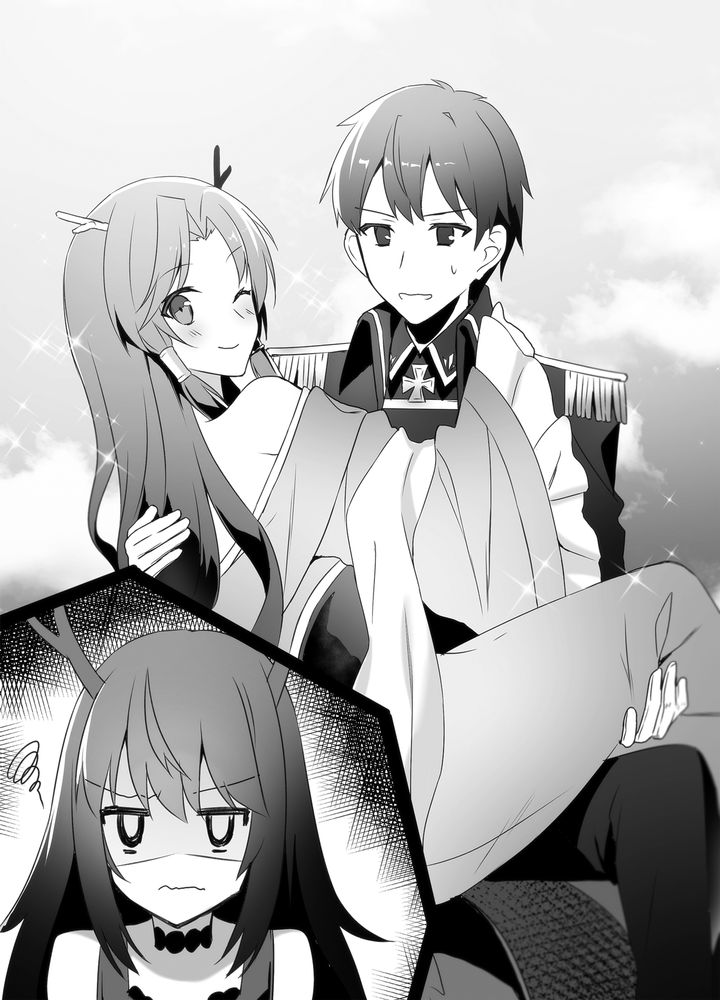
“Well, yeah, I guess we do...” Naden admitted.
“The sea serpent race is said to have been descended from sea serpents that are also called kouryuu or jiaolong, so maybe they were ryuus just like you.”
Yeah, that thought had occurred to me too.
The idea that Juna’s family, the House of Doma, were descended from something vaguely similar to humans like loreleis was one thing, but it had never sat right with me that the descendants of massive sea serpents were shaped like humans. Maybe those kouryuu sea serpents had been ryuus like Naden, and that was why they had human forms.
Excel chuckled and smiled. “Maybe members of the sea serpent race aren’t half-dragons like the dragonewts, but half-ryuus instead.”
“But I’m not meaty and voluptuous like you,” Naden muttered.
“Chalk that up to individual variance.”
“It’s not fair!”
And the two of them started arguing.
One was talking in my head, and the other was sitting on my lap, so it was pretty noisy.
Hal had Ruby in her dragon form come up next to us. “Sorry to interrupt your fun, but it’s almost time for the operation to start.”
“Gotcha,” I said. “Let’s get started then.”
Looking around the area, there were several hundred wyvern cavalry hovering in the air and waiting for my command.
The time was ripe.
I gave the order to the woman sitting on my lap. “Okay, Excel, make it flashy.”
“Understood, sire.”
Erasing the smile from her face and putting on the look of a serious retainer, Excel removed her arms from around my neck, crossed them in front of her, and lowered her head. The speed with which she could change modes was like flipping a switch. It was little wonder she was renowned for how capable she was.
“Now, let we show you my full power, the reason why I was once the talk of Elfrieden, and the reason why I am called the mage who is invincible anywhere there’s lots of fresh water.”
Excel clasped her hands in front of her and focused. As she did, her body tilted, so I hurriedly put my hand around her waist to support her.
As I held her surprisingly delicate hips, Excel giggled. “Thank you, sire. Hold me just like that, if you would.”
“Murgh...” Naden telepathically voiced her displeasure, but this was part of the operation, so she was going to have to deal with it.
Excel closed her eyes, holding her hands tight as if focusing. Then...
Splooooooooooosh!
Suddenly there was a swelling in the surface of the Dabicon directly below us, and five massive pillars that could have been mistaken for high-rise buildings rose up. They were so massive, the sight of them was overwhelming.
The droplets that splashed off the forcibly raised water hung in the air like smoke, and in an instant, we were in the middle of a light shower.
The scene in front of me shocked me silly.
This is Excel...when she gets serious...
It seemed what Excel had said about being invincible anywhere there was a lot of fresh water was no exaggeration. I was guessing the only reason she was limiting it to fresh water was that, at sea, all magic was difficult to use.
Fighting her in a desert would be one thing, but if I had to take on Excel over a river where there was abundant fresh water, I’d have to be prepared to commit all the wyvern cavalry here.
“Souma!” Naden shouted. “Look straight down!”
“Whoa...” Doing as Naden said, I looked down and let out a gasp of admiration.
No river had a fixed width, and a river’s depth varied from place to place. That meant a place where any given river was thin and shallow made for an ideal crossing point.
Basically, that was the area right below us.
That said, the Dabicon was known for being a massive river, so even at a crossing point, the river was about 200 meters across, and the water was up to shoulder-level, even on a large man. It was just barely crossable on horseback.
However, Excel was pulling the water up now. That lowered the water level, making it so we could even see the rocks at the bottom. Excel released her clenched hand, then lifted it up.
“Water God Calling,” she whispered.
With those words, the five massive towers of water took on a shape like snakes with their heads raised. Then, when she brought her hand down, there was a loud hiss, and the five massive snakes of water dove into the surface of the river downstream.
The water from upstream was pulled up, and then flowed to the opposite side of the shallows downstream. This produced five great arches of water.
That caused a great drop in the water level beneath the arch, and the narrow area where it was shallow expanded greatly.
This was the plan Hakuya had come up with.
If the shallows we were going to cross were narrow, and it was difficult to bring a large army to the opposite shore, we could expand the shallows, and have the lizardmen on the opposite side come to us.
Hakuya had concluded that based on the information I’d given him and sent me the number one water mage in the country, Excel Walter, along with many other water mages.
Incidentally, the other water mages were in little boats floating on the river’s surface, slowing the current of the water that would flow from upstream to downstream, and adjusting the current of the water Excel sent downstream so it didn’t flow backward.
Thus, a shallow path across the Dabicon with five great arches of water over it was formed.
I felt like I was watching that one miracle from the story of Moses.
“Hakuya sure came up with an amazing plan...” I sighed in admiration.
“Sire, this magic is extremely taxing, so I would appreciate it if you moved on with the operation,” Excel told me with a pained look on her face.
Whoops. It was such an incredible sight, I had stopped thinking.
I quickly gave the order to an equally astonished Hal. “Hal! Like we planned, have the lizardmen cross at once!”
“Huh?! R-Right! Let’s go, people!” Hal, who had come to his senses, ordered.
“““Yeahhhhhh!””” the wyvern riders around him roared.
Then, with Hal and Ruby the red dragon leading the charge, half of the wyvern cavalry flew to the opposite shore where the lizardmen were.
◇ ◇ ◇
Halbert and Ruby were at the front of the wyvern cavalry as they reached the opposite bank where tens of thousands of lizardmen were camped.
They were flying high enough that no lizardmen attacks came at them, but the countless flying chimera-type monsters attacked Halbert and his team.
Halbert pierced the monsters with his two spears, and Ruby cooked them with her fire.
Hal told the wyvern cavalry, “Listen! Our job here is to act as herders! Now let’s drive those scaly, long-tailed lambs to the opposite bank, like shadow hounds chasing cotton sheep!”
“““Yes, sir!””” the wyvern riders replied quickly and spread out.
Taking out any monsters that crossed their path as they went, the wyverns reached the edge of the lizardman pack and breathed fire toward the ground.
Bompf! Bompf! The flames hit the ground one after another.
“Gugyagyagya!”
The lizardmen pushed and shoved one another to get out of the way of the flames, and the pack was gradually driven toward the Dabicon.
Halbert had Ruby blow flames that were incomparably greater than anything the wyverns could produce and drove the lizardmen into the shallows.
“Haha! My fiancée is vicious! Go on! Run! Run!” Halbert yelled, getting excited.
“Murrgh, that’s not a nice way of saying it,” Ruby grumbled. “You can expect Kaede and me to give you an earful later!”
Roarrrrrrrrrrrr!
Ruby’s roar echoed, and the frightened lizardmen fled blindly across the shallows.
Once a pack began moving in one direction, it wouldn’t change course easily.
Having deemed further pursuit unnecessary, Halbert told the assembled wyvern cavalry, “That should get the pack to go to the other side. We’ll leave enemies on the ground to Ludwin’s main force, while we return to Souma... His Majesty... and exterminate the flying monsters! We’ll support the main force from up in the air!”
“““Yes, sir!”””
Then Halbert and Ruby turned south, along with the wyvern cavalry.
◇ ◇ ◇
The lizardmen on the far shore had started to move.
Looks like Hal and the others pulled it off, I noted.
The lizardmen were crossing the path through the shallows beneath the water arches.
Watching the lizardmen splashing through the shallow water, it reminded me of a nature program I had seen long ago introducing gnus crossing a river.
If this were a nature documentary, this’d be where the crocodiles attack...
Although it was the guys crossing the river in a pack that looked like the crocodiles, in this case.
“Is there any need to let them reach the opposite shore?” Naden, who was watching the same scene, asked. “Around half of the pack is in the river, so wouldn’t it be easy to have Duchess Walter cancel her magic and wash them away?”
“Well, if they were armored soldiers, that’d be the right answer, but they’re buck naked. Washing them away might not kill them, right? If we wash them downstream, it’ll make killing them a pain, so we’ve got to let them cross and then encircle and wipe them out.”
“For my part...I’d like them to hurry up and finish crossing, though,” Excel said with effort, sweat beading on her forehead.
I guess if it came to controlling this much water, even the usually aloof Excel couldn’t keep a cool face. Her teeth were gritted, and her hands were shaking.
“Sorry,” I said. “I need you to hang in there just a little longer.”
“I know.” Excel wore a forced smile as she diligently continued wielding her magic.
Eventually Hal and his group, who had finished their job of driving the lizardmen here, rejoined us, and the entire lizardman pack finished crossing the Dabicon.
“Augh, that was exhausting!” Excel raised both her hands up into the air as if stretching.
Splassssssh!
In the next instant, the water arched over the shallows collapsed, and fell as a solid mass of water.
The great amount of water that fell to earth created a huge splash, and when that splash came down, it rained for a short time over the river.
The riverbed, which we had been able to see for that short time, vanished, waves formed, and the boats of the other water mages that were supporting Excel swayed.
We watched it all while getting soaked by the rain.
“...Should’ve brought a rain gear, I guess,” I said.
“My clothing is my scales, so my clothes are waterproof,” Naden said.
Whatever the case, with the shallows returned to their prior state, the lizardmen’s retreat was cut off.
While I was feeling relieved it all went well, Excel slumped to one side.
“Excel?!” I cried.
When I put my arms around her waist and held her, Excel laughed weakly.
“Ha...ha... I’m fine. I just used too much power.”
She was too exhausted to even form a proper smile, and her shoulders were heaving with every breath. The rain had made it so her clothing clung to her body, which was making her look awfully sensual.
“You did well,” I said. “Leave the rest to us.”
“I’ll do that. Heheh, it’s certainly a perk, having His Majesty hold me like this. Juna would have a fit if she could see us now.”
“That’s a real nice personality you’ve got there.” My shoulders slumped at how much fun Excel seemed to be having.
“Murgh... Maybe I oughta zap her in Juna’s place,” Naden said, sounding peeved.
If she fired off any electric shocks now, while we were both wet, she’d get me too, so I was hoping she wouldn’t.
Well, our role in this was over. The ground unit would handle it from here.
Or so I thought, until...
“Huh?” Suddenly, Naden’s whiskers twitched like a pair of whips.
“What is it?” I asked.
“Mmm... Yeah. There’s something to the west... Hm?”
Naden must not have known what it was herself, because her words were vague.
However, Naden’s sharp senses were apparently picking up something, and I was worried that something outside my predictions was about to happen.
◇ ◇ ◇
When the tens of thousands of lizardmen finished crossing the shallows that Excel had expanded with her magic, they came across the forces of the Kingdom of Friedonia in formation.
Hungry from being unable to feed themselves on the other side of the river, all they saw was a herd of food.
There didn’t seem to be any of those ones that flew in the sky and breathed fire, either.
So, in order to sate their appetites, the lizardmen raced toward the camps of the Kingdom of Friedonia.
Ludwin, the commander-in-chief of the kingdom’s forces, and Julius were watching them as they did.
On top of the small hill where the main camp of the allied forces was, they sat side by side, on top of their horses.
“There must be 50,000, just counting lizardmen,” Julius said. “More if we include the surrounding monsters. What a nuisance.”
Ludwin nodded at this analysis. “I agree. If this were the military of a foreign country, we might struggle, but we won’t come up short against a pack of beasts with no concept of tactics or strategy.”
“Yeah. Let me handle the right wing.”
“You intend to fight after all?” Ludwin asked, concerned. “The people of Lastania have fought enough. It’s all right to let us handle the rest, you know.”
Julius shook his head. “For the people of Lastania, this is a fight to defend their country. If we leave it to the kingdom at the very end, the people of this country won’t be able to consider it their own victory. In order to speed along reconstruction after the war, we must let the people of this country grasp victory with their own hands.”
“Reconstruction after the war...is it?”
Realizing that Julius was setting his eyes on what would come after the fighting, Ludwin was impressed. What he showed was not the perspective of a general who only paid attention to commanding the armies and attaining victory, but a king who thought about the whole country.
Julius hit the hilt of his saber. “I’ve left the conscripts in the fortress, but I’ll have the regular forces and the refugee soldiers fight until the end.”
“I understand,” said Ludwin. “Were my position different, I would want to stand on the front lines too.”
“Wouldn’t that fox-eared second-in-command of yours get angry if you did?”
“Yeah, and that’s why I’ll be staying put in the main camp: to keep young Miss Kaede from getting upset with me,” Ludwin replied jokingly.
That drew a laugh from Julius. “Well then...I suppose we’ll have to settle this before our commander-in-chief gets too impatient.”
“I wouldn’t mind if you left me a piece of the action, you know.”
“Not a chance. I won’t be borrowing your help, I’ll put an end to the lizardman menace personally. Until we meet again.”
Watching Julius depart on horseback, Ludwin let out a sigh.
“Honestly... Fate can be a funny thing,” he said to himself, and then raised his hand up high. “Send the signal to the front line! Intercept the incoming lizardmen!”
Having given the order, the horns sounded.
Hearing the signal from the horns, Kaede stood on top of the watchtower they had built and raised her staff high. She was commanding from near the defensive fence that had been erected in the battlefield camp.
“That’s the signal,” she called. “Everyone, the lizardmen are coming! First, stop the enemy! Everyone, form a wall!”
There were earth mages gathered around Kaede.
When she gave the signal, the earth mages used their magic in unison, the ground swelled up before the front-line unit, and in less than a minute a long earthen wall was built.
For the lizardmen, who had been about to fall on the camp like an avalanche, they found themselves impeded by a dirt wall that suddenly appeared out of nowhere.
“Gueh! Guh...”
Because it was made of dirt, even if they hit it or clawed at it, they could leave a mark, but they couldn’t break through it. They looked around restlessly, but there were no gaps to be found in this wall.
Even so, in order to secure the “food” on the other side of the wall, they began scaling it. They had incredible tenacity, but they were lacking the momentum they’d had before.
“Archers, loose your arrows!” Kaede ordered.
The archers all began firing their arrows over the earthen wall in unison.
The arrows were fired upward in an arc with no particular target, but the high number of arrows and closely clustered state of the lizardmen worked together to cause hit after hit. Some of those arrows were imbued with magic, exploding or cutting up the area around them to create even more dead lizardmen.
Watching that scene from up in the tower, Kaede let out a sigh.
This is completely one-sided. It’s only because the lizardmen don’t have the sense to do anything but charge in on their own that we’re getting off so lightly. I was concerned what might happen if there were a demon here and it took command, but it seems my worries were in vain.
Under Kaede’s command, the front-line unit was able to stop the lizardmen’s advance. However, given the sheer number of lizardmen, they were not able to shoot all of them. Some managed to make it through the hail of arrows to climb the earthen wall. The earth mages were focused on keeping the current wall from breaking, so they didn’t have the leeway to create another wall.
A good number of lizardmen were crossing the wall. It could be anticipated that they would attack the now vulnerable mages and archers.
However, on the other side of the fortification, the lizardmen encountered Aisha, whose power in combat was so overwhelming as to seem unfair.
One silent swing of Aisha’s greatsword was enough to slash several lizardmen who had scaled the wall and were about to land on the other side.
“Gugih?!” The lizardmen let out a death cry as they were cleft in twain.
Having been impeded by an earthen wall, and subjected to the ranged attacks of archers, the lizardmen could only cross the wall in small numbers. To ensure the few who did met with guaranteed death, and to ensure the safety of the long-range attack unit, Kaede had an elite unit on the other side of the wall. The country’s strongest fighter, Aisha, was included in this, of course, but...
“Muh!”
As the top and bottom halves of bisected lizardmen fell to the ground, Aisha effortlessly swung her greatsword to clean the blood from it. Despite having won handily, there seemed to be a dissatisfaction and frustration in her expression.
The cause of that was Jirukoma and Lauren, who were in the same squad as her.
Aisha could see the two of them helping each other as they fought the lizardmen coming over the wall.
“Sir Jirukoma!” shouted Lauren.
Lauren stood in the way of two lizardmen that had tried to attack Jirukoma from behind as he fought, knocking one away with her shield and impaling the other with her sword. When Jirukoma realized he’d been saved, he cut down the lizardman in front of him using his kukri, then stood back-to-back with Lauren.
“Sorry, you saved me there, Madam Lauren.”
“It was nothing. I will protect your back, Sir Jirukoma.”
“Then let me protect yours as well, Madam Lauren. I won’t let you come to harm. I want to have three children with you after all.”
“Fwhuh?”
For a moment, what he’d said didn’t register with Lauren. The moment she realized it was his response to her borderline self-destructive proposal, her face went a bright shade of red. However, she quickly recalled this was a battlefield, and the silly grin on her face was pulled tight.
“Let’s be sure we win this, Sir Jirukoma!” she cried.
“Of course we will!”
Then a lizardman charged at the two of them, possibly in rage.
They readied themselves for it, but before they could do anything, a knife materialized from somewhere and buried itself in the lizardman’s forehead.
The lizardman fell heavily to land face first on the ground.
When they turned back, Komain was looking at them in exasperation, throwing knives between each of her fingers.
“Brother, is that anything to say on the battlefield? Could you have possibly chosen a more inopportune time?”
Jirukoma looked away shyly. “I’m clumsy about these things. If it weren’t a place like this, I don’t think I could ever say it.”
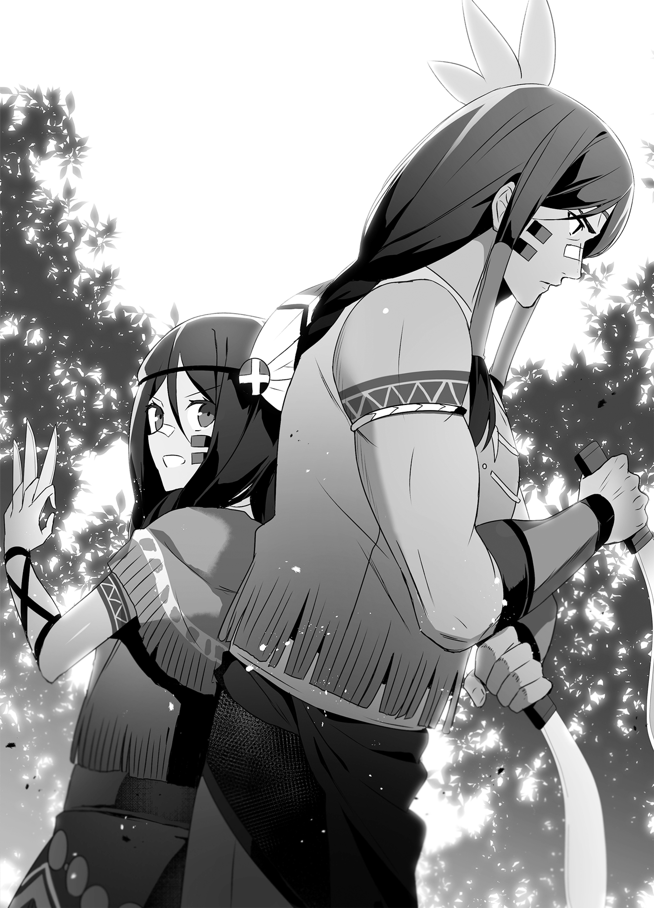
“Honestly... Madam Lauren!” Komain exclaimed. “I know my brother is hopeless, but please take care of him.”
“R-Right! Please, take care of me too!”
“What are you doing here, anyway?” Jirukoma demanded, making sure no lizardmen got close to Komain. “You could have just waited in the fortress with Sir Poncho.”
“I can fight too,” she retorted. “I can’t abandon you when you’re out fighting.”
“But what if you get scarred before you’re able to be wed? Sir Poncho won’t have you like that, you know?”
“Sir Poncho isn’t that narrow-minded... Wait, no, we’re n-not like that!”
Seeing her stammer, Jirukoma and Lauren figured out the situation.
“It would seem there are more things we’ll have to talk about once this battle is over now,” Jirukoma announced.
“Yes,” Lauren agreed. “We absolutely must get through this.”
When the two who were now both her guardians said that, Komain’s face turned a bright shade of red.
Meanwhile, because she was watching the three of them from a distance, Aisha was frustrated. Not because she thought their behavior was inappropriate on the battlefield.
No, this is what Aisha thought:
I’m so jealous of Madam Lauren!
That was all.
I’m working hard because I want His Majesty to praise me too, but His Majesty is up in the air with Madam Naden. I want to fight back-to-back with His Majesty like that!
Souma would have only been a burden fighting beside Aisha, but that didn’t matter. Having actions that were symbolic of two trusting partners shoved in her face, it was only natural she would think, I want that for myself...
Aisha swung her greatsword with frustration in her heart.
I couldn’t sleep with His Majesty because I was the one on guard duty last night too. I’ll slam this frustration into the enemy in front of me!
It had been the same when Souma was forcibly taken to the Star Dragon Mountain Range. When Aisha got agitated because of her feelings for Souma, some sort of limiter inside her broke, and her destructive power went up considerably.
When Souma had left her behind and gone to the Star Dragon Mountain Range, her sadness had turned her into a force that could overwhelm Halbert, Kaede, and Carla all together.
Now, her jealousy toward Jirukoma and the others powered her sword.
I want His Majesty to compliment me too! I want him to adore me! For that, I must end this fight quickly, and go to where His Majesty is!
Following her emotions, Aisha scattered the lizardmen.
The lizardmen were just being made into collateral damage.
◇ ◇ ◇
“Eep?!” I exclaimed.
F-For some reason, a cold shudder was running down my spine, but... I must be imagining it.
“Unahhhhhh!” Naden shouted.
Bzzap!
The electric shocks that Naden threw every which way burned the monsters to a crisp and knocked them from the sky. Naden the black ryuu and I, along with Halbert and Ruby the red dragon, worked with the wyvern cavalry to secure air control and prevent flying monsters from attacking the forces on the ground.
“If you want to die, line up!” Halbert shouted.
Even on Ruby’s back, Halbert was swinging around his two spears, while the rest of the wyvern cavalry was using magic-imbued arrows to attack.
“Everyone’s so flashy...” I murmured.
For my part, I was using a crossbow, firing, reloading, pulling the lever to draw the bowstring, and firing again. Fire, reload, pull the lever. Fire, reload, pull the lever. Fire, reload, pull the lever... It was a repetition of those same tasks. It seemed plain compared to what the others were doing, but I still managed to down three small flying monsters like that.
I peered over the side, looking at the battle unfolding beneath us.
Because of the hard fight that Kaede, Aisha, and the others in the central front-line unit were putting up, the lizardmen that had rushed to the center had lost their momentum.
The left and right wings, seeing their opportunity, were moving to encircle the lizardmen.
This was an extermination battle. If we left any alive, they would only cause trouble later.
Everyone, hang in there...
I prayed for the victory of the soldiers fighting below.
◇ ◇ ◇
The one leading the right wing was Julius.
“Shield bearers, don’t allow any gaps! Spearmen, stay behind the shield bearers and only stab those that charge in! While ensuring you don’t get too far ahead of the group, move up little by little!”
In a normal war, speed was of the essence, and you would deliberately scatter the enemy to disrupt their formation, but this time, exterminating the enemy was the goal. In order to ensure none escaped, they would squeeze the enemy little by little, like strangling them with silk.
A red lizardman leaped, landing on top of a shield bearer. It was the type that breathed fire.
As the red lizardman opened its mouth wide, it took a deep breath, preparing to spew flames at the defenseless soldiers behind the shield bearer.
“I won’t let you!” Julius shouted.
He hit the lizardman in the mouth with the side of his sword, preventing it from inhaling, then kicked it in the belly to get it away from the shield bearer. Next, he placed his hands on the ground, causing countless thorns to grow out of the ground with the magic Gaius had specialized in, cutting the red lizardman to pieces.
“Guh...ruhruh...”
The fire of life vanished from the pincushioned red lizardman’s eyes.
Having confirmed his enemy was dead, Julius raised his voice. “Don’t let them through! Now is the time to put an end to this accursed battle! Crush the enemy completely, and end this battle in a victory for us!”
““Yeahhhhhhh!””
The soldiers of the right wing were fired up.
Meanwhile, around that same time, the master and servant pair from the Republic of Turgis were with the left wing.
“Damn, it’s boring not being able to go out past the guys with shields,” Kuu muttered while clubbing any lizardmen that looked like they might get past the shield bearers with his cudgel.
While drawing her bow and nocking an arrow, Leporina scolded him, “It must be this way, Young Master. We can’t leave any gaps for them to escape.”
Even as she said that, Leporina loosed an arrow and terminated a lizardman. This sort of sniping from a place of safety was Leporina’s specialty.
“If you want to kill enemies, why not take up the bow yourself, Master Kuu?” she went on. “No matter how many I shoot, there never seems to be any less of them, and it’s a real problem.”
“I don’t have your aim, Leporina. Besides...”
A rock one of the lizardmen had picked up and thrown in desperation came flying straight at Leporina. Leporina, who had let her guard down, covered her face with her hands, but before the rock could reach her, Kuu’s cudgel pulverized it.
“You’re a good shot, but you’re so focused that you lose sight of other things,” Kuu continued. “I’ll protect you, since I don’t have much other choice.”
He tapped himself on the shoulder with his cudgel, in front of a wide-eyed Leporina.
Hearing him say he’d protect her, Leporina just barely managed to suppress a smile as she readied her bow. “Normally it’s my duty to protect you, Master Kuu.”
“Ookyakya! Well, hey, it’s fine to change things up once in a while, right?”
“I guess so. It feels kind of nice.”
With that lifting her spirits, a great many lizardman died to Leporina’s arrows.
It would not be until later that Leporina would feel the agonizing shame of knowing that her invincibility here had earned her the nickname of Death Bunnygirl.
◇ ◇ ◇
While the left and right wings ensured the lizardmen didn’t spread out, they gradually narrowed the space between them as they crushed the enemy. Because the center was putting up a hard defense, the lizardmen were unable to escape by moving forward while they were subjected to a pincer attack from the left and right.
If they were to try to retreat, the Dabicon was to their backs, and the shallows had already narrowed.
Water mages in boats were also standing by, using water magic to pierce any lizardmen that tried to cross and preventing their escape.
Huh? I realized while watching, even though they were in a desperate situation, that none of the lizardmen were trying to jump into the river. They were only trying to cross at the shallows.
Can the lizardmen not swim?
The lizardmen had reptilian faces, the rest of their upper bodies were scaly and humanoid, while their lower bodies were like those of carnivorous dinosaurs. Maybe because they were such warped creatures, they couldn’t swim well. Was that why there had been such a traffic jam on the other side of the river?
While watching the lizardmen, a thought occurred to me. Warped creatures... Just what are monsters?
Some creatures were born with unique traits that arose through sudden mutation.
Their entire bodies might be white, or they might have two heads.
But those traits only applied to the individual. Was it possible for such a large number of these warped creatures to occur naturally and form a pack?
I guess thinking about it now doesn’t do much good...
I decided to leave questions with no clear answer for later. For now, I had to focus on what was in front of me.
“Looks like they’ll be done on the ground pretty soon,” I commented.
There was no response.
I looked to Naden for agreement, but she still said nothing.
“Naden?”
“I really do feel something weird to the west,” she said.
Even while fighting, it seemed Naden had her mind on the west.
I looked westward myself, but I saw nothing. Still, ryuus and dragons were sensitive to magic. If Naden said she sensed something, there probably was in fact something out there.
“That weird feeling, is it a bad one?” I asked.
“Hmm... Not bad, more like familiar. But something’s weird about it...”
I heard another voice in my head. “Naden!”
Hal and Ruby pulled up alongside us.
Ruby said, “Hey, Naden, this feeling...”
“You feel it too, Ruby? Isn’t it a bit weird?”
“Yeah. It feels familiar, but different.”
It was somewhat surreal, seeing a black ryuu and a red dragon both cock their heads to the side in confusion.
Hal and I who were both left sitting on their backs, out of the loop, looked at each other with no idea what to make of it.
Then the situation changed, with the ground being affected first.
Caught in a pincer motion by the left and right wings and hit by the concentrated fire of water mages if they tried to flee across the narrow shallows, the lizardmen had their backs to the river and could only wait until they were crushed.
However, they seemed to feel ready to grasp at any straw.
With death before their eyes, their wild instinct for survival awakened. Some began throwing themselves into the river.
Sploosh, sploosh, sploosh!
Once one jumped in, another imitated it.
Their capacity for learning that we had used to teach them to hunt monsters was showing itself in an unpleasant way now.
Once the trend started, there was no stopping it.
The individuals close to the river jumped in one after another.
Like I had suspected, the lizardmen’s physiology made them poor swimmers, and they struggled against the powerful current. If this were a normal war, we could have called this a victory.
However, though this battle was large in scale, it was not a war, it was only the extermination of hazardous beasts.
“That’s...kind of bad, huh?” I said.
It looked like the lizardmen were being washed away, but if they washed up on the shores downstream alive, it would expand the damage and cause problems.
“Hal, can we attack the lizardmen in the river with our forces in the air?!” I called.
“No way! Everyone’s got their hands full with the flying monsters! If we have any of the wyvern cavalry break off from here, you’ll have flying monsters escaping instead!”
“Urgh...”
He was right; the wyvern cavalry was currently engaged in dogfights with the flying monsters. Most of the reinforcement army’s air force was being used for logistics. On top of that, in order to keep it secret, I hadn’t brought any of our best equipment like the Little Susumu Mark V.
It seemed that our limited air power had created a gap.
“Your Majesty, I’ll use my magic again,” Excel suggested from between my arms, but she must have overused her magic. Her face was pale, and it was blatantly obvious she was pushing herself.
“No,” I said. “You’ve already used up everything you’ve got, right?”
“But at this rate...”
“If you die on me, it’ll be a loss for the kingdom. Let’s find another way...”
While I was trying to figure out if there was anything we could do, it happened.
“Souma!” Naden suddenly shouted inside my head. “Look at the sky in the west!”
“Huh...? Wha?!”
When I looked at the western sky as Naden had told me to, I saw over a hundred of these short line-like things floating there. As those lines approached, I realized they were extended wings.
There was a group of large winged creatures flying here in formation.
Wyverns...? No, they were larger than wyverns, and they had front legs. That meant...dragons?!
Then one of the dragons in the formation picked up speed, stopping in front of us in no time. It was a pretty white dragon.
Seeing that dragon, Naden and I both cried out in surprise.
“Pai, is that you?!” I cried.
“So what I was feeling really was you, was it?” Naden called.
That white dragon was Pai Long, Naden’s friend who I had met in the Star Dragon Mountain Range.
Pai the white dragon saw us and gave a little bow. “It’s been a while, King Souma. You too, Naden.”
It really had been a long time.
Naden and Ruby headed over to Pai’s side to ask questions.
“Pai...that’s you, right?” Naden burst out.
“Hehe! Do I look like anyone else?”
“Hmm? I felt you coming, but something seemed different. I dunno, it was different from the Pai I know. Right, Ruby?”
“Yeah,” Ruby agreed. “It’s like it’s you, but not you. That’s how the magic felt.”
“Ahaha!” Pai laughed. “You’re sharp.”
As the three of them were talking, I heard a voice from Pai’s back. “Pai, could you let me greet them too?”
Pai hurriedly went, “Oh, that’s right!” and tilted her head to the side. I could see there was a knight in platinum armor with a full-face helmet riding on her back.
“It’s a pleasure to meet you,” the knight said. “Since you ride on a black dragon with an unusual form, I take it you must be King Souma of the Kingdom of Friedonia.”
“Yes, and you are?”
When the knight removed her helmet, a beautiful woman with very short hair appeared from inside. The woman put her helmet under her arm and saluted me.
“I am a princess of the Nothung Dragon Knight Kingdom and Pai’s knight, Sill Munto. Hearing of our ally the Kingdom of Lastania’s peril, I led 200 of the knights here.”
I feel like there were multiple things to be surprised about just in this introduction.
First, that dragon knights from the Dragon Knight Kingdom had come to support us. It seemed they had already dealt with the demon wave on their end. I guess that was to be expected from the country with dragon knights, the most powerful type of soldier.
Next, that the one who was coming to our aid was a princess. We had our own princesses who wanted to go out and fight themselves, though, so I wasn’t that surprised.
Finally, what surprised me, Naden, and Ruby the most was that Pai’s knight was a woman. I had heard that the contract between dragon and dragon knight was formed for the purpose of creating children. So, in the event that their knight turned out to be a woman, because of the vague nature of biological sex in their species, a dragon would change into a male form to procreate.
In other words...
“Pai, you’re a man now?!” Naden exclaimed in surprise.
“I sure am,” Pai easily confirmed it.
Oh, right. Maybe what Naden and Ruby had said about a familiar presence that felt different somehow had something to do with this.
That made sense... Wait, I had bigger things to worry about now!
“Madam Sill! I know this is sudden, but lend me a hand!” I called.
“Hm, whatever with?”
“We have the lizardman pack cornered, but a number of them have jumped into the river and are trying to escape! I’d like your knights to exterminate them!”
While I explained that as fast as I could, Sill gave me a firm nod.
“Understood. Let’s go, Pai.”
“Okay!”
Sill put her helmet back on, then spurred Pai onward as she returned to her dragon knights.
She raised her sword. “We will exterminate the lizardmen that escaped into the river. Follow me!”
She dove swiftly downward, with the dragon knights following. As the dragon knights flew over the surface of the river, the dragons all breathed fire in unison.
Bwooooooooosh!
The flames spat by the formation of dragons licked the surface of the river as they spread out. Those flames cooked the drifting lizardmen without mercy.
What intense fires those dragons produced. Well, if they had a group of 200 of them that were strong like Ruby, that was to be expected, I guess.
Looking down from the sky, it looked like the Dabicon was burning.
Watching that scene unfold, Naden murmured to herself, “I dunno, it’s all such a shock, my head’s starting to hurt.”
I stroked Naden’s back in silence.
Not long afterward, the ground unit finished exterminating the lizardmen. We could hear the victory cries of the soldiers below us.
We had won.
Though there was that one surprise at the end, this was how the series of battles ended in victory for the allied forces of Friedonia, Lastania, and Nothung.
Chapter 12: The Victory Banquet
It was the night after the day of the combined forces of the Kingdom of Friedonia, the Kingdom of Lastania, and the Nothung Dragon Knight Kingdom exterminating tens of thousands of lizardmen that had attacked as part of the demon wave.
In the fortress near the Dabicon river, there was a banquet being held in honor of today’s victory.
There were large pots prepared in the fortress courtyard and camps, and the soldiers sat in a circle around them, sharing liquor provided by Friedonia and Lastania, and having a jolly good time.
Their excess rations had been set aside for the occasion, but some brave men had heard it was possible to eat monster meat, and they were cooking and eating the remains of some of the more edible-looking ones that had been lying dead outside.
While the soldiers were having a raucous good time outside, we were in a specially prepared dining hall inside the fortress.
Present were me, my fiancées, our close companions, and important figures from all three countries.
The king and queen of Lastania, who had been left behind in Lasta’s castle, were now here, having arrived in a wyvern’s gondola.
Incidentally, for some reason, Princess Tia had already been at the fortress, and she’d surprised me by greeting us with Roroa after our return from battle.
Given the look on Julius’s face like he’d bitten into something unpleasant, I suspected he’d already known about her sneaking in. It seemed she was driving him crazy.
That aside, there were people from Friedonia, Lastania, and Nothung everywhere having pleasant conversations.
Given my position, I figured I ought to go talk to a bunch of them, but...for now, I was stuck with Aisha and couldn’t move around.
At the start of the banquet, Aisha had grabbed my arm tight and made no attempt to let go.
It didn’t bother me that various soft parts of her were pressed up against me, but she was squeezing a little too hard, and I couldn’t move.
“Um, Aisha? Could you loosen your grip a little?” I pleaded.
“I don’t want to.”
...Well, there you have it.
From what I heard, she had been stuck watching Jirukoma and Captain Lauren’s lovey-dovey atmosphere on the battlefield. Just what had those two been doing out there, anyway?
Incidentally, out of consideration for Aisha (or maybe just because dealing with her would be a pain right now) Roroa was with Julius and Princess Tia, and Naden was with Pai, whom she hadn’t seen in a while.
Aisha looked at me with eyes like an abandoned puppy dog. “Um...is this not okay? I did my very best in today’s battle.”
Her eyes clung to me. Seeing those eyes, I finally understood her feelings.
Oh, I see. Aisha wants me to praise her.
She wanted my approval. The sort of approval given from one in a higher position to one in a lower position. (Like from a parent to a child.) The desire for that sort of approval comes from a feeling of wanting that person to indulge you. Aisha wanted me to indulge her.
It might have something to do with the fact that, as I had slept in the same bed as Roroa and Naden last night, she’d been alone outside guarding us.
With my free hand, I patted Aisha on the head. “You really did well, Aisha.”
“Hehe.” Aisha finally showed me a satisfied smile.
Princess Tia’s parents, the king and queen of Lastania, came over and looked at us with smiles.
“You two certainly get along well,” the king said.
“They really do,” the queen agreed. “They’re so innocent.”
Th-They saw, huh? I felt a little embarrassed, but the King of Lastania offered me a bottle of wine.
“Here, Sir Souma, Madam Aisha.”
“Oh, thank you very much,” I said.
“W-We’re much obliged,” Aisha agreed.
We accepted the King of Lastania’s invitation to drink together.
Once four glasses of wine had been poured, we toasted together.
The King of Lastania drank all his wine in one gulp and thanked us with good cheer. “You know, I really am grateful for your reinforcements. If not for the Kingdom of Friedonia’s support, our country might have fallen. In place of my people, I thank you. If I had the martial prowess of one like Sir Julius, I could have fought myself, but I was completely useless...”
“No, you’re being too humble,” I said. “The reason our reinforcements made it in time was because of the hard fight put up by Sir Julius and the people of this country. We only helped a little, at the request of the Empire. In any case, I’ve gotten the sense that the Lastanian royal family are very much loved by the people of this country. I’m sure you were able to provide emotional support to your people.”
I poured more wine into the King of Lastania’s empty glass.
“Dealing with the Demon Lord’s Domain is an issue that concerns our country too,” I went on. “If there are any movements inside the Demon Lord’s Domain, or within the Union of Eastern Nations, please contact us. We’ll do whatever we can to help.”
“Thank you.” The King of Lastania bowed his head with a smile.
My words weren’t just lip service. The Kingdom of Lastania wasn’t just a member of the Union of Eastern Nations; they were allies of the Nothung Dragon Knight Kingdom in the west. They were the perfect go-between in negotiations between our two countries, and I definitely wanted to continue relations with them.
“Still, this certainly is an incredible sight,” the King of Lastania said as he looked around the banquet hall. “Here we have you, Sir Souma, representing the Kingdom of Friedonia, and Madam Sill, a princess of the Nothung Dragon Knight Kingdom. From what I hear, Sir Kuu is also the son of the head of the Republic of Turgis, is he not? That all these young people who will carry the future of this continent are gathered here, in this one small country in a corner of the Union of Eastern Nations... well, it’s a surprise.”
Yeah, he was right, there were almost too many of us here. But...
“The next generation of Lastania is looking like it has a bright future too, isn’t it?” I asked. “You have Sir Julius, Jirukoma, and Captain Lauren after all... Oh! I know this is a bit late, but congratulations on Madam Tia’s marriage.”
“Thank you,” he said. “I am truly glad to have a reliable young man like Sir Julius marry into our family. We knew how Tia felt about him, so there would have been no objection from us, but I would have felt a little hesitant asking someone who was once the crown prince of the Principality of Amidonia to be the king of a much smaller country like this. However, it seems my worries were in vain.”
Smiling as he spoke, the King of Lastania’s eyes were focused on Julius, who was talking with Princess Tia and Roroa, with the same stern look on his face as ever. Still, though Julius’s face was stern, there was no sign of the conversation letting up, so they were getting on well enough in their own way.
While I was thinking about that, the King of Lastania looked at me. “Sir Souma. I have heard there was bad blood between you and Sir Julius. Do those feelings still create a wall between the two of you?”
He was coming right out and asking me that. It seemed this guy was honest by nature.
He was asking purely out of concern for the well-being of Julius, who would become Princess Tia’s husband. Looking at it as the King of Friedonia who had to rule over the Amidonia region, Julius’s existence was a dangerous element. He was worried I might move to eliminate Julius.
I shook my head in silence. “It’s true, there is bad blood between Sir Julius and me. For Julius, I’m the man who killed his father, so the discord between us won’t ever truly go away.”
The king was silent.
“However, if anything were to happen to Sir Julius, Princess Tia would be sad. If Princess Tia were sad, Roroa who likes her would be sad too. I don’t want that. I’m sure Sir Julius doesn’t want to confront me so badly that he would make Princess Tia and Roroa sad by doing it, either.”
The important thing was our desire not to make others sad. That feeling was something Julius and I had in common.
“Even if, at some point in the future, there comes a time when Sir Julius and I have conflicting interests, I am sure both of us will act to avoid war, which would be the worst outcome,” I said.
In other words, we might not be able to be friends, but if possible, we didn’t want to fight. At some point, we had ended up in that awkward sort of relationship.
My words may have reassured him, because the King of Lastania took my hand and smiled with tears in his eyes. “I sincerely hope that our two countries can prosper together.”
Parting company with the Lastanian royal couple, Aisha and I went over to where Naden was. She was talking with Pai and Sill, and Hal, Kaede, and Ruby were next to them.
When we approached, Sill was the first to notice. “Why, Sir Souma! I have heard of your accomplishments in this affair from Madam Naden.”
Saying that, Sill extended her right hand.
Madam Sill was not as dark as a dark elf, but the light brown skin and very short blonde hair of this boyish woman made her quite distinctive. She was probably around twenty. Her exposed arms were slender, but muscular, and she had a body like a track and field athlete.
I took Sill’s hand and shook it firmly. “No, no, I didn’t do anything all that special myself. This victory belongs to the people of this country for the hard fight they put up, and the hard work of each person involved.”
“You are being humble,” Sill said. “You are the one who decided to send reinforcements to this country. I am grateful. Normally, sending reinforcements to this country would have been our duty as their allies, but it took time to resolve the effects of the demon wave in our own lands, and our arrival was delayed.”
The demon wave had affected a wide area after all. Maria was dealing with it in the west too.
“What was the demon wave that hit the Nothung Dragon Knight Kingdom like?” I asked.
“We were attacked by a wide variety of monsters at the same time. None of them were especially strong, and they were easily reduced to cinders, but they were numerous. It was quite a difficult situation. There were so many of them that, from the air, you couldn’t see the ground through all the monsters.”
“That’s...exhausting to even hear about.”
If that many had come all at once, this country wouldn’t have stood a chance. The invading force had only been stopped by the river because it was almost entirely comprised of lizardmen.
“By the way,” I said, “Madam Sill, you and Pai are...”
“Ahh, Sir Souma. I hear you and Pai are acquainted, and you can talk normally together. I have become Pai’s partner. You needn’t use overly formal language with me.”
“Okay,” I said. “You can talk however suits you best too.”
“Oh, great. I hate talking formally. Makes my shoulders stiff.”
Having said that, Sill made a show of turning her right shoulder in circles. It seemed a more masculine tone that suited her boyish looks was the default for her.
A kid in a white jumpsuit-like outfit who was beautiful but androgynous, with beady little eyes, started talking to me. “Long time no see, Souma.”
This was presumably Pai in human form, but he gave off a pretty different impression now than before.
I had heard that until they formed a contract, dragons maintained a more gender-neutral style, and that forming a contract with a male knight would make them more feminine, while forming a contract with a female knight would make them more masculine, but right now Pai was totally an otokonoko.
While my eyes were wide with surprise, Naden cocked her head to the side in confusion. “What’s wrong, Souma?”
“Oh! No... I was just thinking, ‘Wow, Pai really is a guy now.’ The dragon knight contract can change a person this much. I was surprised.”
“Hehe, that’s how we dragons are,” Pai said with a wry smile. “I’ll bet Naden and Ruby have gotten more womanly since their contracts too, right?”
“Hmm? Naden doesn’t look all that different... Hey, Hal, has Ruby changed?” He was nearby, so I figured I’d try asking.
Hal went, “Hmm,” and cocked his head to the side. “Now that you mention it, compared to when we formed the contract, she’s started sticking out more in all the right pla—Ow!”
Ruby stomped on Hal’s foot, and Kaede bopped him on the head with her staff.
Yeah, I know it was my fault for asking, but that lacked delicacy.
Then I realized Naden was touching her own chest. She walked over to Ruby, pressed her hand against her breast, and squeezed.
“Ah!” Ruby yelped, letting out a sexy moan. “Hey, wait?!”
Naden remained silent and fell to her knees on the spot. “Where did this difference come from...?”
The cause of all this, Pai, had an apologetic look on his face. “Ah! Um... I’m sorry...”
Aisha told the dejected Naden, “Don’t worry, you’re just getting started,” but hearing that from the fiancée who stuck out the most in those areas, it was probably only salt in the wound. It was time for a forced change of subject.
“Erm... I get that Pai is a man now, but in this case, the one who gives birth is...” I began.
“Yep, that’ll be me, I guess,” Sill said, puffing up her chest and responding in a matter-of-fact way. “The cost of the dragon knight contract is prosperity for their descendants. I’m human, so the kids’ll be either human or dragonewts, since I can’t give birth to a dragon.”
I had heard from Naden that dragons were born as a large egg, but even the parents didn’t know when it would hatch. It wasn’t possible for a dragon egg to form inside a human body, so it was probably a given that she couldn’t give birth to a dragon.
Sill laughed loudly. “Well, when a dragon births a dragon, the egg has to be deposited in the Star Dragon Mountain Range, so they can’t raise it themselves. Pai might be dissatisfied, but I’m glad that I can definitely raise all of my children with Pai by myself.”
“I’m not dissatisfied. I’m happy I’ll be able to raise our children too,” Pai said bashfully.
He was talking more like a boy now too.
They made an odd couple, a manly woman and a girly otokonoko, but it seemed they got along, so good for them.
Looking at the two of them, I said without thinking, “There sure are some odd dragon knights out there.”
Naden, Hal, and Kaede all jumped in to say, “““Like you’re one to talk?!”””
...They kind of had a point.
Having parted ways with Naden and company, Aisha and I watched Tomoe, Inugami, Kuu, and Leporina having fun talking and laughing as we headed over to see Poncho, Serina, Komain, Jirukoma and Lauren next.
“Sir Poncho,” Lauren said, “what was your first meeting with Madam Komain like?”
“Is my sister doing a good job working for you?” Jirukoma asked.
“Huh? Oh, yes,” said Poncho. “She’s very reliable, yes.”
It seemed Poncho was being interrogated by Lauren and Jirukoma. The result was being watched by Komain with trepidation, and Serina with exasperation.
“What exactly is the situation here?” I asked.
“Why, Your Majesty, I believe it is exactly as it appears,” Serina said matter-of-factly.
I wasn’t sure what she meant...
“So then, Sir Poncho? You’re really not seeing anyone?” Jirukoma asked.
“You’ve become a noble now, so haven’t there been a lot of people who expressed an interest in marrying you?” Lauren demanded.
“Y-Yes, Sir Jirukoma, Madam Lauren. It’s true, there has been a lot of talk like that, but I just don’t seem to have any luck, so I’m not seeing anyone, yes.”
It looked like Jirukoma were trying to drag out the details of Poncho’s love life.
Wait, so Poncho still couldn’t find himself a fiancée? Poncho was a retainer I had hired personally, so he was seen as having a promising future. Because of that, a wide variety of people, from the nobility and knightly class to influential merchants, had seen him about a potential marriage, but...had he really not been able to get an engagement from any of them?
Lauren brought up that question for me. “But from what Lord Jirukoma tells me, you are very popular in the kingdom.”
I figured I could let the fact she was referring to him as Lord Jirukoma instead of Sir Jirukoma now pass without comment. From how Aisha reacted to being around them, I could basically figure out what was up between them for myself.
“Many people respect you for your role in ending the food crisis in Elfrieden and Amidonia, and you’re seen as having a promising future,” Lauren continued. “I have a hard time imagining women would leave you alone, you know?”
Exactly. Poncho was incredibly popular in the Kingdom of Friedonia. In the Amidonia region, he was even being deified as the God of Food. Though that sort of movement could antagonize the Lunarian Orthodox Papal State, so I wish they’d cut it out.
Poncho shook his head vigorously. “Y-You’re giving me too much credit, yes. Maybe it’s the way I look? When they come to discuss a marriage, people turn around and leave as soon as they see me, yes.”
“Huh? They do?” Lauren asked in confusion.
Huh? People were leaving right after seeing Poncho? Sure, he was tubby, but he had a likable face, and he wasn’t the type you’d find unpleasant at first sight. Women had to have seen how tubby he was on broadcast programs anyway, so if it that was enough to make him unbearable for them, they could have just not arranged to meet in the first place.
Besides, Poncho had a promising future. If these were women sent by nobles, who strategic marriages were second nature to, they would turn a blind eye to a certain level of faults and try their best to make Poncho like them.
I didn’t want an opportunist like that becoming Poncho’s wife, of course, so that was why I had Serina with him as his assistant, keeping a watchful eye out.
I looked over at her. “So, tell me the truth, how are Poncho’s marriage meetings going?”
Serina pressed her index finger to her chin and cocked her head to the side. “More or less, as Poncho said. Even the people who come with thoughts of seducing Sir Poncho take off the moment they see his face. It’s quite rude of them, really.”
Serina hadn’t dropped her usual cool expression, but she seemed indignant for some reason. If it was like she said, then it was even more incomprehensible that he couldn’t get an engagement.
While I was thinking that, there was a sudden tug on my sleeve. I turned to see it was Komain.
Komain led me a little way away, then whispered to me. “Listen...I have something to tell you about that...”
Her eyes were wandering, and she spoke timidly.
“Um...it’s about why Sir Poncho can’t find an engagement.”
Then Komain told me about the meetings to discuss an arranged marriage that she had witnessed while in Venetinova. It was true that many offers were coming to Poncho, and many women seemed to mistakenly believe they could seduce him with their pretty faces. However, whenever it came time for the meeting, Serina was standing beside Poncho.
Serina had some shortcomings in terms of personality, but to the eyes, she was a graceful beauty. In front of her beautiful face, those conceited women were beating a hasty retreat.
Even if they could withstand that, whether she was aware of it or not, Serina gave off an incredibly intimidating aura toward those that pursued Poncho, and that scared off even those who were drawn to him with pure intentions.
Komain, who had experienced that intimidation, said it was comparable to that of a wild wolf.
“Serinaaaa...” I muttered.
I held my head. I had told Serina to keep any strange women from getting close to him, but I never expected her to shield him from all marriage opportunities.
“Also...I’m sorry,” Komain confessed in a whisper. “I may have joined Madam Serina in giving off that intimidating aura recently.”
“Huh?! Why would you...”
“That’s because...um...I’m sorry.” Komain’s face was bright red, and her voice vanishingly small.
Seeing her so embarrassed that she wanted to crawl into a hole... I was able to guess the situation.
I scratched my head. “Well, I guess I’m fine if it’s you. Make sure you take responsibility, okay?”
“Do you...think I’ll be able to?”
Komain looked unsure, so I put a hand on her shoulder. “For now, tell him how you feel and talk it over. Poncho is timid and lacks self-confidence, so I doubt he’d ever think someone could have feelings for him. Still, he’s a nice guy, so I’m sure he’ll respond to your affection with sincerity.”
“Y-Yes. I’ll do that.” Komain clenched her fist as she nodded.
From the look of her, she’d be okay. Even if all his other opportunities fell through, I could feel relieved if a reliable girl like Komain would marry him.
If there’s one problem...it’s that Komain’s of common birth.
Though the marriage itself wasn’t an issue, the influential nobles who wanted girls of their blood to be his head wife might get in the way. Komain didn’t have the power to shut them out the way she was now.
I could solve it temporarily by having Komain adopted into an influential noble family, but...that would put Komain herself in the crosshairs, and it would put a burden on her. That meant there was only one measure I could take right now.
“What about Serina? If she’s giving off that intimidating aura, do you think he has a chance with her?” I asked.
Serina came from a good family which had provided maids and servants to the royal house for generations. In terms of lineage, hers was equivalent to the influential nobles. If I made Serina his head wife, I could shut out the influence of other houses.
But...
“Hmm...” Komain cocked her head to the side. “I think there’s something there, but it feels like she’s not aware of it herself. I won’t deny there may have been something like this in my case too, but the reason Madam Serina took an interest in Sir Poncho was because of the delicious food he makes. That’s why I don’t think Madam Serina herself knows if her feelings are romantic, or if it’s merely a result of her hunger.”
“That’s an inconvenient development...” I whispered back.
But thinking about it, the cool Serina had only shown interest in cute girls she could turn her sadistic tendencies on, like Liscia and Carla, before this. The first man she’d shown an interest in was Poncho.
Serina always carried off her work without a hitch, but it might be fair to say she lacked experience in this area.
“How would you feel about Serina being the head wife, Komain?” I asked.
“I... I came after she did, so I’d have no complaints. We’ve gotten closer in the time we’ve been together, and I don’t know the ways of your noble houses, so it would be reassuring to have Madam Serina handle all that.”
There were no problems with it on Komain’s end then. In that case, it was just a matter of Serina’s feelings.
“Sorry, but could you handle Serina for me?” I whispered. “If there’s something between them, I want you to make her more conscious of it.”
“O-Okay. I’ll see what I can do!”
Komain made a strong commitment to helping. I could probably leave this to her.
Still, the relationships between men and women were a strange and complicated thing. I felt like this sort of thing took more thought than simple political negotiations.
Having left the matter of Poncho to Komain for now, I could see Roroa, Julius, and Princess Tia talking, so Aisha and I headed over there.
Roroa and Princess Tia had made fast friends, and they were chatting as happily as two sisters. (They were going to be sisters-in-law soon too.)
Julius was watching the two of them with a peaceful look on his face.
“Oh, darlin’!” Roroa waved her hand vigorously at us, then came over and quickly wrapped herself around the arm opposite the one Aisha was holding. “Ohhh, darlin’. Our Big Sis is just the cutest.”
“Big Sis?” I repeated.
“I told you not to call me Big Sis!” Princess Tia protested. “You’re the older one, Roroa! It’s too much!”
Ohh, she’s the big brother’s fiancée, so that makes her the big sister, huh.
Seeing Tia get upset, Roroa cackled. “Ohh, I was just thinkin’ how refreshin’ it is to have a big sister who’s younger than me.”
“Come to think of it, you call Liscia Big Sis Cia, don’t you?” I asked.
“Sure do. Big Sis Cia, Big Sis Ai, and Big Sis Juna all feel like my big sisters. Nadie feels more like a friend, though.”
“Then you can call me Tii, or something like that,” Princess Tia suggested.
But Roroa said, “Nothin’ doin’,” and shook her head. “I like seein’ my big sis get all embarrassed, so I’m gonna keep callin’ you Big Sis.”
“Augh!”
Unable to watch any longer, Julius intervened by flicking Roroa in the forehead. “Roroa. Don’t tease Tia too much.”
“Ouch!” Roroa bent backward in exaggerated pain.
“L-Lord Julius!” Princess Tia hid behind Julius’s sleeve to hide her face, which was red with embarrassment.
Roroa held her aching forehead as she stuck her tongue out at Julius. “What, Big Brother? We’re just havin’ some good sisterly fun, okay?”
“It’s your fault for being so quick to get carried away. I do think your endless cheer is a virtue, but if you don’t take the time, place, and person you are with into consideration, you’ll only annoy people.”
“Oww... darlin’, Big Sis Ai, my big brother’s bullyin’ me!” Roroa rubbed up against me with a fawning voice.
“No, Julius is totally in the right here, isn’t he?” I said.
“I agree with His Majesty,” Aisha put in.
“You’re stabbin’ me in the back?!”
Roroa made a backward falling motion so exaggerated that if this were a manga, it would be accompanied by a sound effect.
Watching Roroa overreact, Princess Tia giggled, and seeing her smile made Julius’s expression soften a bit too.
Roroa really was amazing. I had agreed with Julius: Roroa’s cheer wasn’t annoying, but rather made everyone around her smile.
The five of us talked together for a while, and then Julius said, “Souma. Could I have a word with you?”
Princess Tia looked worried for a moment, but Roroa clapped her hands down with a smile, she nodded, and they left us alone.
Aisha, Julius, and I left the room where the banquet was being held and moved to a small room.
“Here is fine,” I said.
As we entered the room, my bodyguard Aisha showed some consideration, and waited with her back to the door.
It was probably a position meant to let her listen for eavesdroppers, while still being able to handle Julius immediately if he tried anything funny.
Julius poured wine from the one bottle we had brought with us from the banquet hall into my glass.
Once he was done pouring, I took my turn pouring for Julius.
We raised our glasses together, and said in unison, ““To victory,”” clinking our glasses together.
Once we had drank all the wine in our glasses, Julius smirked. “I’d never have expected a day would come when we would drink together.”
“I could say the same,” I said while pouring fresh drinks. “And it’s a drink celebrating our shared victory too.”
Drinking with Julius...huh.
“Come to think of it, Serina drank you under the table in no time in Van, didn’t she?” I added.
“That’s...a bitter memory. That maid was at the banquet today too, wasn’t she? The moment I saw her, those unpleasant memories came back to me.”
“Hahaha! That head maid of ours is feared by the princess of a nation and the daughter of a former General of the Air Force.”
“...You’re sure she’s just a maid?”
“I’m not sure about that myself sometimes,” I admitted.
We were shooting the breeze about inconsequential things when, suddenly, Julius got a serious look on his face. “I’m really grateful for the reinforcements you brought.”
“I keep getting told that,” I said. “I’ve been thanked enough.”
“Still. If you and Roroa hadn’t come to our aid, I might not have been able to protect Tia. And so, I thank you.” Julius gave a deep bow.
Looking at how different Julius’s attitude was from before, I slapped him on the shoulder with a wry smile. “You say that like everything’s been resolved, but the real difficulties for this country start now, don’t they? You lost more than a few men in the battle up until now, right? Can you recover?”
“We will. We protected the women and children. The population will grow, and we can build a future. Besides, after the war, our population and territory will grow.”
“Your territory too?” I asked.
“In the Union of Eastern Nations, the gain or loss of territory is decided in parliament. There are many lands that lost their lords in the demon wave, so land will be redistributed. When that time comes, those countries that behaved poorly by failing to send several reinforcements proportionate to their nation’s power will be stripped of territory, and countries that distinguished themselves will gain it.”
Hmm... So that was the system in the Union of Eastern Nations, huh. It was like a union of multiple nations, but also like a single feudal state.
Julius smirked. “We have the accomplishment of having held off tens of thousands of lizardmen until reinforcements could arrive. We can expect to be showered with honors after the war.”
“Hey, you’re starting to look like your old self,” I said. “If Princess Tia could see you, wouldn’t that worry her?”
“That wouldn’t be good.” Julius slapped his own cheeks. “Well, fortunately, monster parts sell for a high price. There are lizardman and monster corpses lying around everywhere. The merchants will come to deal in them, so we should have no trouble with finances.”
“Hahaha! Now you’re sounding like Roroa.”
“I am her brother after all.”
“That you are... Oh! That’s right. About the lizardman corpses, do you mind if we take some of them back ourselves? I’d like to do research on them.”
“They’re going to be used to finance the reconstruction, so it would be a problem if you took too many.”
“They’re strictly for research, so two from each general category will be enough.”
“I don’t see a problem with that,” he nodded. “Take what you like.”
The time went by slowly.
Julius looked at the wine in his glass as he spoke. “Now that the Nothung Dragon Knight Kingdom is here, this country will be fine. Souma, what will you do? Pull back to the Kingdom of Friedonia?”
“I’d love to, but...”
Julius put down his glass, glaring in the direction of the door. “Ah! Who goes there?!”
Had he sensed someone? But Aisha, who was by the door, seemed unconcerned.
A folded white piece of paper was slipped under the door.
Having figured out the situation, I put a hand on Julius’s sleeve. “Calm down, Julius. If Aisha isn’t getting ready to fight, it means whoever it was was one of ours. Right?”
Aisha said, “Yes,” with a nod. Then she collected the paper from under the door and passed it to me. “Sire, it’s a report from Kagetora and his people.”
It was a letter from Kagetora, the head of the Black Cats, the secret intelligence unit that reported directly to the king.
I had the Black Cats investigating every nation in the union.
I took the letter and looked through its content then...looked up to the ceiling and let out a sigh.
“Looks like I won’t be going back to the kingdom any time soon...”
I was starting to get the feeling I wouldn’t be able to be there when Liscia gave birth, and it was depressing.
Epilogue: The Friedonian Military, Eastward
The report from Kagetora was regarding the other area seeing heavy fighting as a result of the demon wave, the Duchy of Chima.
The Duchy of Chima was a small country in a region populated with many small and medium-sized states, and it was an old one that had survived through skillful diplomacy.
In this most recent demon wave, the current Duke of Chima had, in a way, used his children as bait to round up reinforcements from around the Union of Eastern Nations.
“For countries which send us reinforcements, in response to your performance, I will give each of you one of my six children, other than my eldest son, who is my heir, to serve as your retainer.”
The Duke of Chima had seven children who each had one special talent, and they were all said to be beautiful.
The eldest daughter, Mutsumi Chima, was a beautiful woman known for her ingenuity and martial ability, so she was particularly sought after.
Hearing that six of the brothers and sisters who were always sought after as retainers or marriage partners were being offered up, many countries sent their armies to assist.
Incidentally, I knew of this through Maria already, but the Kingdom of Lastania, where Julius and Jirukoma were, was in greater peril. The Duchy of Chima had plenty of countries already coming to their aid, so I figured it wouldn’t fall any time soon.
Though I wanted as many capable people as I could recruit, I already had three beautiful warriors just counting my fiancées, so I didn’t bite at the offer of one more. Those, among other reasons, were why we didn’t end up sending reinforcements.
Meanwhile, in case something happened, I sent Kagetora and many of his Black Cats out to gather intelligence.
Now, as for the actual situation in the Duchy of Chima, it didn’t look good, according to what was in Kagetora’s report.
Unlike in the Kingdom of Lastania, there wasn’t a concentration of one type of monster (like the lizardmen); instead a variety of monsters had pressed toward them en masse.
The shallow crossing at the Dabicon River, which was their northern border like in the Kingdom of Lastania, was wider than the one in Lastania, and it didn’t serve to impede the monsters.
It looked like an overwhelming number of monsters had pushed against them in force. If that had happened to the Kingdom of Lastania, they wouldn’t have lasted long. However, like I mentioned earlier, the Duchy of Chima’s unusual methods of diplomacy had gathered reinforcements from all over the Union of Eastern Nations. There were many monsters, but also many soldiers defending, so they were managing to hold the line somehow.
The war had turned into a stalemate where they hadn’t been broken, but couldn’t turn back the invaders, either. That said, if the situation worsened and the line was broken, there would be countries and villages laid waste by the monsters’ southern advance. That would create more refugees like Tomoe’s family, or like the siblings Jirukoma and Komain. That would inevitably influence our country too.
In order to prevent that, Kagetora had written his view that, “We must send reinforcements to the Duchy of Chima, and work with local forces to swiftly exterminate the monsters.”
I adopted that proposal, and I decided that the reinforcements from the Kingdom of Friedonia would advance east to the Duchy of Chima.
The day after the banquet, while the forces of the kingdom made hurried preparations to set out, I was saying my goodbyes to Sill, the princess knight of the Nothung Dragon Knight Kingdom.
“Well then, Sill. We’ll have to excuse ourselves. I leave the rest to you.”
“Yeah. It was only a short time, but I am glad we could fight together, and that we could become acquainted like this. If any remnant lizardmen try to attack this country again, this time, we will handle it as their allies.”
“I’ll be counting on you,” I said. “Come to our kingdom to play sometime too. You’re welcome there.”
“If the opportunity arises, I would be glad to. Sir Souma and Sir Hal, come visit us riding Madam Naden and Madam Ruby sometime too. We welcome those who have dragon partners like us.”
“Sure. Someday, we will.”
We exchanged a firm handshake.
Though the Kingdom of Friedonia and Nothung Dragon Knight Kingdom shared no border, it was easy to form a friendly relationship. Naden, who would be my wife, and Madam Sill’s husband-to-be, Pai, were friends too.
Beside us, Naden, Ruby, and Pai were saying their goodbyes too.
“Later, Naden, Ruby,” Pai said. “Take care, okay?”
“You too, Pai. Take care of your husband...er, I mean wife.”
“Give my regards to Saphie and Emerada too,” Ruby said.
“Sure. Will do. Bye now.”
With Pai waving goodbye, I took Naden and Ruby back to the camp where our companions were waiting for us.
In addition to our major companions, Julius and Princess Tia were there too.
I exchanged some pleasantries with those two, who had come to see us off, then spoke to my companions.
“We will be heading to the Duchy of Chima now, but I’ll be having a number of you return to the kingdom. Roroa, Poncho, Serina, Komain, you need not accompany us any farther.”
I was saying that to these four because there were people related to them in the Kingdom of Lastania. I had only brought Roroa because of Julius, and Komain because of Jirukoma. Poncho, who oversaw logistics, and Serina, his assistant, were supposed to support us from the rear normally, so there had been no need for them to come to the front line. The reason I had forced them to come was to make it easier for Komain, who served under Poncho, to meet her brother Jirukoma.
With the family members having been able to meet, and Julius and Jirukoma’s safety secured, there was less need to bring these four along.
“Roroa, please head back with Excel,” I said.
“Uh, yeah, I’m not sure bringin’ me along’d be much help anyhow.” Roroa seemed a little disappointed, but she accepted she would be returning to the kingdom.
“Poncho and Serina, I want you to continue managing the supply train from the rear. Komain, you can stay in this country for now, but...”
“No, I serve Sir Poncho. I go wherever he goes,” Komain said without the slightest hesitation.
“You’re sure? You haven’t seen your brother in a while, and you could spend some time together...”
She laughed. “It’s fine. The one who needs quality time with my brother right now is Madam Lauren. I’d just be in the way.”
“I guess you have a point.”
Well, if she was fine with it, then it was fine.
“Next, Excel.”
“I’m right here.” Excel came forward quietly and bowed to me.
“You really saved us in the battle at the Dabicon River,” I said. “If you hadn’t come, we’d have had a much harder time putting them down. Thank you.”
“Hehe! I only did what any retainer should. Besides, there were perks, like having you hold me. I think it gives me a nice story to tell the princess and Juna when I get back.” The way Excel said that with a smile gave me a headache.
“It’s fine to tell them what happened, but don’t embellish too much, okay?” I said wearily.
“Hehehe...”
“That aside, you did well. Return to the kingdom and resume your duties protecting the country in my absence.”
“I’d prefer to accompany you, though, sire.” Excel made a sidelong glance in my direction.
Aisha took my right arm, and Roroa took my left, and Naden jumped on my back to try and intimidate Excel.
I sighed. “I’d rather not upset my fiancées any more than they already are, so please, no.”
“Oh, my, I don’t see the harm. You call me the commander-in-chief of the National Defense Force, but all I’m doing is staying in the center of the country and holding down the fort. I could accompany you...”
“That’s enough, Grandmother.”
Turning in the direction of the sudden voice, there stood Juna, who was supposed to be back in the kingdom.
Huh?! Why was Juna here?!
Excel’s eyes were wide too. “Juna? Why are you here?”
“We thought you might drag your feet about coming back to the country, Grandmother, so Sir Hakuya sent me to bring you back. It looks like we were right.”
“Oh, my, you think you can stop me?” Excel shot her a defiant look.
Juna didn’t back off one little bit. “Yes. I’ve brought the ultimate weapon for getting you to come home.”
“An ultimate weapon to use against me, you say?” Excel’s brow twitched.
Juna pulled something from her pocket. It seemed to be a letter in an envelope. It was stamped with the Walter family crest.
“Th-That’s!” Excel was clearly flustered. I had never seen the usually aloof Excel this disturbed before.
Juna smiled and declared to Excel, “If you won’t be a good girl and do as you’re told, I’ll reveal the contents of this letter, you know?”
“Urgh... You win. I’ll comply.” Excel kneeled in front of me and bowed her head. “Well then, sire, I will be returning to the kingdom ahead of you.”
“Uh, yeah...”
I gave an empty response, unable to follow what just happened, and Excel departed as if her stubbornness from before was all a lie.
While everyone was still dumbfounded, I asked Juna, who was the only one smiling, in a small voice, “Um, Juna? What exactly is that letter...?”
“Hehe! It’s a love letter that Grandmother wrote to my grandfather.”
“L-Love letter?!”
“Yes. It’s veeeery syrupy and sweet. I suspect the House of Vargas has something like this in store too, as a measure against Grandmother.”
Ahh, she wouldn’t want that getting out. I could understand it now.
Whew... I’m exhausted...
Excel really was a tempest of a woman. She made all the waves she could, then left.
Well, that was all the people returning to the kingdom decided.
To be honest, I wanted to send Tomoe back too, but depending on the situation in the Duchy of Chima, I might need her ability, so I decided to bring her and her bodyguard Inugami along with us.
When I was finished giving orders, Roroa and I stood in front of Julius and Princess Tia. Julius extended his hand, so I took it firmly.
“Souma,” he said. “You really helped us this time. I’m sorry that this country has nothing to give you as it is now, and we can only offer our words in thanks.”
“No need to worry about it,” I said. “This dispatch of reinforcements was requested by the Empire, anyway. Besides, I was able to forge relations with this country, which is inside the Union of Eastern Nations and has ties to the Nothung Dragon Knight Kingdom. That’s not nothing to show for my efforts.”
“It’s the same for us. We were able to forge friendly relations with the Kingdom of Friedonia after all.” Julius smiled a little. He had the expression of a man who had been set free from his demons.
In the expression of Julius who had broken the bonds of his past and was now looking to the future, I felt like I was seeing the proof that he had grown as a person.
“I don’t want to fight you as you are now, Julius,” I said. “I’ll bet you’d make a far more fearsome enemy than before.”
“I could say the same of you. If I tried to tussle with your country now, I’d have to take on both you and Roroa. That could only be a hassle.”
“If we find ourselves at odds again, I’d like to settle it peacefully next time. How about a drinking contest?”
“I’m sick of alcohol. In a test of arms...there would be too much of a gap. How about a race?”
“Can I use Naden?”
“That’s not fair, and you know it.”
While we were verbally sparing, I noticed Roroa, who was next to me, seemed a bit fidgety. It seemed like she had been able to fit in with Julius and Princess Tia during yesterday’s banquet, but she was still a bit stiff around them when everyone was sober.
Taking her feelings into consideration, I put my hand on her lower back and pushed Roroa forward.
“Eek?!”
“Go on, you say your goodbyes too, Roroa.”
“Y-Yeah...”
Having stepped forward a little awkwardly, Roroa turned to Julius and Tia then saluted.
No, why did she salute there? Was she that tense?
“Well, I’ll be headin’ back now,” Roroa said. “You take care, Big Brother, Big Sis.”
“O-Okay! You take care too, Roroa!”
Whether she was dragged along by Roroa doing it, or it just came naturally, Princess Tia saluted too.
It was a strange scene with two adorable princesses saluting each other.
Julius and I watched over the two of them, wry smiles on both of our faces.
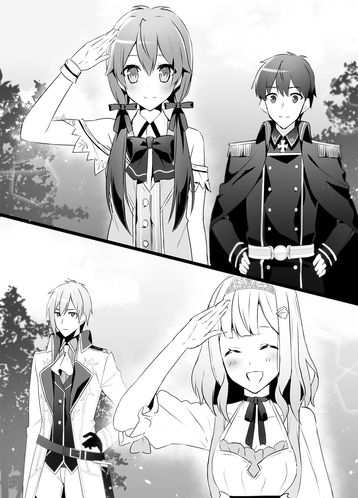
◇ ◇ ◇
It was the same day, at the same time, in the central city of the Duchy of Chima, Wedan.
In this region with many small to medium-sized nations, this city was home to the castle that housed the Duke of Chima, a nation who had used diplomacy to join influential factions and protect their house. It was as solidly built as you would expect. It bordered on mountains to the south, and a river that was connected to the Dabicon to the north.
The historical dukes of Chima would dig in here when attacked by hostile forces, and while repelling enemies in a siege battle, they awaited allied support to overcome the difficult situation.
Because this city backed onto the mountains, the castle of Duke Chima, Wedan Castle, was halfway up a mountain, in a position where it could look down on the city and what lay outside the city walls.
In Friedonian terms, the castle of former General of the Army, Castor, Red Dragon Castle, was the closest comparison in terms of layout.
There was a single child up on the walls of Castle Wedan.
That child, who looked to be about ten years old, sat on the edge of the wall, a piece of charcoal racing across a piece paper on a wooden board. Where the kid was looking now, on the other side of the wall, the armies of the Union of Eastern Nations were fighting with the monsters.
There were so many monsters they seemed to blot out the earth. However, Duke Chima’s unusual diplomacy had gathered many reinforcements, and they had somehow lasted through the enemy’s offensive.
There were many sounds coming from the battlefield. There was the sound of metal striking metal, the sound of magic exploding, the sound of monsters roaring, the soldier’s battle cries. Those sounds were all reaching this castle.
In the middle of those sounds, the kid silently kept dragging charcoal across the paper.
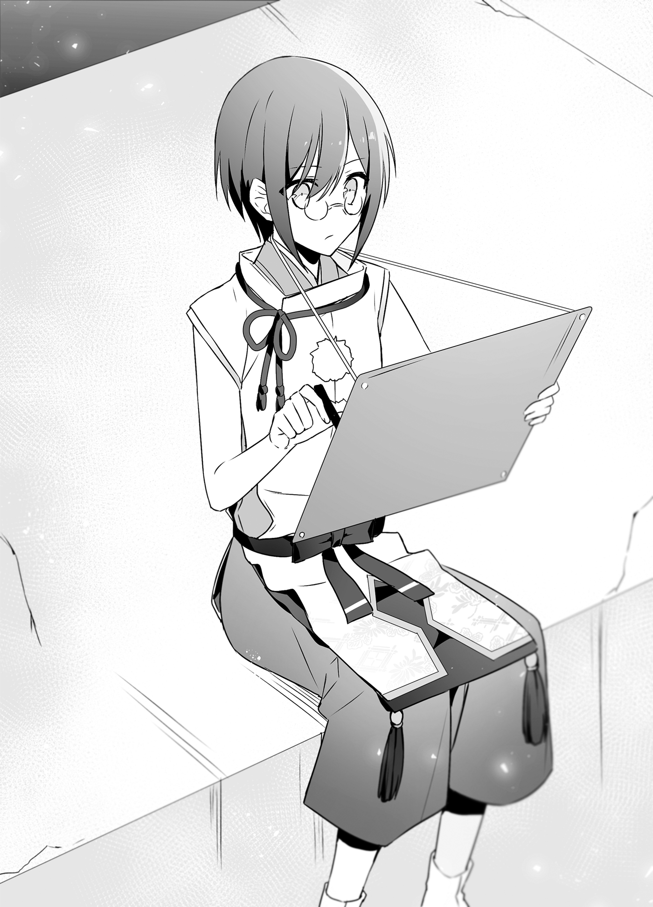
“You’re drawing again, Ichiha?” Turning to the sudden voice, there was a beautiful girl of about twenty years of age with black hair going down to her waist standing there.
The woman wore an outfit that was like a hakama, and she gave off an impression like a traditional Japanese beauty, but she wore leather armor over that outfit and carried a longsword over her back.
When the kid saw her, he narrowed his eyes. “Mutsumi?”
The beautiful, strong woman was Mutsumi Chima, the eldest daughter of the current Duke of Chima, and the kid was the youngest of her five brothers, Ichiha Chima.
Ichiha cocked his head to the side. “You didn’t go to the battlefield today?”
“Yeah,” she said. “Father insisted I not let the lords see what a tomboy I am. I’m staying home today, since I have no other choice.”
Seeing how dissatisfied Mutsumi looked, Ichiha giggled. “I can’t blame him. The lords out there are fighting because they want you to come be their wife.”
The Duke of Chima had sent a notice saying, “For countries which send us reinforcements, in response to your performance, I will give each of you one of my six children, other than my eldest son, who is my heir, to serve as your retainer,” to every country in the Union of Eastern Nations.
This was a strategy the old and wise Duke Chima was using to save his own country, also positioning his sons and daughters into powerful factions that could be effective on the battlefield.
He said he’d offer them as retainers, but the boys and girls of House Chima were well-known to be beautiful. If they would accept, a marriage could be arranged for them to go to any country as a bride or groom. If that happened, Duke Chima would become a relative of many influential powers, so it would be all he could ask for.
Of all the Chima brothers and sisters, Mutsumi was the most popular.
With her excellent ingenuity and martial ability, the lords were fighting to distinguish themselves on the battlefield in order to make her their wife, or their son’s.
While watching the battlefield, Ichiha asked Mutsumi, “I’m sure that whoever is fighting the best out there is going to say they want you to be their bride. How do you feel about that?”
Mutsumi’s answer was very simple. “It doesn’t matter to me. I like people with power after all. I’m fine if it’s someone who is personally strong. Or someone who can upend the battlefield with their ingenuity. Someone who can command a lot of soldiers would be fine too. Whoever they are, I want to watch someone whose name can make the world tremble from the closest spot to them. If I could marry someone like that, that would be the best.” Her words became tinged with glee.
Sensing the words came from her heart, Ichiha smiled wryly. “Is that how it works...?”
Mutsumi mussed her little brother’s hair. “You’ve become a good man too. Instead of just staying here drawing pictures, why don’t you work out?”
“Don’t ask for the impossible. My body is weak.”
Ichiha had been born with a body that was not naturally strong.
He often grew sick at the change of seasons, when temperatures changed most, and would be confined to his bed. Because of that, he didn’t practice martial arts like his elder brothers, instead staying cooped up in his room reading, drawing pictures as a hobby, and becoming more and more introverted.
He said, “Besides, the world has forgotten I exist.”
She was silent.
It was said that the House of Chima had seven highly capable brothers and sisters.
Hashim (Age 25) — Eldest Son: An excellent politician.
Nata (Age 22) — Second Son: Muscular man who wielded a giant ax.
Mutsumi (Age 20) — Eldest Daughter: Really beautiful, with excellent martial abilities and ingenuity.
Gauche (Age 18) — Third Son: The best archer in the world.
Yomi (Age 17) — Second Daughter: Elder twin sister, excellent mage.
Sami (Age 17) — Third Daughter: Younger twin sister, also an excellent mage.
Nike (Age 16) — Fourth Son: Beautiful boy. His spear moved faster than the eye can follow.
This was how the seven of them were known, but Ichiha Chima, the fifth son who had just turned ten this year, was not included among the capable brothers and sisters.
He had the same regular features as his older brothers, but he was still a kid, the scrawny, sickly introvert who was always drawing pictures, so he was not known throughout the world.
Naturally, he was not included as one of the rewards offered by Duke Chima.
Mutsumi was at a momentary loss for what to say, but she forced a cheerful smile, and slapped Ichiha on the back.
That sudden hit made Ichiha’s head arch backward. “Wh-What would you do if I fell?!”
“I didn’t hit you that hard. You were feeling down, so I did that to put some spirit in you.”
“Urgh...”
Then Mutsumi hugged Ichiha from behind, whispering in his ear, “You don’t need to worry. I’m sure you’ll be a great person one day.”
“...On what basis?”
“A woman’s intuition. I feel like, out of all us brothers and sisters, you’re the only one who’s seeing something else. That goes for what you’re drawing now, too. I think you probably have something the rest of us would never think of.”
“Something...? I don’t think I have anything.”
Ichiha was sulking, but Mutsumi smiled at him. “Well, of course you don’t. The hardest thing to see is yourself. So... Ichiha, get more involved with other people. I’m sure it will be one of them who realizes your true value.”
Ichiha still looked sulky, but he took Mutsumi’s words about involving himself with others to heart.
Afterword
Thank you for buying volume 8 of Realist Hero. This is Dojyomaru, who is relieved to be writing the afterword in the place an afterword belongs.
This volume mainly focused on the battles in the Kingdom of Lastania, which makes up the first half of the Union of Eastern Nations Arc.
It’s also where their former enemy, Julius, makes his reappearance. He’s grown a lot as a person after getting seriously beaten by Souma, Hakuya, and Roroa.
This is probably a matter of taste, but I’m not fond of having the same character show up as a weak villain over and over. Personally, when a person suffers a defeat, or makes a major mistake, I want them to use that to really grow up. As humans, we have a lot to learn from our mistakes after all. I know I’ve made my share of them...
That’s why the story is structured to allow Hal, Castor, Ruby, and Julius, the members of the cast who’ve messed up, to grow a lot.
I’d like for them to become characters people love.
I am often asked, “Does Souma consider the battle in the Union of Eastern Nations a war?” The answer is no. It’s purely the removal of dangerous beasts, so it doesn’t count as a war.
Now then, I give my thanks to the illustrator Fuyuyuki, to Satoshi Ueda for the manga adaptation, to my editor, the designers, the proofreaders, and everyone who now holds this book in their hands.
This has been Dojyomaru.
Bonus Short Stories
Liscia and Cookies
Mix, mix, mix...
Liscia was mixing a bowlful of batter with a spatula.
This was the kitchen of the former king and queen’s home. Liscia was pregnant with Souma’s child, so she’d chosen her father Albert’s old domain as a place to rest. While she was resting there, in order to become a better mother to the children that were on the way, Liscia was learning to cook from her mother Elisha.
At the moment, she was applying what she had learned to make cookies on her own.
“Liscia?!” Carla cried out in surprise when she came in and saw her. “Wh-What do you think you’re doing?! Cooking alone!”
“Practicing, that’s what. I need to be able to cook alone, don’t I?”
“Don’t give me that!” Carla strode over to Liscia and pointed at her belly. “Look at that belly! What if something happened?!”
Liscia was six months pregnant, and her belly had grown to the point that it was readily apparent she was with child. Having Liscia, who was bother her master and friend, standing alone in the kitchen with a belly like that, Carla was clearly beside herself with worry.
“If you had a fall when no one was around to see...” Carla began.
“Geez... No need to be so dramatic, Carla.” Liscia put a hand on her hip with a wry smile. “Doctor Hilde was saying that if I kept moving around up until the birth it would make it easier on me. This much exercise shouldn’t be any problem.”
“The problem is that you’re doing it where no one can see you! Keep someone with you at all times, in case the unthinkable should happen! I mean, you can just call me!”
“...Sorry, Carla.” Seeing the tears in Carla’s eyes as she pleaded with her, Liscia gave her a heartfelt apology. Carla was getting angry for her sake. Given how often she had scolded Souma out of concern for his well-being, Liscia could relate. “I’ll reflect on what you said, but... there’s a reason I didn’t want to call you.”
“Why?!”
“Come on, Carla, we both know you’re improving faster than I am.” Liscia puffed up her cheeks and started mixing the batter again. “We started learning from Mother at the same time, but you’re better than me. You’ve always been just as much of a tomboy as me, so it feels kind of unfair.”
“I-I’m not sure what to tell you...” Carla faltered.
Carla’s duties here were to look after and protect Liscia. That said, her duties as a maid were already being done by the servants here, and Souma had the Black Cats keeping a thorough watch on the area around the mansion, so there was no need to be on constant guard. Basically, all that was left for Carla to do was to give Liscia someone to talk to.
When she heard Elisha would be teaching Liscia to cook, Carla had decided to learn, too, for lack of anything better to do. It was a skill it wouldn’t hurt to have, she figured. But once she tried it, it turned out Carla had a surprising knack for this sort of housework, and she improved rapidly. To the point Liscia that was jealous.
“Hey, they say cooking is all about love, right?” Carla said, trying to mollify her friend in a hurry. “I’m sure that since you have a husband you love, and kids on the way, you’ll get better than someone with no partner like me.”
“...By that logic, shouldn’t I be getting better faster than you?”
“Ah! Er...”
While Carla was trying to figure out how to respond, Liscia let out a sigh.
“Whatever. We know I have no sense for housework. But I’ll work hard so that, someday, I can bake delicious treats for Souma and the kids!”
Watching her friend work herself up, Carla scratched her cheek. “That’s a fine thing to aspire to, but why limit yourself to sweets?”
“Well, Souma’s good at all kinds of cooking. I want to be able to beat him at one thing, at least.”
“You’ve set a kind of low bar for yourself... Hold on, Liscia.”
“What?”
“Haven’t you mixed the batter too much? Elisha was saying if you mix it too much, it’ll be hard when cooked...”
“Ah!” Liscia looked down at her bowl of batter. She’d been mixing it the whole time they’d been talking.
She tried cooking the batter anyway to see how it was, but...
“They’re so hard...” she mourned.
“And overly sweet, too,” Carla said.
It seemed she had put in too much sugar, so the cookies had come out both hard and excessively sweet. Liscia rested her elbows on the table with her face on top of her hands. “How am I so bad at this...?”
“W-Well, if you dunk them in tea until they’re soggy, they’re edible, at least.”
“That’s not how you eat cookies.”
Still, it would be a waste not to eat what she had made, so they slowly ate them little by little using the suggested method. It was an odd tea time.
“By the way, Carla, didn’t you come because you had some business with me?” Liscia asked.
“Oh! That’s right. We received word from the castle that the master will be coming tomorrow.”
“Souma will?” Liscia perked up. She hadn’t been able to see Souma in an awfully long time.
Liscia had come here soon after Souma left for the republic, and since his return, she heard he had been spending his time buried in work. That was why she was pleased to be able to see him. Still, the timing of it made her feel uneasy.
“I’m happy to see him, but...”
“Huh? Why do you look so unhappy?” Carla asked.
“I know how busy Souma is. If he’s coming so suddenly, he must have something important to tell me.” Liscia bit into one of the hard cookies, then looked at it. “Does he need to go abroad again? Is he pushing himself too hard again? Honestly, I wish he wouldn’t worry me so much.”
“Liscia...”
“If he worries me again, I’m going to make him eat these failed cookies.”
Liscia giggled to herself, imagining the look on Souma’s face was he tasted her botched batch of cookies.
Roroa and Tia’s Girls’ Talk
Around the time when Souma, Julius and the rest were executing their plan to liberate Lasta, Roroa was in Tia’s room in the castle, the two of them waiting for the men’s return.
This time it wasn’t a siege battle, but a sally to exterminate the lizardmen in the area around Lasta. It was therefore expected that the lizardmen and chimera monsters wouldn’t come over the walls, but the non-combatants were holed up in the castle for safety’s sake.
Perhaps Tia, who was sitting beside Roroa, was feeling uneasy, because her hands were clasped in front of her chest as if she were praying.
She must be thinkin’ about my brother, Roroa thought as she looked over.
The two of them were alone in this room. Roroa found it suffocating to share a room with someone who spent the whole time looking so pathetic.
Roroa was concerned for Souma, too, of course, but acting glum here wasn’t going to change the outcome, now was it? Even if she wasn’t confident, a cheery smile would bring in good luck and customers. That was Roroa’s view as a hardy merchant.
That was why Roroa, the older little sister (to be), didn’t want Tia looking like that.
“Hey, hey, Big Sister.”
“...Ah! What is it, Lady Roroa?” Tia raised her head. She must have been pretty out of it, because her response was delayed.
Roroa smiled wryly. “What made ya fall for my brother anyhow?”
“Wh-What’s this? Out of nowhere...”
“I was thinkin’ I oughta ask, since you’re gonna be my sister-in-law.”
Tia’s eyes went wide. “Is this really the time?!”
Roroa cackled. “Now’s precisely the time! Us lookin’ all glum ain’t gonna do anyone a lick of good, now is it? I’ve got ya all to myself, so I wanna ask you what my brother’s like now.”
“...Okay. Um... What do you want to ask?”
“All righty then. First off, how about your first impression of him?”
Tia tilted her head to the side. “My first impression of Sir Julius?”
“Yep. The big brother I knew was clever, but his eyes were cold. He didn’t hesitate to do what he had to when it came to achievin’ his goals. That’s why, when I came to this country... I was surprised by the mighty calm look on his face. It was nothin’ like the image I had of my brother.”
“It was?”
“You bet. That’s why I wanna hear your first impression of him. What was my brother like when he first came to this country?”
“Well... I thought he was a cool guy, at first.” Tia let out a little squeal and covered her cheeks as she spoke. It seemed she’d started by immediately fawning over him.
Roroa said, “Yeah, yeah,” a little exasperated. “My brother’s got a handsome face, after all.”
“But I didn’t have the impression he was a cold man back then, either, you know? He didn’t smile, but... it was like he always had something difficult on his mind.”
“He did?”
Tia couldn’t have known this, but after Julius’s defeat by Souma and exile from his country by Roroa, he had gone to the Empire for shelter. If Souma had mismanaged the Principality of Amidonia and gotten resentment building against him, Julius had been preparing to incite the people into an uprising and drive Souma and Roroa’s forces out to restore the principality.
However, because Souma had ended up living happily with Roroa, the nation’s princess, and used broadcast programs to embrace the people of Amidonia and win them to his side, no such resentment arose. Finding no inciting spark, and Julius’s hopes of restoring the principality had been dashed.
Leaving the Empire in disappointment, he had wandered from country to country as he thought. Why had he lost? And why did the people support not Gaius and him, but Souma?
It was during this time that Tia had met Julius.
Tia spoke with fond memories of that period in Julius’s life. “He was hard to approach, at first. But he was caring, I think you could say. When the monsters attacked from the north, and when my father had political troubles, he helped, even if he grumbled as he did it. ‘You’re so inept, I can’t bear to just watch,’ he’d say.”
“I’m pretty sure that’s exactly how my brother felt,” Roroa declared confidently. Julius was obsessive by nature. If he had to leave something to a less competent person, he’d rather do things himself.
Tia must have realized that, too, because she smiled wryly. “You may be right. However, when I saw him quickly handle things the right way, he looked so very reliable to all of us. We ended up relying on him, and even though he grumbled, he responded to our faith in him, making us rely on him more. The end result was that Julius became the most reliable person in this country.”
“I see. So reliable ya fell for him, huh?”
“Um... yes,” Tia responded with a nod, blushing.
“I think I can see it now...”
Hearing Tia tell the story, Roroa felt like she could understand how Julius had come to be the person he was now.
The soothing effect of the kindness of this girl who would be her big sister naturally had an effect. But in addition to that, Julius’s desire to win the trust of the people in this country, after having been rejected and run out by the people of his own, may have been a major contributor, too. He had responded to the hopes of those who placed their trust in him, and their acceptance had allowed Julius to regain his lost confidence.
I’ll bet that’s why he’s able to smile so softly. Roroa was satisfied with that answer.
Tia took her hand. “I answered your question, Lady Roroa, so now you answer mine. What was your first meeting with Sir Souma like?”
“You wanna hear it?” Roroa said to the eagerly listening Tia with a wry grin. “We had us a real odd first meeting. See, first I got myself a carpet, and...”
“Huh? A carpet?”
Roroa went on, passionately relating the story, until a soldier rushed into the castle and interrupted.
“Reporting! Our forces have exterminated the lizardmen! We are victorious!”
Hearing that report, Roroa and Tia hugged each other in glee.
Hakuya Crafts a Plan
While Souma and the others were planning out the liberation of Lasta...
In distant Parnam Castle in the Kingdom of Friedonia, Hakuya the Black-robed Prime Minister was talking to Jeanne the Little Sister General of the Empire over the Jewel Voice Broadcast. The main topic was the demon wave, of course. By sharing intel between the kingdom and Empire, they were secretly coordinating their efforts.
“According to the letter I received from His Majesty, it was going to take a long time to move the entire force, so he led an advance party and entered Lasta, the capital of the Kingdom of Lastania,” Hakuya said.
“Huh? King Souma led the advance party himself?” Jeanne’s eyes went wide with surprise.
Souma was cautious, well aware of his lack of ability in combat, and not the type to act so boldly. As Jeanne looked bewildered by the divorce between her image of the man and his current actions, Hakuya let out an exhausted sigh.
“I know that His Majesty wouldn’t usually act with such rashness, but he has a way of not assessing the situation on a cost/benefit basis when family is involved.”
“...I see. If I recall, Madam Roroa’s elder brother Julius was in the Kingdom of Lastania, wasn’t he?”
“Yes, Sir Julius is. His Majesty must have judged that, even though they’ve parted ways, if anything were to happen to Sir Julius, Lady Roroa would be distraught.” Hakuya shrugged in exasperation. He looked favorably on Souma’s sentimentality, but as Prime Minister, he wished the king would show a little self-restraint. “Well, it does seem His Majesty’s recklessness kept Lasta from falling.”
“That’s good to hear. My sister will be pleased to know there are fewer people suffering out there,” Jeanne said.
Indeed. There was a reason Maria was known as a saint. The more victims there were, the heavier it would weigh on her heart.
Hakuya nodded. “If we leave assume we can leave Lasta to His Majesty, we still have to think how the main body of the reinforcements will act. Fortunately, I have a detailed report from His Majesty on the state of things.”
Hakuya spread a hand-drawn map of the crossing point on the Dabicon River out across the table.
“There are tens of thousands of monsters such as lizardmen on the opposite shore of the Dabicon. Unless they are exterminated, Lasta will not be fully safe. The enemy that the reinforcements sent by Friedonia’s National Defense Force will face is likely those monsters.”
“They can only cross at this shallow point in small groups, right?” Jeanne remarked, looking at the map that she could see through the broadcast.
“Yes. Thanks to that, they were able to defend Lasta, but now that we are the ones trying to attack, it makes it quite difficult. We are also in the position of only being able to send our ground forces across in small parties.”
“Why not bombard them with air forces?”
“If we do that, the monsters will scatter. ‘I’d like to find some way to encircle and exterminate them,’ was the request from His Majesty.”
“That’s a tall order. If the situation were reversed, things would be easy, though.”
“What do you mean, reversed?” Hakuya asked.
Jeanne nodded. “If instead of being on the other side, they had their backs to the river on this side, encircling and exterminating them would be a simple matter. If their only retreat was across the shallows, they wouldn’t be able to flee so easily.”
“I see. So that’s what you meant.”
Satisfied by her response, Hakuya looked back to the map. It was true; if the monsters were on the near shore, not the far one, encircling and exterminating them would be a simple matter. However, that was not the reality they had been presented with...
Hm? Then can we not simply create that situation?
They could bring the monsters to the near side... in other words, have them all cross at once. Hakuya’s mind raced to find a way of accomplishing that.
“Um... Sir Hakuya?” Jeanne asked, looking concerned by his sudden silence.
Hakuya gave no response, as he was deep in thought. After a lengthy silence, he finally raised his face.
“I think I have something workable.”
“It looks like you’ve come up with something,” Jeanne said.
Hakuya realized he’d been leaving her out. He hurriedly bowed his head in apology. “I’m sorry. I got lost in thought there.”
She smiled. “Oh, no, don’t mind me. More importantly, what was the idea you came up with?”
Hakuya cleared his throat before explaining. “If exterminating them on the far side is going to be difficult, we only need to have them cross to the near side. I believe we can borrow the power of a certain esteemed woman in our nation to accomplish that.”
After Hakuya laid out the outline of the operation, Jeanne voiced her admiration. “I see! I think that’s a fine plan.”
“The problem is... can we keep Duchess Walter under control?”
“Hm? Duchess Walter is famous in our country, too. Is there some issue with her?”
“No, I’m sure she’ll lend us her strength if we ask her to,” Hakuya sighed. “The issue is what will happen afterward. She can be a person of quite unusual tastes, and it’s questionable whether she’ll come back quietly when the situation is resolved. If she decides accompanying His Majesty would be amusing, she may throw a tantrum, saying she doesn’t want to come back.”
“Sh-She sounds like quite a pain in the neck...”
“She is very reliable, though...”
With Jeanne giving him a concerned look, Hakuya let out a sigh.
I believe I will consult her relative Juna, just to be safe, Hakuya thought to himself. She might be able to come up with some countermeasures.
After that, Hakuya and Jeanne exchanged a great deal of information. Normally, after a meeting they would enjoy tea or liquor together while grumbling about their respective masters, but this time they each had matters they needed to act on immediately.
“I’d love to keep talking, but...” Jeanne said, her disappointment apparent, and Hakuya nodded.
“As would I. But... right now, let us each do what we must. To bring back peace even a day sooner. Then, when that time comes...”
“Yes. Let’s talk all about it. I have plenty more complaints about my sister I’d like you to hear, Sir Hakuya.”
“I am not entirely sure whether I should be looking forward to that or not...”
Then the two of them looked at each other and nodded, each with a wish for the other’s success.
They hoped for the day when they could talk again to come soon.
The Reason Taru Makes Leporina Stronger
The day before Friedonian reinforcements set out for the Union of Eastern Nations.
Kuu and Leporina, the servant and master duo from Turgis, had come to Taru’s workshop. They would be joining the reinforcements, so they wanted to come let Taru know they wouldn’t be seeing each other for a while.
“So, there you have it,” Kuu said. “We’re going to the Union of Eastern Nations with Bro since they’re being hit by the demon wave. Oh, don’t you try to stop me, Taru. I’ll be back safe and sound. Until then, so long for now!”
Kuu was making a big show of saying goodbye to Taru, but as for Taru herself...
“Leporina, raise your arms.”
“Okay.”
She was putting a new breastplate on Leporina, and wasn’t hearing a word of it.
“Leporina, your breasts have grown a little again. If you don’t wear something that’s the right size for you, it will just be hard to breathe. It hurts your performance, too.”
“Hey, could you not say that in front of the Young Master?!” Leporina exclaimed.
“It serves you right,” Taru muttered.
“Taru?!”
While the two girls were having that exchange, Kuu looked on with disinterest. “Hey, Taru. I came all this way to say goodbye, so could you maybe pay me a little more attention? I’m getting lonely here.”
“Dumb Master,” Taru said in a lovingly syrupy tone, “getting Leporina’s equipment taken care of is my first priority right now.”
Taru didn’t so much as look at him as she said it. Then she went deeper into the workshop to fetch some arrows.
“I made the arrowheads myself,” she told the other woman, emerging. “I’ve asked enchantment artisans to strengthen them for me.”
“Wow, they came out great!” Leporina sighed in admiration as she looked at the arrowheads.
Kuu, who was primarily an up-close fighter, wouldn’t have understood this, but those arrows were so well made any archer would fall in love with them.
Taru puffed up her practically non-existent chest with pride. “With these, you can pierce monster shells and carapaces with ease. Take as many as you can carry.”
“Thank you, Taru!”
Seeing how happy Leporina was, Kuu was not amused.
“Hey, don’t just help Leporina! Make some equipment for me, too!”
“I made the cudgel exactly as you ordered it, Dumb Master,” Taru said coldly.
“It’s been a while since you made it, you know? You’re always making weapons and equipment for Leporina, but I get nothing?”
“Leporina comes before you, Dumb Master.”
“Why?!”
“Because.”
Taru went back to working on Leporina’s equipment without engaging further. Kuu slumped his shoulders, dejectedly drawing swirls on the bare ground of the workshop with his cudgel.
Seeing the exchange between the two of them, Leporina could only smile wryly. Whenever Taru makes my equipment stronger, it’s for the young master’s sake, though...
Leporina was Kuu’s servant. If it came to it, she had to protect Kuu, even if that meant sacrificing herself. Kuu was the son of the republic’s head of state. He was expected to become head of state himself in future, too. He might be shortsighted in some ways, but Kuu drew everyone to himself, and the people of the republic had great hopes for him. Even if it cost her life, defending him was Leporina’s duty.
Young Master... that’s why Taru makes me stronger. Because she never wants to let you die, she is making me strong enough to protect you, no matter what.
That was what Leporina thought as she watched Taru seriously work on getting her equipment in order.
Mind you, if she’d let those feeling show even a little, I think it would make the young master happy... but Taru is every bit as stubborn as he is.
That said, even knowing that, Leporina did nothing to tell Kuu. If she did, in the end, Kuu would only pay more attention to Taru. When she considered her own feelings for him, that was undesirable.
I hope you’ll forgive me for being a little mean about this.
Leporina considered Taru a valued friend. That’s why, though she wouldn’t convey those emotions to Kuu, she was determined to do everything else she could to grant the wish behind them.
When Taru came to remove the breastplate for Leporina, Leporina whispered in her ear, “I swear I’ll defend Master Kuu with the equipment you’ve made.”
Taru blinked and opened her eyes wide, nodding. “...Yeah. I trust you.”
Leporina laughed at how cute Taru was being. “That honesty, you could stand to show a little more of it to the young master.”
“If I did, Master Kuu get a big head. That’s dangerous.”
“I agree with you there. Don’t worry, I’ll protect him.”
“You come back safe, too.”
“Right! I swear I’ll come back with the young master!”
Then the two of them hugged each other tight.
Being forced to watch how close the two of them were, Kuu, who was feeling left out, pouted even harder, and the number of swirls on the bare ground of the workshop continued to increase.
I’ll Be Back
When I told Juno, the adventurer who had been coming at night occasionally to have tea, that I would be going to the Union of Eastern Nations, she let out a cry of surprise.
“Whaa?! You’re going to the Union of Eastern Nations?!” Juno exclaimed.
It was a few nights before the reinforcements were dispatched to the Union of Eastern Nations, which was being hit by the demon wave.
“Wasn’t it supposed to be pretty dangerous up there now?” Juno asked.
“Huh? You know that, too, Juno?” I said.
We were keeping a lid on that information so as not to incite an undue sense of crisis, so the common people shouldn’t have had a very good grasp of what was going on in the Union of Eastern Nations. Why did Juno, a simple adventurer, know about it?
When I raised that very question, she smiled boldly.
“I know because I’m an adventurer. The number of quests up in the Union of Eastern Nations has spiked recently. We adventurers can tell these things from experience. Delivery of medicine, escort of caravans, protection of villages, slaying of monsters... There are all sorts of quests. When those are focused in one place, you know something’s going on there. Like a war, maybe.”
Juna clapped her hands. My fiancée was there with us. “I see. Adventurers have their own network of information, huh?”
When Juno had first met Juna, she’d gulped at the famed beauty of the Prima Lorelei, and then compared Juna’s voluptuous chest with her own and gotten depressed. Was this deja vu? (Just kidding.)
Whatever the case, I groaned and rested my face on my palm with my elbow on the table.
“From what Roroa tells me, keen-eyed merchants are heading to the Union of Eastern Nations, too,” Juna said. “I guess even if we try to clamp down on the information, it continues to spread through grassroots networks.”
“Well, obviously,” the adventurer Juno replied. “Adventurers and merchants are both special occupations that cross borders. But we keep the information in our own circles, and don’t blab, so maybe that’s why it hasn’t spread further?”
“Many of the loreleis are from common backgrounds, but I don’t hear them sounding all that worried, after all.”
Juno and Juna addressed my concerns from their respective viewpoints. From the way it sounded, I probably didn’t have to worry. Still, though, it was great to be able to hear things from so many different perspectives.
“Still, you’re going to a dangerous place like that?” Juno asked with a concerned look on her face.
“You’re worried for me?” I asked.
“Well... I did go on an adventure with Mr. Little Musashibo, and now I’m drink tea with the king inside him,” Juno mumbled in embarrassment. “You’ve got retainers, don’t you? You’re a king, so why can’t you wait in the castle?”
“I know, but it’s easier to negotiate with the other country if I go in person.”
The more precise reason was that Julius, who I had some bad blood with, was in the Kingdom of Lastania, and we’d decided it would be best if Roroa and I handled him, but I wasn’t going to tell her that much.
“Well, I’ll have an army of tens of thousands,” I told her. “It should be fine. The one actually leading them will be Ludwin, while I’m just negotiator and figurehead, so I doubt I’ll go to the front lines.”
“Here’s hoping,” Juna interjected, a look of concern on her face. “The princess and Naden told me what happened in the Star Dragon Mountain Range, so I can’t help but think you’ll do something reckless again.”
“I wouldn’t know, but is the king that reckless?” Juno asked.
Juna put her hand to her cheek and nodded. “His Majesty tends to shy away from recklessness and rash behavior, but because he’s a rational person, when he thinks, ‘Taking a risk now will mean less danger later,’ he can do the most reckless things. It’s not so much that he’s brave as that he’s good at accepting the situation.”
“That... must be worrying to watch,” the adventurer said.
“Yes. It really is. I mean, he went to go see something we never figured out the identity of in the Star Dragon Mountain Range!”
The two of them looked at me like I was some sort of troublemaker. Why were they so in sync?
Juno leaned on the table, resting her face on her palms as she asked, “Hey, is there anything I could do to be of assistance?”
“Nothing,” I said.
“Yeah, I figured. You’ll be bringing in the regular army, after all.”
I was glad for the offer, but this wasn’t a point where I could use adventurers. Besides, even if I had needed them, I wouldn’t have wanted to take Juno to a place she herself considered dangerous.
It seemed Juno understood that, so she leaned back in her chair and looked up at the sky. “We won’t be able to talk like this for a while, I guess. Does that go for Mr. Little Musashibo, too?”
“Yeah. I don’t know what’ll happen, so I want to keep it so I can use Living Poltergeists at any time. I need to leave a number of consciousnesses behind for my political work, too, so I intend to have the rest on standby. Naturally, that means the consciousness I use for Little Musashibo, too.”
“Oh, yeah? I’ll kind of miss him.”
“Ah! Then why don’t you stay in my room and we can talk?” Juna offered, clapping her hands. “I’ll be staying in the kingdom, too, and I’ll be lonely without His Majesty and the others around, so if you’d keep me company, that would be lovely.”
“That sounds like it could be fun, but... is it okay, letting me stay in the castle?” Juno asked nervously.
I gave a big nod. “Yeah. It’s true that Liscia’s away now, and I’ll be taking Aisha, Roroa, Naden, and Tomoe with me. I was feeling bad about leaving Juna to hold down the fort by herself, so if you don’t mind, please come and have fun with her.”
“Okay. Sure. I’ll do that.”
“Hee hee! It’ll be fun!” Juna giggled. “Oh! Why don’t you stay for the first time tonight?”
“That’s getting ahead of ourselves! I have to prepare myself emotionally, too, you know!”
Juna and Juno were having a lively talk. It looked like a lot of fun.
...Oh. Right. I had something to say.
“Hey, Juno,” I spoke up.
“Hm? What?”
“I’m heading off now, but I’ll be back.”
Juno stared at me blankly for a moment, but then grinned. “Take care, and make sure you come back in one piece.”
Incidentally, later on, Juna was sent by Hakuya to retrieve a stubborn Excel who joined us with additional reinforcements and then refused to go home.
When Juna later told Juno about it, she got a resentful, “You traitor!” in return.
Sign up for our mailing list at J-Novel Club to hear about new releases!
And you can read the latest chapters (like Vol. 9 of this series!) by becoming a J-Novel Club Member:
Copyright
How a Realist Hero Rebuilt the Kingdom: Volume 8
by Dojyomaru
Translated by Sean McCann
Edited by Emily Sorensen
This book is a work of fiction. Names, characters, places, and incidents are the product of the author’s imagination or are used fictitiously. Any resemblance to actual events, locales, or persons, living or dead, is coincidental.
Copyright © 2018 Dojyomaru
Illustrations by Fuyuyuki
All rights reserved.
Original Japanese edition published in 2018 by OVERLAP, Inc.
This English edition is published by arrangement with OVERLAP, Inc., Tokyo
English translation © 2018 J-Novel Club LLC
All rights reserved. In accordance with the U.S. Copyright Act of 1976, the scanning, uploading, and electronic sharing of any part of this book without the permission of the publisher is unlawful piracy and theft of the author’s intellectual property.
J-Novel Club LLC
The publisher is not responsible for websites (or their content) that are not owned by the publisher.
Ebook edition 1.0.1: April 2020
Premium E-Book for zarthur001